Birthday Trap!
I'm running away. Without the courage to face my fate―
Daddy says there's no need to run away, and even the misfortune will be over soon.
Daddy says there's no need to run away, and even the misfortune will be over soon.
But I'm running away.
I haven't decided on any destination. I just want to get away, that's all.
I haven't decided on any destination. I just want to get away, that's all.

I also thought about holing up in the mountains for a while.
But that would be a waste of time.
Just using up time isn't like me.
I only get one life; wasting time is out of the question.
But that would be a waste of time.
Just using up time isn't like me.
I only get one life; wasting time is out of the question.
In that case, I'd rather try going somewhere nobody knows me―somewhere with lots of people.
With a little sense of adventure helping things along, I'm swaying on a train.
Where is this train headed?
I haven't even looked that up.
I don't even feel like looking. Anywhere is fine.
With a little sense of adventure helping things along, I'm swaying on a train.
Where is this train headed?
I haven't even looked that up.
I don't even feel like looking. Anywhere is fine.
I check the contents of my wallet once more.
In elementary school, I used to buy snacks now and then from the ice cream stand at Toyotake Station.
But I've held back from even that for about 2 years now.
I need money.
In elementary school, I used to buy snacks now and then from the ice cream stand at Toyotake Station.
But I've held back from even that for about 2 years now.
I need money.
"100,000 and... 394 yen, huh."
This is all the money I have.
Since I started middle school, I've barely spent any of my allowance.
Touching my New Year's money is out of the question.
You can't weigh money against a person's life.
This is all the money I have.
Since I started middle school, I've barely spent any of my allowance.
Touching my New Year's money is out of the question.
You can't weigh money against a person's life.
I've heard that where there are lots of people, there are lots of good people and lots of bad people.
This wallet is my lifeline.
I keep it in my inside pocket, always on me, so I can feel it there at all times.
Even this little-over-100,000 yen will probably be gone in a few days.
This wallet is my lifeline.
I keep it in my inside pocket, always on me, so I can feel it there at all times.
Even this little-over-100,000 yen will probably be gone in a few days.
Once I'm out in a big town, I'll have to do my own hunting as much as I can, find water, and find somewhere I can sleep outdoors, too.
I'd be glad to find a place like that secret base, but a spot that good is rare even in Arata.
Even if I can manage somewhere to sleep, food, I'll just have to get for myself.
A big town has lots of people, so there must be lots of animals to hunt for food, too.
I'd be glad to find a place like that secret base, but a spot that good is rare even in Arata.
Even if I can manage somewhere to sleep, food, I'll just have to get for myself.
A big town has lots of people, so there must be lots of animals to hunt for food, too.
I'm heading for a big town in order to run away.
It's not that I hated life in the Arata settlement.
If anything, I didn't want to leave.
But I don't have the courage to face it.
Because I can't face the urge to want to kill Mommy, an urge I don't even want to imagine.
It's not that I hated life in the Arata settlement.
If anything, I didn't want to leave.
But I don't have the courage to face it.
Because I can't face the urge to want to kill Mommy, an urge I don't even want to imagine.
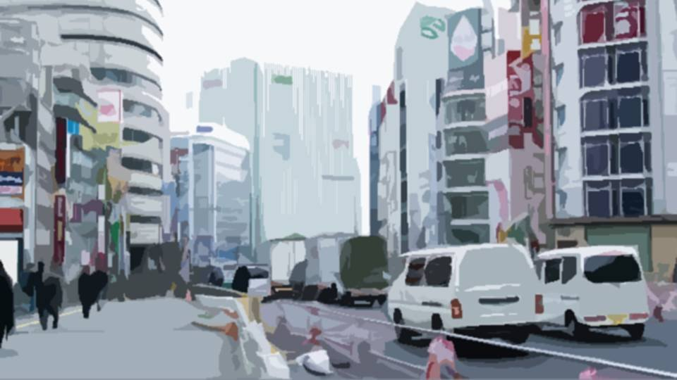
After changing trains a few times, I arrived at a bustling station.
This place is apparently called 'Sawa-Minakami Station.'
I've heard that Minakami City is the prefectural capital of Sawa Prefecture, a city with a population of about 400,000.
I can probably manage here.
This place is apparently called 'Sawa-Minakami Station.'
I've heard that Minakami City is the prefectural capital of Sawa Prefecture, a city with a population of about 400,000.
I can probably manage here.
"Whoa..."
I'm overwhelmed by a cluster of buildings I've only ever seen on the school trip.
I see. So this is what they call civilization.
Animals... there aren't any...
With this many people around, the animals probably won't come near, so if I'm going to hunt, night would be better.
I'm overwhelmed by a cluster of buildings I've only ever seen on the school trip.
I see. So this is what they call civilization.
Animals... there aren't any...
With this many people around, the animals probably won't come near, so if I'm going to hunt, night would be better.
What I have with me right now is a few days' changes of clothes and toiletries―
and just two knives I'm used to using.
After all, I had no time to prepare.
I had to pick a time when no one would see me leave home, and on top of that, 'that' came suddenly.
I'd actually meant to leave on August 1, my 15th birthday, but because 'that' came so suddenly, I had to move my plans up by nearly 4 months.
After all, I had no time to prepare.
I had to pick a time when no one would see me leave home, and on top of that, 'that' came suddenly.
I'd actually meant to leave on August 1, my 15th birthday, but because 'that' came so suddenly, I had to move my plans up by nearly 4 months.
It was one or the other: 'that' first, or turning 15 first.
But honestly, I couldn't really picture that happening to me.
Though I do feel it's late for my age.
But honestly, I couldn't really picture that happening to me.
Though I do feel it's late for my age.
Now, first I need to secure a base.
I'll head toward the mountains as far as I can and look for a cave or a big tree that's perfect to live in, or else an empty house.
Even better if there's a stream nearby.
I'll head toward the mountains as far as I can and look for a cave or a big tree that's perfect to live in, or else an empty house.
Even better if there's a stream nearby.
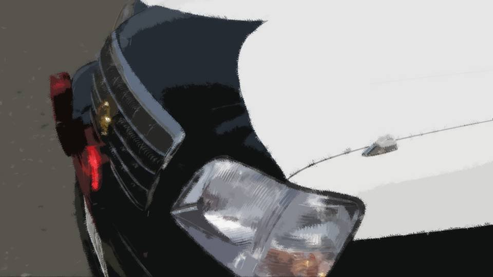
―And then,
several police cars race past right in front of me, lined up one behind another.
Their roof lights are spinning, but they're not sounding their sirens, and their speed is normal.
Some kind of security detail?
I'll try following them a little.
Their roof lights are spinning, but they're not sounding their sirens, and their speed is normal.
Some kind of security detail?
I'll try following them a little.
I thought about running after them, but at school there was no one who could run as fast as me.
A TV drama said that to live among lots of people, it's better to avoid standing out.
I decide to follow them at a light jog, about the same as everyone else.
A TV drama said that to live among lots of people, it's better to avoid standing out.
I decide to follow them at a light jog, about the same as everyone else.
I shift my bag on my shoulder and head off in the direction the police cars went.
This town has a lot of traffic lights.
Every 500 meters or so, the police cars stop at a light.
So I can catch up to them right away.
In this town, with so many people and so many cars, cars don't seem very useful.
This town has a lot of traffic lights.
Every 500 meters or so, the police cars stop at a light.
So I can catch up to them right away.
In this town, with so many people and so many cars, cars don't seem very useful.
I ran through Minakami City for about an hour, chasing the police cars.
Luckily I never lost sight of them, and it seems I made it to their destination.
Luckily I never lost sight of them, and it seems I made it to their destination.
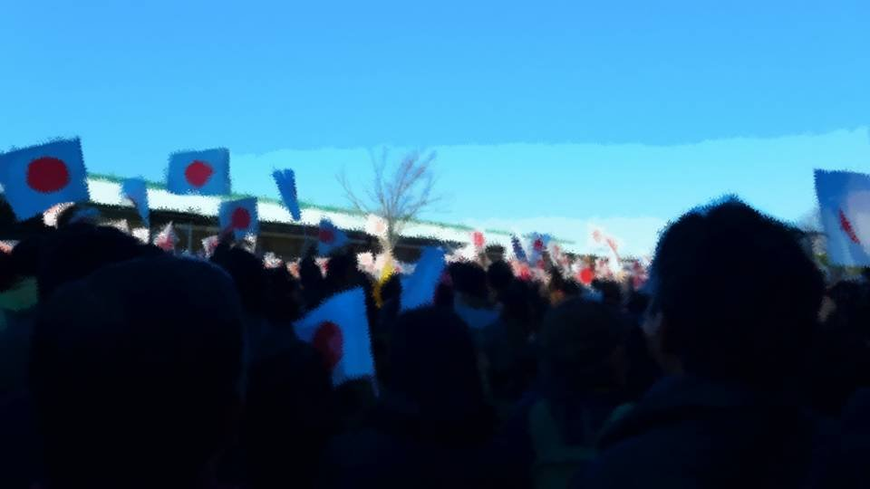
There, a crowd of thousands.
Everyone is holding Rising Sun flags and shouting toward something.
And lots of people are taking pictures.
At my height, I can't see the front very well...
Everyone is holding Rising Sun flags and shouting toward something.
And lots of people are taking pictures.
At my height, I can't see the front very well...
"His Majesty the Emperor, banzaaai!"
"Your Majesty the Empreeess!"
His Majesty the Emperor?
If he's really here, this is the perfect chance to lay eyes on him!
"Your Majesty the Empreeess!"
His Majesty the Emperor?
If he's really here, this is the perfect chance to lay eyes on him!
I see, so the Sawa Prefectural Police and whoever else are out as his security detail.
The flag-waving gawkers cheer even louder.
His Majesty the Emperor and the Empress must be waving to everyone with gentle smiles.
It dawns on me, belatedly, that I may be in an outrageous place.
Since I'm here anyway, I'll mingle with the gawkers a little longer.
The flag-waving gawkers cheer even louder.
His Majesty the Emperor and the Empress must be waving to everyone with gentle smiles.
It dawns on me, belatedly, that I may be in an outrageous place.
Since I'm here anyway, I'll mingle with the gawkers a little longer.
Then, from beyond the crowd, a black car sets off and, flanked by police cars, heads away somewhere.
And the gawkers scatter.
It seems His Majesty the Emperor has left.
Seems I got here a little too late.
And the gawkers scatter.
It seems His Majesty the Emperor has left.
Seems I got here a little too late.
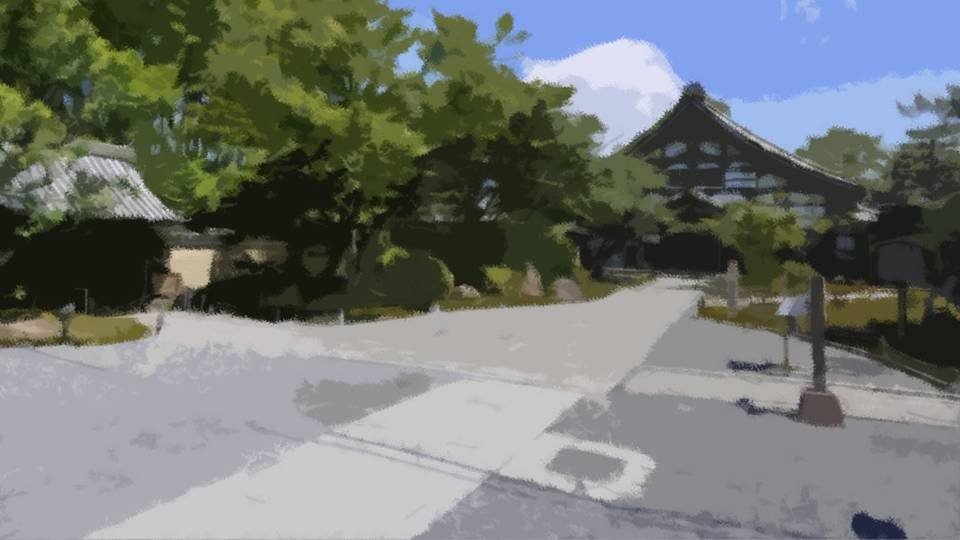
Looking around again, I seem to be in front of grounds with large gardens.
It looks like there's an admission fee, but beyond the gate I can glimpse vivid flowers.
It's already spring, after all.
So His Majesty was here on a visit.
It looks like there's an admission fee, but beyond the gate I can glimpse vivid flowers.
It's already spring, after all.
So His Majesty was here on a visit.
Thanks to chasing the police cars, I seem to have come out to the edge of town.
The mountains are right there, too.
Okay, I'll look for a place to sleep around here.
Just then, a man walks up.
The mountains are right there, too.
Okay, I'll look for a place to sleep around here.
Just then, a man walks up.
"Hey, hey, what are you doing with that big bag?"
He's about 50, maybe?
His clothes are youthful for his face, he's neat, and at a glance he makes a good impression.
What am I doing, he asks...
He's about 50, maybe?
His clothes are youthful for his face, he's neat, and at a glance he makes a good impression.
What am I doing, he asks...
"Um... I was thinking I'd look for a place to sleep tonight."
"Huh? Miss, don't tell me you ran away from home?"
"Well... I guess you could say that..."
"Then I'll show you a nice place! Come on, the car's over this way!"
"Huh? Miss, don't tell me you ran away from home?"
"Well... I guess you could say that..."
"Then I'll show you a nice place! Come on, the car's over this way!"
At last I understand the situation.
So this is what they call a pickup.
In elementary school, I was a kid who told nothing but dirty jokes to Haruka-chan and my school friends, so my knowledge in that area was way beyond my age.
But around when I started middle school, Mommy scolded me that it was about time I learned how to carry myself as a woman, and since then I've kept the crude talk sealed away.
So this is what they call a pickup.
In elementary school, I was a kid who told nothing but dirty jokes to Haruka-chan and my school friends, so my knowledge in that area was way beyond my age.
But around when I started middle school, Mommy scolded me that it was about time I learned how to carry myself as a woman, and since then I've kept the crude talk sealed away.
At first glance, I'm a runaway girl fresh from the countryside.
And that sheltered girl is being picked up by some old guy I don't know.
This looks fun!
If it looks like I'm in danger, I can just run, or beat him to a pulp.
Judging from his build and the way he moves, he's clearly weaker than me.
And that sheltered girl is being picked up by some old guy I don't know.
This looks fun!
If it looks like I'm in danger, I can just run, or beat him to a pulp.
Judging from his build and the way he moves, he's clearly weaker than me.
"Really!? I'm so glad I met a nice person!
You'll show me a nice place...
what kind of place is it?"
Smiling, I play along with the old guy's offer.
"Why, a place with a proper bed and bath and everything! This old guy's somebody important, you know!"
"Wow, amaaazing! I'll go, I'll go!"
Smiling, I play along with the old guy's offer.
"Why, a place with a proper bed and bath and everything! This old guy's somebody important, you know!"
"Wow, amaaazing! I'll go, I'll go!"
I have no intention whatsoever of relying on this old guy.
It's just curiosity, and if things look dangerous, I'll just run.
Whatever my real purpose is, I came all the way to a big town, so it's no fun without an event like this.
It's just curiosity, and if things look dangerous, I'll just run.
Whatever my real purpose is, I came all the way to a big town, so it's no fun without an event like this.
I get into the car he leads me to, leave the destination to the old guy, and relax in the passenger seat.
As before, the car keeps getting caught at red lights, with none of the speed of the buggy back in Arata.
At this rate, I'd be faster on foot...
Still, this car is fitted with some imposing machinery I've never seen before.
What's it used for?
As before, the car keeps getting caught at red lights, with none of the speed of the buggy back in Arata.
At this rate, I'd be faster on foot...
Still, this car is fitted with some imposing machinery I've never seen before.
What's it used for?
"Miss, what's your name?"
"I'm... My name's Akina Furumura."
Just in case, I give a false name I came up with on the spot.
Turning Kana Niimura into Akina Furumura was maybe a little too easy... [TN: nii/furu = new/old, ka/aki = summer/autumn]
"I'm... My name's Akina Furumura."
Just in case, I give a false name I came up with on the spot.
Turning Kana Niimura into Akina Furumura was maybe a little too easy... [TN: nii/furu = new/old, ka/aki = summer/autumn]
"Akina-chan, huh! What a cute name!"
This old guy is blatantly a lolicon...
I'll egg him on a little more.
This old guy is blatantly a lolicon...
I'll egg him on a little more.
"Hehe! I turn 15 this year! Finally, I round up to 20!"
"So you're 14 now, huh! I see, I see! Hmmm! I see, I see!"
I desperately hold back from bursting out laughing.
This blatant, I don't find him creepy―if anything, I almost find him cute.
"So you're 14 now, huh! I see, I see! Hmmm! I see, I see!"
I desperately hold back from bursting out laughing.
This blatant, I don't find him creepy―if anything, I almost find him cute.
"Akina-chan, are you half-Japanese!?
Your skin's so white and your face is so pretty, and your eyes are blue and green, too!"
"That's right! My dad's half Japanese, half American, and my mom's Russian!"
Of course, this is a huge lie.
Despite how I look, I'm fully Japanese.
"That's right! My dad's half Japanese, half American, and my mom's Russian!"
Of course, this is a huge lie.
Despite how I look, I'm fully Japanese.
"Ho-hooo! I see, I see!
Hmmm! I see, I see!"
"Ehehe, do I have a cute face!?"
"Anyone can see it! I thought you were a fairy!"
At that, for a second, I burst out snorting.
Me...! A fairy...!
"Ehehe, do I have a cute face!?"
"Anyone can see it! I thought you were a fairy!"
At that, for a second, I burst out snorting.
Me...! A fairy...!
"Akina-chan, where are you from?"
"Um... Iizawa Prefecture!"
"Iizawa Prefecture!? You came all the way from the next prefecture over, huh... Why Sawa Prefecture?"
"I figured, if I'm going anyway, I'd go somewhere nobody knows me!"
"Um... Iizawa Prefecture!"
"Iizawa Prefecture!? You came all the way from the next prefecture over, huh... Why Sawa Prefecture?"
"I figured, if I'm going anyway, I'd go somewhere nobody knows me!"
"I see, I see! Akina Furumura-chan, 14, from Iizawa Prefecture, huh!"
"Yes!"
The old guy, going out of his way to repeat my personal information.
Akina-chan（provisional）, answering cheerfully.
This cheerful, maybe it's a little too much of an act...
I'll put on a slightly anxious act and try tugging at his male heartstrings.
"Yes!"
The old guy, going out of his way to repeat my personal information.
Akina-chan（provisional）, answering cheerfully.
This cheerful, maybe it's a little too much of an act...
I'll put on a slightly anxious act and try tugging at his male heartstrings.
"Um... but why are you being so kind to me?
Could it be you want to do something weird to me..."
"Does this old guy... look like a bad person to you...?"
You do, you do! You totally do!
Or rather, never mind your looks, it's what you say and do that's suspicious!
"I just thought... you might be a little dangerous..."
"Does this old guy... look like a bad person to you...?"
You do, you do! You totally do!
Or rather, never mind your looks, it's what you say and do that's suspicious!
"I just thought... you might be a little dangerous..."
"Hmm, I figured as much...
Guess that's why this kind of work suits this old guy, huh."
............?
Normally you'd hide how suspicious you are as much as you could and pretend to be a gentleman...
............?
Normally you'd hide how suspicious you are as much as you could and pretend to be a gentleman...
"Here we are."
The car pulls into a big parking lot in front of a big building.
And instead of parking in the outdoor lot, it heads for the building's underground entrance.
Where... is this?
Not knowing who the old guy really is, I gradually start to feel uneasy.
The car pulls into a big parking lot in front of a big building.
And instead of parking in the outdoor lot, it heads for the building's underground entrance.
Where... is this?
Not knowing who the old guy really is, I gradually start to feel uneasy.
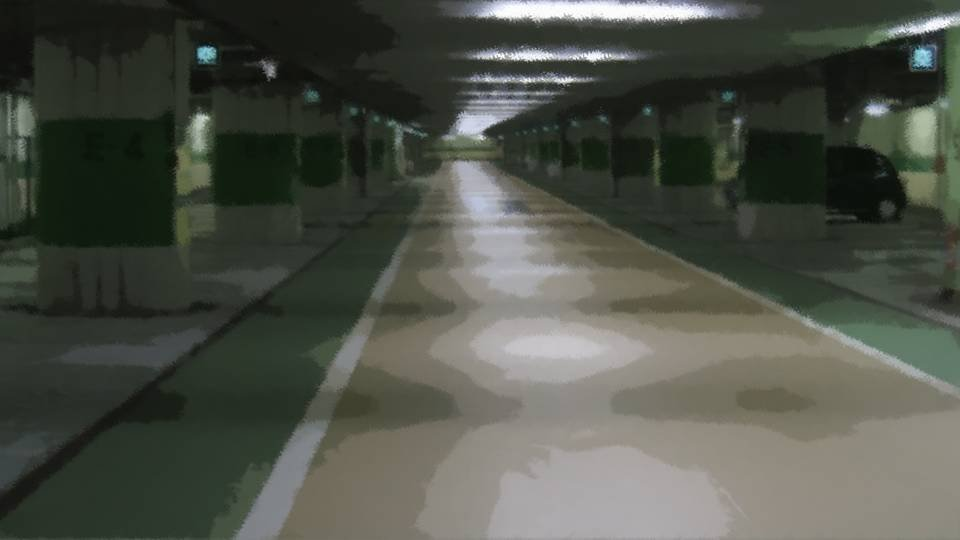
"Okay, let's get out."
"Um... where is this?"
"Sawa Prefectural Police Headquarters. The police."
"The police!?"
"Um... where is this?"
"Sawa Prefectural Police Headquarters. The police."
"The police!?"
"His Majesty the Emperor is visiting today, so we had a lot of plainclothes officers posted, and you were obviously a runaway girl.
So I'm taking you into protective custody here."
Then he shows me a police badge with a photo of the same face as the old guy's.
Then he shows me a police badge with a photo of the same face as the old guy's.
"A police officer!?
Um... do I have to go home...?"
"That's right. Now, get out."
No way...! If I go home I'll run right into Mommy!
Until the color of these eyes is cured like Sis's was, I can't possibly see Mommy...!
"That's right. Now, get out."
No way...! If I go home I'll run right into Mommy!
Until the color of these eyes is cured like Sis's was, I can't possibly see Mommy...!
If he were a pervert, I could've beaten him to a pulp, but the police are another story.
I'll just have to find an opening and run...
No, if it got out that I'd run away from the police, it might cause trouble for Daddy and Mommy.
It can't be helped. I'll claim that Mommy and I had a fight, use that story, and try to have contact only with Daddy as much as I can.
I'll just have to find an opening and run...
No, if it got out that I'd run away from the police, it might cause trouble for Daddy and Mommy.
It can't be helped. I'll claim that Mommy and I had a fight, use that story, and try to have contact only with Daddy as much as I can.
"Um... I don't want to see Mommy.
If you're going to tell my parents, I want to talk to Daddy."
"Well, come inside for now."
I'd better do as I'm told for now.
Maybe I should've at least left a note.
"Well, come inside for now."
I'd better do as I'm told for now.
Maybe I should've at least left a note.
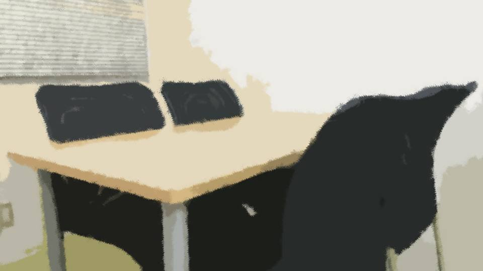
"Sit down and wait.
Right now, as it happens, the important person in charge of the healthy development of young people for the prefecture is here."
With that, the old guy left the room.
With that, the old guy left the room.
Is this an interrogation room?
It's a little different from what I'd imagined.
It's bare, but instead of a crude desk and folding chairs, it's more like a guidance counselor's office...
It's a little different from what I'd imagined.
It's bare, but instead of a crude desk and folding chairs, it's more like a guidance counselor's office...

Then, before long, the door to the room opened.
The one who appeared there was past 30, maybe?
His face is well-proportioned, handsome-ish.
Age gap aside, he might be pretty much my type.
If he's in the healthy development of young people, he must be used to handling runaway girls, too.
The one who appeared there was past 30, maybe?
His face is well-proportioned, handsome-ish.
Age gap aside, he might be pretty much my type.
If he's in the healthy development of young people, he must be used to handling runaway girls, too.
But he immediately went back into the hallway and slammed the door shut.
"Wh-wh-what was that pretty girl just now!
Calm down! You must calm down!
What I must do is the wholesome development of a pretty girl, and never, ever look at her with sexual eyes!"
Through the door comes muttering that even my hearing can barely make out.
Then, this time, the door is flung open.
Then, this time, the door is flung open.
"Y-y-y-you theeere!
What an indecent thing for a pretty girl to do!"
"Pardon?"
What is he talking about...?
From the look of things, this man is a lolicon too...
No, there's the example of that old guy earlier.
This man seems to be a pro at handling runaway girls, so that's probably not it.
"Pardon?"
What is he talking about...?
From the look of things, this man is a lolicon too...
No, there's the example of that old guy earlier.
This man seems to be a pro at handling runaway girls, so that's probably not it.

"N-n-n-name ish,
Furumura aaah
Akina, is that right!?"
"Huh!? Y... yes..."
Swept along by his momentum, I answered to the false name.
I thought about correcting it, but the man is looking down a little, trembling all over.
It's hard to say anything to him...
"Huh!? Y... yes..."
Swept along by his momentum, I answered to the false name.
I thought about correcting it, but the man is looking down a little, trembling all over.
It's hard to say anything to him...

"Wh-
wh-
wh-
Where you're from,
is it really I-i-i-Iizawa Prefecture!?"
"Huh?"
"I-i-i-if that's a lie, who are you!?"
"What?"
"Huh?"
"I-i-i-if that's a lie, who are you!?"
"What?"
His breathing, the trembling of his body, the cold sweat―
this man is very nervous.
A lolicon after all...
No, going by the old guy earlier, they make themselves look like lolicons.
I won't fall for that. I steel myself again.
A lolicon after all...
No, going by the old guy earlier, they make themselves look like lolicons.
I won't fall for that. I steel myself again.
"S-sorry! Actually, I came from Motoki-cho in Sawa Prefecture!"
Seizing the chance, I lie about where I'm from.
Because if I told the truth, I might get sent back to Iizawa Prefecture.
By the way, I said Motoki-cho because I remembered it's where Haruka-chan, who's in the mountain seclusion now, used to live.
Seizing the chance, I lie about where I'm from.
Because if I told the truth, I might get sent back to Iizawa Prefecture.
By the way, I said Motoki-cho because I remembered it's where Haruka-chan, who's in the mountain seclusion now, used to live.
"M-m-m-Motoki-cho!? A rare find like this has been buried there all this time!?"
............!?
He saw through to my being a rare find!?
It's true, at hunting I'm second to none.
But that clearly doesn't fit the flow of the conversation; he must mean something else.
............!?
He saw through to my being a rare find!?
It's true, at hunting I'm second to none.
But that clearly doesn't fit the flow of the conversation; he must mean something else.
"Phew... calm down, man..."
"Um... could you tell me your name!?"
"M-m-my name!?"
With that, he snaps his back straight and fixes me with a sharp look.
"Um... could you tell me your name!?"
"M-m-my name!?"
With that, he snaps his back straight and fixes me with a sharp look.
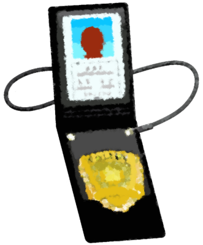
"Ahem! Sawa Prefectural Police, Motoki Police Station―Inspector Daijiro Ise!
And though I may not look it, I'm a director on the Sawa Prefecture Committee for the Healthy Development of Young People!"
And he snaps his police badge out in front of me.
Inspector, and director―those titles.
This man might really be someone important.
And he snaps his police badge out in front of me.
Inspector, and director―those titles.
This man might really be someone important.
"A-anyway...
His Majesty the Emperor's security detail is done, so I must return to Motoki-cho as well.
Y-you live in Motoki-cho, correct!?"
"Yes... well..."
"Th-th-th-then! T-t-t-together... let's go home together!"
"Home?"
"Yes... well..."
"Th-th-th-then! T-t-t-together... let's go home together!"
"Home?"

"N-n-n-n-n-no, not home―HOME!
You know, that thing! You call your own town your hometown, so, home!
I mean HOME!"
"U-uh-huh..."
I can't tell if he's full of bluster or has stage fright.
Or rather, his talk is so scattered I can't get a grip on what kind of person he is.
And he's just my type to look at, too... what a waste.
"U-uh-huh..."
I can't tell if he's full of bluster or has stage fright.
Or rather, his talk is so scattered I can't get a grip on what kind of person he is.
And he's just my type to look at, too... what a waste.
Either way, this person called Ise-san will probably take me to Motoki-cho.
Honestly, I've never even set foot in Motoki-cho.
I have a feeling my runaway drama is going to be far more eventful than I imagined.
Honestly, I've never even set foot in Motoki-cho.
I have a feeling my runaway drama is going to be far more eventful than I imagined.
"A-a-a-a-anyway, the rest of this conversation shall take place at Motoki Police Station!
By the way...
how's your stomach?"
"My stomach?"
"N-n-no, um, that is, er... have you eaten?"
Come to think of it, I haven't eaten anything yet today.
It's already 3 p.m.
At those words my stomach reacts, and I start to feel a little hungry.
"My stomach?"
"N-n-no, um, that is, er... have you eaten?"
Come to think of it, I haven't eaten anything yet today.
It's already 3 p.m.
At those words my stomach reacts, and I start to feel a little hungry.
"No, not yet."
"G-good! Then the meal shall take place on the way to Motoki-cho! Any objections... do you have any objection to a meal with me!?"
Apparently he's going to treat me to a meal.
The consideration from this man acting so suspiciously makes me just a little happy.
"G-good! Then the meal shall take place on the way to Motoki-cho! Any objections... do you have any objection to a meal with me!?"
Apparently he's going to treat me to a meal.
The consideration from this man acting so suspiciously makes me just a little happy.
"N-no! No objections!"
"G-good! Well said! Food and sleep are what drive a human being! A pretty girl, after all, must be wholesome and healthy!"
Calling me a pretty girl aside, what does 'wholesome and healthy' mean?
Oh, right, this man is a director on the Committee for the Healthy Development of Young People.
"G-good! Well said! Food and sleep are what drive a human being! A pretty girl, after all, must be wholesome and healthy!"
Calling me a pretty girl aside, what does 'wholesome and healthy' mean?
Oh, right, this man is a director on the Committee for the Healthy Development of Young People.
―After that, Ise-san and I got into an ordinary car that didn't look like a police car at first glance, and set off for Motoki-cho.
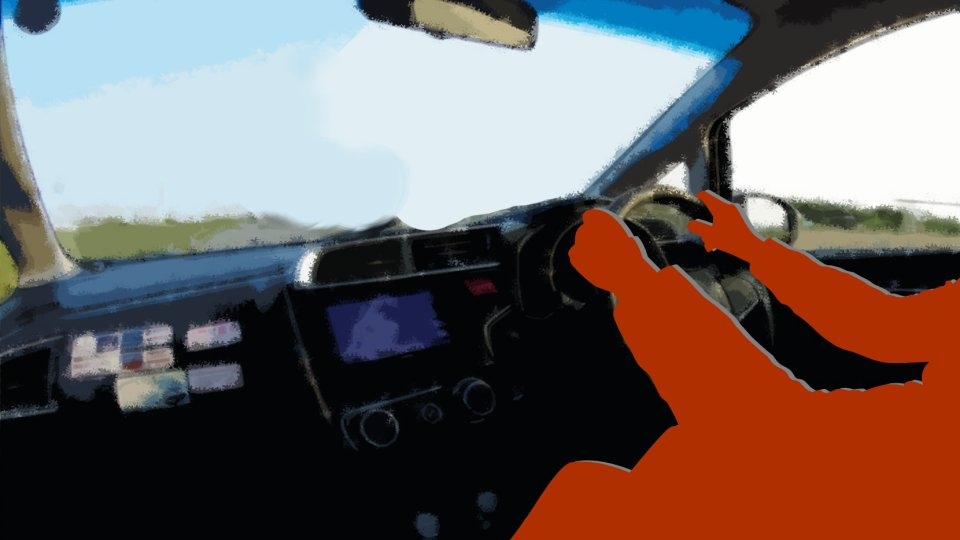
From Minakami City to Motoki-cho is about 2 hours on the expressway, apparently.
With a meal along the way, it'll probably be evening by the time we arrive.
With a meal along the way, it'll probably be evening by the time we arrive.
But there's no sign at all of us getting on the expressway.
Beside the national route we're driving on, I can see the expressway we're supposed to take.
Beside the national route we're driving on, I can see the expressway we're supposed to take.
"Um... Ise-san?"
"............"
No answer from Ise-san.
He just keeps looking ahead with serious eyes, driving at a safe speed.
Since he's a police officer, he doesn't talk while driving, for safety's sake?
Even so, he should at least respond to small talk.
"............"
No answer from Ise-san.
He just keeps looking ahead with serious eyes, driving at a safe speed.
Since he's a police officer, he doesn't talk while driving, for safety's sake?
Even so, he should at least respond to small talk.
"Um, Ise-san!?"
"Wh-wh-what!? Shouting all of a sudden...!"
"I've been calling you for a while now..."
"I-I-I-I-I see! What do you want!?"
Seems he just wasn't listening.
"Wh-wh-what!? Shouting all of a sudden...!"
"I've been calling you for a while now..."
"I-I-I-I-I see! What do you want!?"
Seems he just wasn't listening.
"Aren't you getting on the expressway?"
"Wha!? R-restraints, you say!? [TN: kosoku 'expressway' and kosoku 'restraint' sound the same] How indecent! You, such an innocent young girl, shouldn't say such things!"
For some reason, I got scolded.
Is 'expressway' some kind of police slang?
"Wha!? R-restraints, you say!? [TN: kosoku 'expressway' and kosoku 'restraint' sound the same] How indecent! You, such an innocent young girl, shouldn't say such things!"
For some reason, I got scolded.
Is 'expressway' some kind of police slang?
"Um... aren't you getting on the highway?"
"Highway? You mean the expressway!? In that case... huh? We already passed it..."
Is this man really okay?
"Highway? You mean the expressway!? In that case... huh? We already passed it..."
Is this man really okay?
"W-while we're at it, we'll stop at a diner up ahead.
It's a place I go to a lot, so I guarantee the taste."
"Okay... Um, why are you so nervous?"
"Wh-wh-what!? I am not nervous! I ab nod nerbous...!"
Now he's started tripping over his words...
If he keeps driving like this, he could cause an accident.
"Okay... Um, why are you so nervous?"
"Wh-wh-what!? I am not nervous! I ab nod nerbous...!"
Now he's started tripping over his words...
If he keeps driving like this, he could cause an accident.
At times like this...
yeah, it'd be best for me to help loosen up his nerves.
Mommy said that at times like this, it's good to ask lots of questions and wait for the worries to slip out.
Okay! I'll give it a try too!
Mommy said that at times like this, it's good to ask lots of questions and wait for the worries to slip out.
Okay! I'll give it a try too!
"Um, Ise-san, why did you decide to become a police officer?"
"Wh-what's this, all of a sudden...!?"
"Oh... I just thought it'd be nice to talk, since we have the chance."
"You... are interested in me?"
Interest, or... how should I put it...
I just don't want him to be nervous, that's all.
"Wh-what's this, all of a sudden...!?"
"Oh... I just thought it'd be nice to talk, since we have the chance."
"You... are interested in me?"
Interest, or... how should I put it...
I just don't want him to be nervous, that's all.
"Yes! On a journey, a companion; in the world, kindness!
In the spirit of ichigo ichie, always spread smiles around!
Mommy used to say that a lot!"
"I-I see... The reason I became a police officer... You probably wouldn't know, but back when I was a student, Motoki-cho didn't have that many people..."
"I-I see... The reason I became a police officer... You probably wouldn't know, but back when I was a student, Motoki-cho didn't have that many people..."
The nervousness that had him fidgeting until now suddenly turns into a taut, serious tension.
I don't know much about Motoki-cho, but it looks like I can steer the talk in a good direction.
I don't know much about Motoki-cho, but it looks like I can steer the talk in a good direction.
"But around when I turned 20, the atmosphere in Motoki-cho suddenly started to change.
A lot more people started moving in for the famous cherry blossoms.
When the population grows, public order inevitably tends to get worse.
So I became a police officer because I wanted to keep the peace in Motoki-cho."
It was a surprisingly serious answer.
Since he holds an important post at his age, he must have done a great deal for Motoki-cho.
He must be a model police officer, not just in words but in deeds.
Since he holds an important post at his age, he must have done a great deal for Motoki-cho.
He must be a model police officer, not just in words but in deeds.
"Then, Ise-san, you're the one protecting the peace of Motoki-cho.
It must be a nice place..."
"?"
Oops. What I just said gives away completely that I don't live in Motoki-cho.
"?"
Oops. What I just said gives away completely that I don't live in Motoki-cho.
"Well, I'll ask where you came from once we get to Motoki-cho.
Prying it out of you recklessly wouldn't lead to the wholesome development of young people."
"Sorry..."
"What's your real name?"
"............ Kana Niimura..."
"Sorry..."
"What's your real name?"
"............ Kana Niimura..."
"Niimura?"
Hearing my real name, a slightly dubious look from Ise-san.
Hearing my real name, a slightly dubious look from Ise-san.
"Earlier you said Motoki-cho must be a nice place...
And it's true, normally it's a nice place.
But 4 years ago a vicious crime occurred, and the suspect disappeared with a child."
There really was a case like that.
My friends at school said it was deeply connected to the Megasawa City case...
There really was a case like that.
My friends at school said it was deeply connected to the Megasawa City case...
"The suspect's surname was 'Niimura.'
We're still on that person's trail, but there's been no lead at all.
Iizawa Prefecture's Arata district was another guess, but that missed too.
The Iizawa Prefectural Police searched the whole settlement, but in the end they came up empty."
Iizawa Prefecture's Arata district means none other than the Arata settlement.
I had no idea there'd been an investigation like that.
Iizawa Prefecture's Arata district means none other than the Arata settlement.
I had no idea there'd been an investigation like that.
But 4 years ago, two people with the surname Niimura did come to the Arata settlement.
Auntie and Haruka-chan.
Right now they're in the mountain seclusion and not in the settlement.
No matter how much you search the settlement, you'd never find them.
Auntie and Haruka-chan.
Right now they're in the mountain seclusion and not in the settlement.
No matter how much you search the settlement, you'd never find them.
Should I tell Ise-san about this?
The suspect Ise-san means must be Auntie.
I'm sure Daddy and Mommy, and Grandma, who's passed away, have all been hiding Auntie.
Considering that, for me to say anything...
The suspect Ise-san means must be Auntie.
I'm sure Daddy and Mommy, and Grandma, who's passed away, have all been hiding Auntie.
Considering that, for me to say anything...
"The investigation is mostly winding down now.
But people I know are still earnestly hoping that the child who was taken will come back.
I can't just cut off their hopes that easily.
If I give up here, the peaceful Motoki-cho I wanted would..."
In this case, which side is justice on?
Do I tell him where Auntie and Haruka-chan are, or do I keep quiet?
Even I know that I ought to tell him.
But as long as the whole settlement is hiding Auntie, I have a duty to do the same.
One for all, all for one.
Do I tell him where Auntie and Haruka-chan are, or do I keep quiet?
Even I know that I ought to tell him.
But as long as the whole settlement is hiding Auntie, I have a duty to do the same.
One for all, all for one.
"You have the same surname, and at first you said you were from Iizawa Prefecture, close to the Arata district.
Do you... know anything...?"
"I... don't know. I don't know anything..."
"I see... It's not that rare a surname. I guess I'm stretching it too far..."
"I... don't know. I don't know anything..."
"I see... It's not that rare a surname. I guess I'm stretching it too far..."
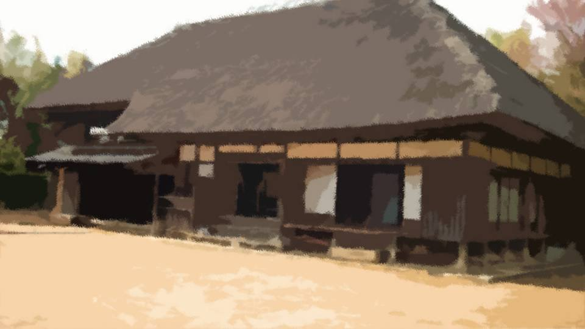
Ise-san pulled into a parking lot with an old building, partway there.
This seems to be the diner we're stopping at.
It's 4 p.m., hardly mealtime, and there isn't a single other car.
And for something called a diner, it's a plain, old-farmhouse-style building.
It reminds me a little of the Arata settlement.
This seems to be the diner we're stopping at.
It's 4 p.m., hardly mealtime, and there isn't a single other car.
And for something called a diner, it's a plain, old-farmhouse-style building.
It reminds me a little of the Arata settlement.
"Ohh my, welcoooome, Dai-chan."
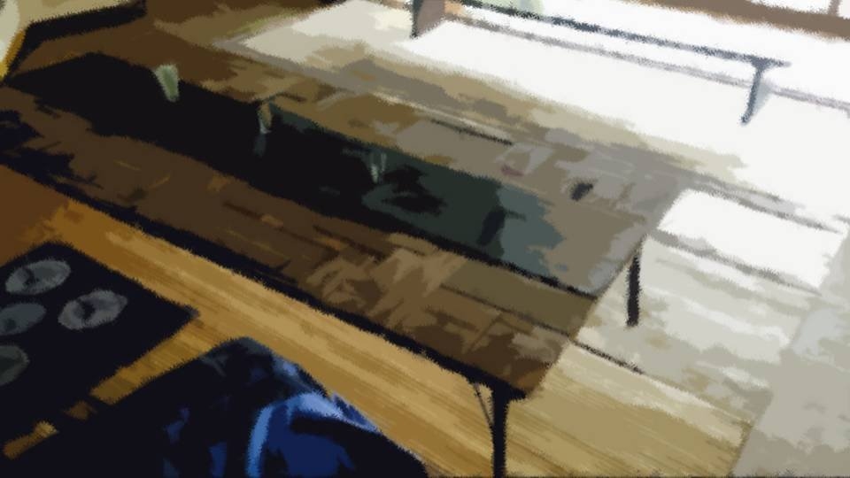
"Hello, it's been a while."
A doddering old woman greets us with a beaming smile.
There are no customers in the shop, but it's filled with the smell of delicious food.
A doddering old woman greets us with a beaming smile.
There are no customers in the shop, but it's filled with the smell of delicious food.
"Ohh my, Dai-chan, is that your girlfriend?"
"W-w-w-wait! No, no, no, no! I'm a police officer! Taking a young girl like this as a mistress―absolutely unacceptable! In the first place, laying a hand on an innocent young girl is something that must never happen, even for a police officer!"
The girlfriend theory has been denied with all his might.
Ise-san's looks are my type, so I feel a little lonely about that.
"W-w-w-wait! No, no, no, no! I'm a police officer! Taking a young girl like this as a mistress―absolutely unacceptable! In the first place, laying a hand on an innocent young girl is something that must never happen, even for a police officer!"
The girlfriend theory has been denied with all his might.
Ise-san's looks are my type, so I feel a little lonely about that.
"This girl is... well, it's like this. She's a distant relative of mine, and we happened to run into each other in Minakami City.
So I'm giving her a ride back to Motoki-cho while I'm at it.
Right? Right?"
Ise-san looks my way, frantically pleading for me to agree.
Ise-san looks my way, frantically pleading for me to agree.
"Ah, yes, my name is Kana Niimura!
I was walking through town when he suddenly called out to me, and I hopped right in and came along!"
"Just came up and spoke to her? I knew it, Dai-chan..."
"Just came up and spoke to her? I knew it, Dai-chan..."
"N-n-n-no, I said!
Hey, Akina-chan! Don't say weird things!"
"I'm not Akina, I'm Kana."
"So she was using a false name? Dai-chan, so you really are up to something shady..."
"Waaaaah...!"
"I'm not Akina, I'm Kana."
"So she was using a false name? Dai-chan, so you really are up to something shady..."
"Waaaaah...!"
Battered by every combo there is, Ise-san collapses on the spot.
Seeing Ise-san like that, the old woman cackles.
"The usual for you, Dai-chan? And what about you, young lady?"
"Huh? Um..."
But there's no menu on the walls or the tables.
Seeing Ise-san like that, the old woman cackles.
"The usual for you, Dai-chan? And what about you, young lady?"
"Huh? Um..."
But there's no menu on the walls or the tables.
"Then the same as 'Dai-chan'!"
"Yep, yep, the same as 'Dai-chan.' Honestly, Dai-chan, a police officer and still up to that kind of thing, huh."
The old woman teases Ise-san as she goes into the kitchen.
"Yep, yep, the same as 'Dai-chan.' Honestly, Dai-chan, a police officer and still up to that kind of thing, huh."
The old woman teases Ise-san as she goes into the kitchen.
"Pretty girls are to be cherished...
laying a hand on them... unthinkable..."
Ise-san mutters to himself, too quietly to make out.
Would it be that bad if I were his girlfriend...?
Ise-san mutters to himself, too quietly to make out.
Would it be that bad if I were his girlfriend...?
"Ise-san, don't you have a girlfriend or a wife?"
Still mumbling to himself, he shakes his head.
So I guess I'm out of his strike zone age-wise as well...
And I'm a runaway girl to begin with.
Still mumbling to himself, he shakes his head.
So I guess I'm out of his strike zone age-wise as well...
And I'm a runaway girl to begin with.
"Ise-san, what kind of person is your type?"
"My type...? Petite... innocent, you could say... carefree and open-hearted, you could say..."
Ise-san answers flatly.
Then apart from my age, aren't I a dead-center strike?
"My type...? Petite... innocent, you could say... carefree and open-hearted, you could say..."
Ise-san answers flatly.
Then apart from my age, aren't I a dead-center strike?
Ise-san's face is my type too, and he's very serious, and I think he's a wonderful man.
But the sticking point is the age gap, after all.
He's probably more than double my age.
But the sticking point is the age gap, after all.
He's probably more than double my age.
At school my friends and I often talk about what type of guy we like, but they all name delinquent types.
Maybe because they've picked up on that, once they're third-year middle schoolers, you see a few boys here and there acting tough in how they dress and what they say.
Boys that sloppy who talk back to the teachers just seem uncool to me.
Ise-san here, more than double my age, is a far better man.
Maybe because they've picked up on that, once they're third-year middle schoolers, you see a few boys here and there acting tough in how they dress and what they say.
Boys that sloppy who talk back to the teachers just seem uncool to me.
Ise-san here, more than double my age, is a far better man.
I guess Ise-san would rather have someone closer to his own age.
And he did say laying a hand on young girls is unthinkable.
And he did say laying a hand on young girls is unthinkable.
"What's life at school like for you?
No, this isn't questioning, just small talk..."
"School's ordinary. Ordinary, I mean... I go from home every day, and when classes are over I go back..."
"So you go diligently."
"I've never skipped. If I did, Daddy and Mommy would get mad at me."
"School's ordinary. Ordinary, I mean... I go from home every day, and when classes are over I go back..."
"So you go diligently."
"I've never skipped. If I did, Daddy and Mommy would get mad at me."
"You...
didn't run away from home, then..."
"Huh?"
"No, it's nothing. Any more and it'd turn into an interrogation. At least during a meal, it's better to relax."
"Ise-san... you're kind."
"............"
"Huh?"
"No, it's nothing. Any more and it'd turn into an interrogation. At least during a meal, it's better to relax."
"Ise-san... you're kind."
"............"
The man who was fidgeting until a moment ago has turned quiet and somber.
Ever since he talked in the car about why he became a police officer, and about the case 4 years ago, the air around Ise-san has been a little different.
Not so much somber as brooding.
Ever since he talked in the car about why he became a police officer, and about the case 4 years ago, the air around Ise-san has been a little different.
Not so much somber as brooding.
"Um, if there's anything you want to ask, go ahead and ask.
It's only small talk, after all."
"Small talk, huh..."
Then Ise-san takes a sip from his glass of water, which has no ice in it.
"Small talk, huh..."
Then Ise-san takes a sip from his glass of water, which has no ice in it.
"The kids I've taken into custody up to now have really been all kinds.
Some were always badly behaved, and some were serious through and through.
But what they had in common is that they were all just looking for a place to belong.
Things like home being hard to stay in because of family circumstances, or going along reluctantly so as not to ruin things with their friends from school."
"But you were going to school, and you have parents who'd scold you if you skipped.
You hadn't lost your place to belong, had you?"
Ise-san's eyes aren't blaming or angry, but somehow pitying.
Ise-san's eyes aren't blaming or angry, but somehow pitying.
"No, if it's hard to say, you don't have to say it."
"Um, why do you hold back from asking like that? Don't you have to properly get it out of people in cases like this...?"
"Um, why do you hold back from asking like that? Don't you have to properly get it out of people in cases like this...?"
"I want the boys and girls who've lost their place to belong to find a proper place to belong as soon as possible.
Forcing it out of them won't solve anything.
If I did that, they'd just repeat the same mistake again.
In that case, hearing them out thoroughly in one sitting is better for me, and better for them."
"I...
have a place to belong. There's no one I don't get along with.
But...
I'm sorry. I can't tell you about myself."
"I see... You must have circumstances that aren't the ordinary kind."
Far from ordinary―I can't see Mommy at all.
If I do, I'll kill Mommy.
"I see... You must have circumstances that aren't the ordinary kind."
Far from ordinary―I can't see Mommy at all.
If I do, I'll kill Mommy.
I'm told that when Sis was 10, she suddenly went into a frenzy and tried to kill Mommy.
But after being shut away in the basement of that secret base for a few days, the frenzy subsided, or so I heard.
And at the same time, they say, Sis's eyes, green and blue until then, both turned blue.
But after being shut away in the basement of that secret base for a few days, the frenzy subsided, or so I heard.
And at the same time, they say, Sis's eyes, green and blue until then, both turned blue.
When I started middle school, Mommy told me to improve my behavior a little more.
That it was about time I used polite language with adults I didn't know, and refrained from crude talk.
That's about all Mommy told me.
I've kept to what Mommy said, and believe it or not, I try to be as well-behaved a woman as I can.
That it was about time I used polite language with adults I didn't know, and refrained from crude talk.
That's about all Mommy told me.
I've kept to what Mommy said, and believe it or not, I try to be as well-behaved a woman as I can.
But Daddy was different.
What Daddy told me when I started middle school was to tell him as soon as I had my first period.
By age, it wouldn't have been strange if I'd already had it, but he said it right when I started middle school.
I suppose it was hard for Daddy to say, in all kinds of ways.
So I think he decided to just come out with it at the milestone of starting middle school.
What Daddy told me when I started middle school was to tell him as soon as I had my first period.
By age, it wouldn't have been strange if I'd already had it, but he said it right when I started middle school.
I suppose it was hard for Daddy to say, in all kinds of ways.
So I think he decided to just come out with it at the milestone of starting middle school.
But why did I have to tell Daddy something like that?
I asked him the reason, and that's when I heard about what happened with Sis in the past.
After Sis had her first period, she tried to kill Mommy.
I can't escape the same thing happening to me.
So I was to tell Daddy right away.
I asked him the reason, and that's when I heard about what happened with Sis in the past.
After Sis had her first period, she tried to kill Mommy.
I can't escape the same thing happening to me.
So I was to tell Daddy right away.
Daddy said he could suppress the urge to kill Mommy.
But once my period started, I must never, ever see Mommy.
Otherwise, before Daddy could suppress my urge to kill, I might kill Mommy.
Hearing that, I was terrified.
But once my period started, I must never, ever see Mommy.
Otherwise, before Daddy could suppress my urge to kill, I might kill Mommy.
Hearing that, I was terrified.
According to Daddy, to cure it, I first have to feel that murderous intent toward Mommy.
Then he'll give me some treatment, apparently, but...
The thought of wanting to kill Mommy is terrifying.
I can't bear having a thought like that, even for an instant.
Then he'll give me some treatment, apparently, but...
The thought of wanting to kill Mommy is terrifying.
I can't bear having a thought like that, even for an instant.
So I had decided.
That when I had my first period, or once I'd saved up enough allowance and had a plan for leaving home, I'd leave Arata.
I absolutely refuse to ever want to kill Mommy.
I don't know how he'd suppress my urge to kill, but even if it can be cured, I don't want to have a feeling like that.
Without the courage to face that fate, I ran away.
I suppose it comes from my own immaturity.
That when I had my first period, or once I'd saved up enough allowance and had a plan for leaving home, I'd leave Arata.
I absolutely refuse to ever want to kill Mommy.
I don't know how he'd suppress my urge to kill, but even if it can be cured, I don't want to have a feeling like that.
Without the courage to face that fate, I ran away.
I suppose it comes from my own immaturity.
An urge to kill that's hard to believe at first―
But I never once suspected Daddy of telling a lie like that.
Even now I don't doubt it.
If I meet Mommy, I'll want to kill her.
Even if it can be cured, if it means wanting to kill Mommy― I won't see Mommy.
But I never once suspected Daddy of telling a lie like that.
Even now I don't doubt it.
If I meet Mommy, I'll want to kill her.
Even if it can be cured, if it means wanting to kill Mommy― I won't see Mommy.
"Ise-san, I have a place to belong.
Daddy and Mommy and my friends at school―I love them all.
But I have to run away.
No...
I don't have the courage to face it, so all I can do is run..."
"So there are circumstances that are very hard to talk about..."
It's not so much hard to talk about as something no one would believe if they thought about it normally.
That my green eyes are cursed.
"So there are circumstances that are very hard to talk about..."
It's not so much hard to talk about as something no one would believe if they thought about it normally.
That my green eyes are cursed.
Besides, if I did tell him this, it would naturally lead to talk of the Arata settlement.
Then the talk would turn to Haruka-chan and Auntie too.
Telling this story is dangerous in that sense too.
Then the talk would turn to Haruka-chan and Auntie too.
Telling this story is dangerous in that sense too.
"Do your parents know why you left home?"
"They know... maybe..."
"Can't you contact your parents? You don't have to say where you are. Just let them know you're safe."
"Well, if that's all..."
"They know... maybe..."
"Can't you contact your parents? You don't have to say where you are. Just let them know you're safe."
"Well, if that's all..."
They're bound to be worried by now.
If I call, I'm sure they'll tell me to come straight back and see Mommy.
If I see Mommy and the urge to kill comes on, everything will be ready to lift this curse of the green eyes.
Even so, I don't have the courage to face it.
And how would he cure it, anyway?
If I call, I'm sure they'll tell me to come straight back and see Mommy.
If I see Mommy and the urge to kill comes on, everything will be ready to lift this curse of the green eyes.
Even so, I don't have the courage to face it.
And how would he cure it, anyway?
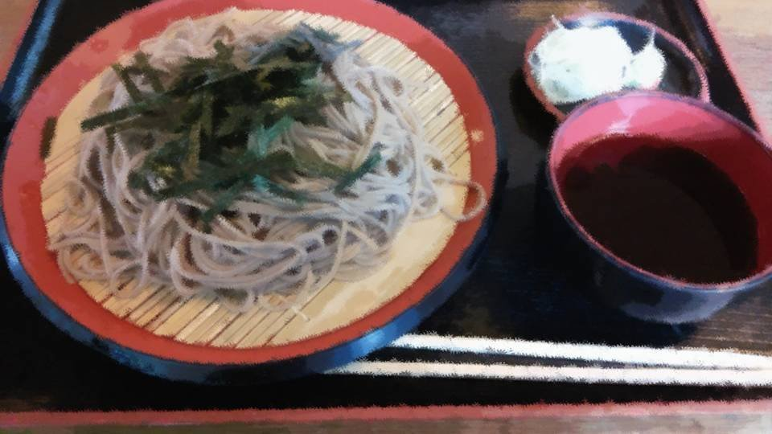
"Heeere we go, thanks for waaaiting!"
Just then, the old woman brought out our food.
This is... Zaru soba?
The sides are simple too, just nori and condiments.
Just then, the old woman brought out our food.
This is... Zaru soba?
The sides are simple too, just nori and condiments.
"Well, let's continue after we eat."
"Okay..."
"Normally soba's in season in the fall, but the soba here is a little unusual in that it tastes best in spring."
With that, Ise-san slurps up his soba vigorously.
I follow his example, dip just half a mouthful into the dipping sauce, and put it in my mouth.
"Okay..."
"Normally soba's in season in the fall, but the soba here is a little unusual in that it tastes best in spring."
With that, Ise-san slurps up his soba vigorously.
I follow his example, dip just half a mouthful into the dipping sauce, and put it in my mouth.
............
Delicious...!
This dipping sauce has a very familiar taste.
The stock must be made from nothing but things from the mountains.
Noodle dipping sauce usually has kombu or bonito in it, but this stock uses mushrooms, river fish, and mountain vegetables.
A very familiar taste, for someone like me who grew up deep in the mountains.
This dipping sauce has a very familiar taste.
The stock must be made from nothing but things from the mountains.
Noodle dipping sauce usually has kombu or bonito in it, but this stock uses mushrooms, river fish, and mountain vegetables.
A very familiar taste, for someone like me who grew up deep in the mountains.
And the soba, too, tastes like nothing I've eaten before.
Ise-san said soba is in season in the fall, but both the flavor and the way it goes down are completely different from the soba I usually eat.
A strong taste brimming with vitality, having come through the harsh cold of winter.
Compared to this, the soba I usually eat somehow lacks strength, maybe because it grew somewhere easy to grow.
Ise-san said soba is in season in the fall, but both the flavor and the way it goes down are completely different from the soba I usually eat.
A strong taste brimming with vitality, having come through the harsh cold of winter.
Compared to this, the soba I usually eat somehow lacks strength, maybe because it grew somewhere easy to grow.
The spring wild plants from the mountains of Arata are full to overflowing with this kind of strength too.
For harvesting a lot, fall is good, but if you want to take in the strength that vitality carries, spring ingredients suit it best.
For a while we kept slurping up this meal brimming with vitality, in silence.
For harvesting a lot, fall is good, but if you want to take in the strength that vitality carries, spring ingredients suit it best.
For a while we kept slurping up this meal brimming with vitality, in silence.
"Thanks for the meal, I'll come again."
"Okay, okaaay, be good to your girlfriend nooow."
The old woman saw us off cheerfully to the very end.
"Okay, okaaay, be good to your girlfriend nooow."
The old woman saw us off cheerfully to the very end.
The sun is starting to sink.
There are a lot of cherry trees around here.
There are hardly any cherry trees in the Arata settlement, so seeing a sight like this in the mountains is something new.
There are a lot of cherry trees around here.
There are hardly any cherry trees in the Arata settlement, so seeing a sight like this in the mountains is something new.
"Are cherry blossoms unusual to you?"
"I've never really seen cherry trees in the mountains."
"We'll be entering Motoki-cho soon. Motoki-cho is a place very famous for its cherry blossoms."
Famous for cherry blossoms...
Come to think of it, Mommy can sense danger at this time of year.
"I've never really seen cherry trees in the mountains."
"We'll be entering Motoki-cho soon. Motoki-cho is a place very famous for its cherry blossoms."
Famous for cherry blossoms...
Come to think of it, Mommy can sense danger at this time of year.
It's only under limited conditions, dark, cramped places, but there's no doubt the people of the settlement are always being helped by it.
"All right, let's go. This road tends to get crowded toward evening."
"Okay."
"Okay."
We get back in the car and head for Motoki-cho.
I look at Ise-san's profile as he drives.
Unlike when we first met, his gaze is very calm and earnest.
So was he pretending to be a lolicon to draw out what I really think?
I'm a little curious about that, too.
Unlike when we first met, his gaze is very calm and earnest.
So was he pretending to be a lolicon to draw out what I really think?
I'm a little curious about that, too.
"Um, you're awfully calm compared to the start. Why is that?"
"Huh?"
"At first you were all flustered and seemed a bit unreliable, but now you have a really serious look in your eyes."
"I just got used to it... There's no deep meaning."
"Used to it?"
"Huh?"
"At first you were all flustered and seemed a bit unreliable, but now you have a really serious look in your eyes."
"I just got used to it... There's no deep meaning."
"Used to it?"
"Well, er...
it's about a personal hobby, so don't dig into it too much..."
"Aha! So you ARE a lolicon, Ise-san!?"
At that moment, the car slams on the brakes, swaying left and right.
"Aha! So you ARE a lolicon, Ise-san!?"
At that moment, the car slams on the brakes, swaying left and right.
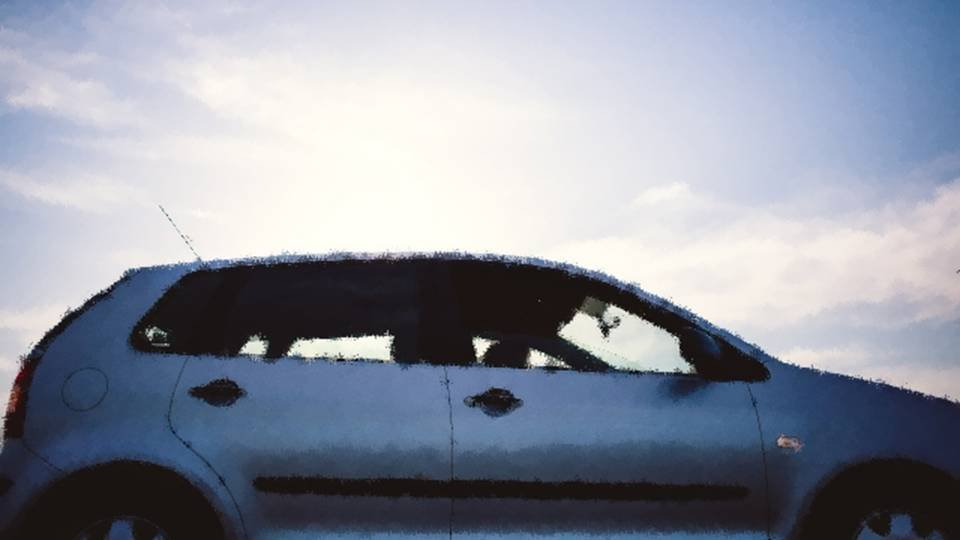
"Hah! Hah! What are you saying all of a sudden!"
"No... I just wondered if you were..."
"I am by no means a lolicon! A lolicon means a scoundrel who tries, by depraved means, to commit unwholesome acts on innocent young girls! What I aim for is the wholesome, healthy development of young girls!"
"No... I just wondered if you were..."
"I am by no means a lolicon! A lolicon means a scoundrel who tries, by depraved means, to commit unwholesome acts on innocent young girls! What I aim for is the wholesome, healthy development of young girls!"
"Ahh... are you the fantasizing type, maybe?"
"Argh, no, no! I simply want to cherish them, that's all!"
"Cherish them...?"
Ise-san turns bright red and starts the car without a word.
His face is stiff again, like when we first met.
"Argh, no, no! I simply want to cherish them, that's all!"
"Cherish them...?"
Ise-san turns bright red and starts the car without a word.
His face is stiff again, like when we first met.
"Hey, Ise-san."
"Wh-wh-what!? Go ahead and despise me if you want!"
"No, it's not that... Cherishing them is fine, but if so, it's better to narrow it down to just one."
"What's that supposed to mean..."
"Wh-wh-what!? Go ahead and despise me if you want!"
"No, it's not that... Cherishing them is fine, but if so, it's better to narrow it down to just one."
"What's that supposed to mean..."
"Girl or grown-up, a woman wants to be the only one you look at.
If you cherish girls here, there and everywhere, every one of them will turn away from you."
"I don't mind... I have no intention of laying a hand on them, and in fact I won't forgive anyone who does. Protecting girls from people like that is also my mission."
He's saying something sort of cool, but it's somehow comical.
"I don't mind... I have no intention of laying a hand on them, and in fact I won't forgive anyone who does. Protecting girls from people like that is also my mission."
He's saying something sort of cool, but it's somehow comical.
"What would you do if a girl came on to you, Ise-san?"
"Huh!?"
"It's just a 'what if.'"
"No... I've never even thought about something like that... Well, if she were serious, I'd have to ask her to wait until she turns 18."
"Huh!?"
"It's just a 'what if.'"
"No... I've never even thought about something like that... Well, if she were serious, I'd have to ask her to wait until she turns 18."
"Oh, so you really are a lolicon with principles, Ise-san!"
"Not a lolicon―a devotee of pretty girls...! I mean..."
"A devotee of pretty girls!? There's a title like that!?"
"Ugh, fine, say whatever you want..."
"Not a lolicon―a devotee of pretty girls...! I mean..."
"A devotee of pretty girls!? There's a title like that!?"
"Ugh, fine, say whatever you want..."
"Then we're partners who share each other's secrets!
I'm a runaway girl of unknown background, and Ise-san is a lolicon!"
"I said I'm not a lolicon, I'm a devotee of pretty girls!"
A strange sense of closeness springs up between Ise-san and me.
Teasing this man while we talk is quite fun.
"I said I'm not a lolicon, I'm a devotee of pretty girls!"
A strange sense of closeness springs up between Ise-san and me.
Teasing this man while we talk is quite fun.
"B-but you, you see... I'll have to send you back to your parents eventually.
Don't forget that."
"Understood..."
"Don't you need to contact your parents?"
"I don't have a cell phone."
"Then use mine."
"Understood..."
"Don't you need to contact your parents?"
"I don't have a cell phone."
"Then use mine."
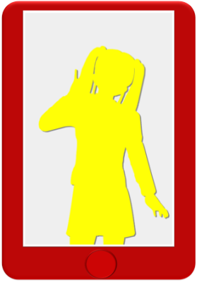
Ise-san hands me his smartphone.
Is this his personal smartphone?
The lock screen is a photo of a petite, cute girl with twin tails.
Is this his personal smartphone?
The lock screen is a photo of a petite, cute girl with twin tails.
"Who's in this photo?"
"Wh-what does it matter! Whoever it is..."
"I knew it! You're a lolicon, Ise-san!"
"That girl turns 20 this year! And anyway, I'm a devotee of pretty girls... no, never mind, call me whatever you want..."
"Ise-san, you're serious and good-looking, so if you just acted normal, I think cute girls would come to you."
"Wh-wh-what are you saying!"
"Wh-what does it matter! Whoever it is..."
"I knew it! You're a lolicon, Ise-san!"
"That girl turns 20 this year! And anyway, I'm a devotee of pretty girls... no, never mind, call me whatever you want..."
"Ise-san, you're serious and good-looking, so if you just acted normal, I think cute girls would come to you."
"Wh-wh-what are you saying!"
Leaving Ise-san to panic all over again, I dial our home number.
I dialed riding the momentum of this ridiculous conversation, but... I'm sure Daddy and Mommy are both angry.
As it starts ringing, I get a little nervous.
I dialed riding the momentum of this ridiculous conversation, but... I'm sure Daddy and Mommy are both angry.
As it starts ringing, I get a little nervous.
"Hello..."
"Hello, Daddy?"
"Kana!? Hey, where are you right now!?"
"Sorry, Daddy... I can't come back for a while..."
"What on earth happened...!"
"Hello, Daddy?"
"Kana!? Hey, where are you right now!?"
"Sorry, Daddy... I can't come back for a while..."
"What on earth happened...!"
"I... the thought of wanting to kill Mommy, I just...
can't bear it, no matter what..."
"I told you, Daddy can cure that!"
"Sorry, I still haven't sorted out my feelings. I'll come home sooner or later, so... just wait a little longer for me. Mommy―wanting to kill her... it's scary..."
"I told you, Daddy can cure that!"
"Sorry, I still haven't sorted out my feelings. I'll come home sooner or later, so... just wait a little longer for me. Mommy―wanting to kill her... it's scary..."
"But still...!"
"But! It's just... scary...! Please... just wait a little longer. Right now I'm too scared to come home..."
Just then, I hear Daddy heave a big sigh on the other end of the line.
"Are you eating properly?"
"Yeah..."
"But! It's just... scary...! Please... just wait a little longer. Right now I'm too scared to come home..."
Just then, I hear Daddy heave a big sigh on the other end of the line.
"Are you eating properly?"
"Yeah..."
"I understand how you feel, but Mommy is very worried too.
Get in touch as often as you can, okay?"
"Yeah, thank you..."
"Don't let some weird old man get hold of you, okay?"
For a moment I glance at Ise-san.
Ise-san is driving with a serious face, eyes on the road ahead.
"Yeah, thank you..."
"Don't let some weird old man get hold of you, okay?"
For a moment I glance at Ise-san.
Ise-san is driving with a serious face, eyes on the road ahead.
"Yeah, I'll watch out for weird people."
"Don't do anything too reckless, okay? If you want, Daddy alone can come to you right now, you know?"
"I'm fine. I just want to be alone for a little while."
"I see..."
Letting Daddy and Ise-san get close would be bad.
There'd be no point in hiding Auntie.
"Don't do anything too reckless, okay? If you want, Daddy alone can come to you right now, you know?"
"I'm fine. I just want to be alone for a little while."
"I see..."
Letting Daddy and Ise-san get close would be bad.
There'd be no point in hiding Auntie.
"Um, tell Mommy.
That I love Mommy and Daddy both."
"Want me to put Mommy on?"
"If you do, I might go crazy, right?"
"That's true... I don't know exactly when something like that would happen to you, Kana."
"Then you tell Mommy for me, Daddy."
"Want me to put Mommy on?"
"If you do, I might go crazy, right?"
"That's true... I don't know exactly when something like that would happen to you, Kana."
"Then you tell Mommy for me, Daddy."
"All right.
Kana, how do I get in touch with you? Should I call this number?"
I glance at Ise-san.
Then Ise-san gives a small, silent nod.
"Yeah, this number's fine. This man is a police officer."
"You're with the police?"
I glance at Ise-san.
Then Ise-san gives a small, silent nod.
"Yeah, this number's fine. This man is a police officer."
"You're with the police?"
"He's a good person, really serious, and he really looks out for me."
"Well, if that's so... try not to cause him too much trouble. Maybe Daddy should properly say hello to him as well―"
"No, it's fine! I'll tell him myself, then. Yeah... yeah... bye."
I hang up and heave a big sigh.
Somehow I've managed to get promoted to a runaway girl with parental approval.
"Well, if that's so... try not to cause him too much trouble. Maybe Daddy should properly say hello to him as well―"
"No, it's fine! I'll tell him myself, then. Yeah... yeah... bye."
I hang up and heave a big sigh.
Somehow I've managed to get promoted to a runaway girl with parental approval.
"Thank you."
When I give back the smartphone, Ise-san looks even more troubled.
"Do you have some kind of bad blood with your mother?"
"Huh?"
"You were saying something disturbing."
When I give back the smartphone, Ise-san looks even more troubled.
"Do you have some kind of bad blood with your mother?"
"Huh?"
"You were saying something disturbing."
Come to think of it, I talked about killing Mommy and things like that.
Of course, Ise-san heard it too.
Of course, Ise-san heard it too.
"You don't have to force yourself to answer. Your parents seem to understand the situation too."
"............"
"............"
"I can see that you are making the small mistake of running away from home so as not to make a big one.
No, whether that small mistake is really a 'mistake,' I can't say..."
"After this, am I going to be questioned at the police station...?"
"That was the plan... but you're no ordinary runaway girl, it seems. I may not look it, but I'm a police officer. Is there anything I can do to help?"
"After this, am I going to be questioned at the police station...?"
"That was the plan... but you're no ordinary runaway girl, it seems. I may not look it, but I'm a police officer. Is there anything I can do to help?"
"Um, in that case..."
I need to keep in touch with Daddy as often as I can, and Daddy might call me.
Leaving Ise-san would mean breaking my promise to Daddy.
I need to keep in touch with Daddy as often as I can, and Daddy might call me.
Leaving Ise-san would mean breaking my promise to Daddy.
"Then please stay by my side the whole time."
At that moment, the car slams on the brakes, swaying left and right, and stops dead.
At that moment, the car slams on the brakes, swaying left and right, and stops dead.
"Hah! Hah! What are you saying all of a sudden!
In the first place, tempting adults like that is―"
"No, it's because Daddy might call that smartphone..."
"No, it's because Daddy might call that smartphone..."
"Huh?
Ah, right...
No, no, that's not the point! Do you understand what this means!?
You'd be with me the whole time!?
Not just during the day, but at night too!"
"Could it be you have ulterior motives?"
"No, no, no, no! Laying a hand on an innocent young girl must never, ever happen! The Motoki Pretty Girl Appreciation Society aims at the wholesome development of pretty girls, and―"
"Could it be you have ulterior motives?"
"No, no, no, no! Laying a hand on an innocent young girl must never, ever happen! The Motoki Pretty Girl Appreciation Society aims at the wholesome development of pretty girls, and―"
Ise-san keeps his eyes straight ahead, as if lecturing himself rather than talking to me.
Well, his proclivities are what they are, but he's a police officer, and serious, and a good man, and he seems to have more than enough self-control, so it'll be fine.
Well, his proclivities are what they are, but he's a police officer, and serious, and a good man, and he seems to have more than enough self-control, so it'll be fine.
"―And that is why I absolutely have no ulterior motives, and will never lay a hand on anyone!"
Partway through, Ise-san's lecture-style monologue stopped reaching my ears, but he was probably saying the same sort of thing as before.
Partway through, Ise-san's lecture-style monologue stopped reaching my ears, but he was probably saying the same sort of thing as before.
"Then it's fine, isn't it? If you have no ulterior motives, it's all right, isn't it?"
"Ngh...! Nghh..."
Taking Ise-san's excessive self-control and rubbing it the wrong way, I gaze at Ise-san with a sort of sidelong glance.
This man is easy to read, and fun.
"Ngh...! Nghh..."
Taking Ise-san's excessive self-control and rubbing it the wrong way, I gaze at Ise-san with a sort of sidelong glance.
This man is easy to read, and fun.
"And another thing! Stop calling me nothing but 'you' and the like!
I have a name, and it's Kana Niimura!"
"Ngh-ngh-ngh...! What... should I... call you..."
"Won't 'Kana' do?"
"By just your name!?"
I press the attack, urging him to drop the honorific, and send him another sidelong glance.
"Ngh-ngh-ngh...! What... should I... call you..."
"Won't 'Kana' do?"
"By just your name!?"
I press the attack, urging him to drop the honorific, and send him another sidelong glance.
"Well, I'm a middle schooler, and you're a proper grown-up, Ise-san, so just my name should be fine, shouldn't it?"
"Ngh-ngh-ngh-ngh...! Th-then..."
"Weeell?"
Trying to imitate the air of a grown woman just a little, I do my best to put on an alluring voice.
"Ngh-ngh-ngh-ngh...! Th-then..."
"Weeell?"
Trying to imitate the air of a grown woman just a little, I do my best to put on an alluring voice.
"Ka...
Ka-ka-ka..."
"Hmmm?"
"Na..."
"Come ooon, you have to call me properly... or I won't like it..."
"Hmmm?"
"Na..."
"Come ooon, you have to call me properly... or I won't like it..."
"Argh! I can just call you by it when I need to, can't I!"
With that, Ise-san floors it and the car shoots off.
"Is it okay for a police officer to drive that rough!?"
"Be quiet for a bit!"
He really is a fun person.
A lolicon, though.
No, wait―a devotee of pretty girls, was it?
With that, Ise-san floors it and the car shoots off.
"Is it okay for a police officer to drive that rough!?"
"Be quiet for a bit!"
He really is a fun person.
A lolicon, though.
No, wait―a devotee of pretty girls, was it?

By the time we got to Motoki Police Station, the sun had set completely.
So this is Motoki-cho, where Haruka-chan used to live.
Just as Ise-san said, it's a beautiful place with lots of cherry trees.
So this is Motoki-cho, where Haruka-chan used to live.
Just as Ise-san said, it's a beautiful place with lots of cherry trees.

"Well, let's go inside. I have something to give you."
"'You' again..."
"Give me a break already..."
What could he have to give me?
I'm a runaway girl, after all, so I figure at the very least they'll make me fill out some paperwork.
"'You' again..."
"Give me a break already..."
What could he have to give me?
I'm a runaway girl, after all, so I figure at the very least they'll make me fill out some paperwork.

I follow Ise-san into the police station.
As I follow Ise-san in silence, the officers in the station salute Ise-san.
He really is somebody important...
As I follow Ise-san in silence, the officers in the station salute Ise-san.
He really is somebody important...
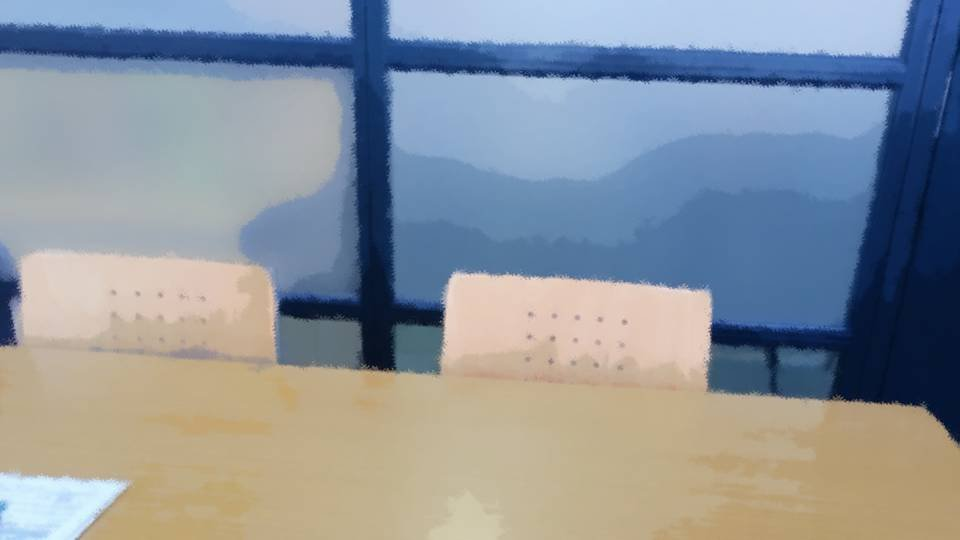
I expected to be shown to an interrogation room, but it's a space just divided off by partitions.
I'm in full view of everyone else.
I'm in full view of everyone else.
"Wait here."
Then Ise-san goes off somewhere right away.
I can sense people passing by outside the partitions, and if someone wanted to peek in here, they could peek right in.
I feel even less at ease here than at the police station in Minakami City...
Then Ise-san goes off somewhere right away.
I can sense people passing by outside the partitions, and if someone wanted to peek in here, they could peek right in.
I feel even less at ease here than at the police station in Minakami City...
Just then, a woman who seemed to be a clerk came over to me.
"Here you are."
she said, and set out some tea for me.
They're even giving me something to drink. What's that about?
"Here you are."
she said, and set out some tea for me.
They're even giving me something to drink. What's that about?
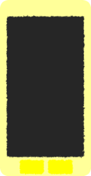
"Sorry for the wait. I'm lending this to you."
What he hands me is an old-model smartphone.
I can't quite see the point.
What he hands me is an old-model smartphone.
I can't quite see the point.
"All right, that's all we need to do here.
I'm calling it a day too, so you head out as well."
"Um, what does this mean..."
"It's a smartphone I used to use. It can still make calls, so use it to keep in touch with your parents."
"I can leave here already?"
"Um, what does this mean..."
"It's a smartphone I used to use. It can still make calls, so use it to keep in touch with your parents."
"I can leave here already?"
"Yeah. Your parents asked me to look after you, didn't they?
Since your parents have given permission, you're no longer a runaway girl, just a traveler.
There's no problem at all with me looking after you personally."
At those words, my face lights up like a flower blooming.
At those words, my face lights up like a flower blooming.
"Thank you, Ise-san! I'll do my best not to cause you any trouble!"
"Don't be so loud... Hurry up and use that phone to contact your parents. Otherwise they'll end up calling mine..."
"Okay!"
I rushed out of the police station, overjoyed.
"Don't be so loud... Hurry up and use that phone to contact your parents. Otherwise they'll end up calling mine..."
"Okay!"
I rushed out of the police station, overjoyed.
Now then, first I'll call Daddy.
"Hello, Daddy?"
"Kana! Are you safe!?"
"I told you, I'm with the police, so I'm fine... Just to make sure, it's okay for a police officer to look after me 'personally,' right?"
Ise-san was concerned about the child abduction issue, so I'm checking just to be safe.
"Hello, Daddy?"
"Kana! Are you safe!?"
"I told you, I'm with the police, so I'm fine... Just to make sure, it's okay for a police officer to look after me 'personally,' right?"
Ise-san was concerned about the child abduction issue, so I'm checking just to be safe.
"Well, if it's the police, that's reassuring...
But really, make sure you don't become a burden, okay?"
"I know, I know! And also..."
At this point, I think back to the Motoki-cho case.
Did Auntie really commit the flaying case, take Haruka-chan away, and come to the Arata settlement?
If I'm going to find out, it's now or never.
"I know, I know! And also..."
At this point, I think back to the Motoki-cho case.
Did Auntie really commit the flaying case, take Haruka-chan away, and come to the Arata settlement?
If I'm going to find out, it's now or never.
"Hey, Daddy. Why did Auntie and Haruka-chan come to the Arata settlement?"
"I explained that before, didn't I? We wanted more hands in the Arata settlement too, so Daddy asked them."
"I explained that before, didn't I? We wanted more hands in the Arata settlement too, so Daddy asked them."
"That's... a lie, isn't it?
It's weird, with both of them in the mountain seclusion for years.
And the police officer who's looking after me is from Motoki-cho."
"Motoki-cho!?"
Daddy reacts strongly at the name Motoki-cho.
"Motoki-cho!?"
Daddy reacts strongly at the name Motoki-cho.
"Hey, did Auntie... kill someone?"
"You don't need to know that."
"Then it's okay if I tell the police about it?"
"Hey, Kana!"
"That police officer has been working hard all along to protect the peace of Motoki-cho. So he's worried that if the culprit isn't caught, the peace of Motoki-cho will be destroyed. So if it's to help him, I'd..."
"You don't need to know that."
"Then it's okay if I tell the police about it?"
"Hey, Kana!"
"That police officer has been working hard all along to protect the peace of Motoki-cho. So he's worried that if the culprit isn't caught, the peace of Motoki-cho will be destroyed. So if it's to help him, I'd..."
Of course, this is a threat to get the truth out of him.
Even if Auntie is the culprit, I have no intention of telling Ise-san.
But left like this, it'll leave a knot in my heart.
That's the only reason.
Even if Auntie is the culprit, I have no intention of telling Ise-san.
But left like this, it'll leave a knot in my heart.
That's the only reason.
"Kana... if that were so, Daddy and Mommy would be arrested for harboring a criminal.
Are you okay with that?"
Daddy has headed me off.
I don't want Daddy or Mommy to be arrested.
Daddy has headed me off.
I don't want Daddy or Mommy to be arrested.
"Come on... I'm grown up now too.
You can tell me the truth, can't you? I won't tell the police..."
When I say that, I hear a big sigh from the other end of the line.
Daddy seems to be thinking hard.
When I say that, I hear a big sigh from the other end of the line.
Daddy seems to be thinking hard.
"Kana, I'll tell you that once you've come back to the settlement.
If you want to know, make up your mind and come back soon. Got it?"
Daddy is very good at this kind of bargaining.
He uses the information I want as bait to get me to come back to the settlement, and keeps the truth hidden for now on top of it.
I can tell from the mood that it's clearly suspicious, but...
Daddy is very good at this kind of bargaining.
He uses the information I want as bait to get me to come back to the settlement, and keeps the truth hidden for now on top of it.
I can tell from the mood that it's clearly suspicious, but...
"Okay... I won't go telling the police about what I'm wondering now.
But...
but when I come back, can you get Haruka-chan to come to Motoki-cho?
I hear there are still people waiting for Haruka-chan to come back safely."
Not to be outdone, I try some bargaining of my own.
To repay Ise-san, who's taking the trouble to look after me, even a little.
Not to be outdone, I try some bargaining of my own.
To repay Ise-san, who's taking the trouble to look after me, even a little.
"I'd have to ask Mifuyu-chan about that. I can't really say..."
"Yeah, okay... I'll call again."
"Hey, Kana."
"Hm?"
"You should have precognition like Mommy's. Probably, anywhere there are cherry trees, you can foresee danger wherever you are. Use it and stay safe, you hear?"
"Yeah, okay... I'll call again."
"Hey, Kana."
"Hm?"
"You should have precognition like Mommy's. Probably, anywhere there are cherry trees, you can foresee danger wherever you are. Use it and stay safe, you hear?"
"Me, with a power like that...?
I've never felt any danger yet, though..."
"If that's the case, that's fine. Being with the police is reassuring, but look out for yourself, okay?"
"I know, I know! I'm strong!"
"............"
Even hearing me act tough, Daddy still seems worried.
When a daughter my age runs away from home, of course he's going to worry.
"If that's the case, that's fine. Being with the police is reassuring, but look out for yourself, okay?"
"I know, I know! I'm strong!"
"............"
Even hearing me act tough, Daddy still seems worried.
When a daughter my age runs away from home, of course he's going to worry.
"Hey, Daddy. I love you and Mommy both.
So once I'm back and my eyes are cured, let's all live happily together again."
"Yeah..."
"But wait just a little longer for me. I need just a little more time to prepare myself."
"All right... Daddy and Mommy both love you, you know."
"Yeah..."
"But wait just a little longer for me. I need just a little more time to prepare myself."
"All right... Daddy and Mommy both love you, you know."
We wrapped up with that exchange and ended the call.
Two things bother me about that call.
That Auntie really does seem suspicious.
And the other, the danger sense.
Two things bother me about that call.
That Auntie really does seem suspicious.
And the other, the danger sense.
"Sorry for the wait."
Ise-san comes out of the police station.
A slightly troubled expression, and a firm, set face.
Is he not nervous around me anymore?
There's no sign of that fidgety manner.
Ise-san comes out of the police station.
A slightly troubled expression, and a firm, set face.
Is he not nervous around me anymore?
There's no sign of that fidgety manner.
"What's wrong? You look glum. Did you get scolded?"
"No! I'm fine now! Also, I made sure to get permission for you to look after me from Daddy!"
I give Ise-san the biggest smile I can.
And Ise-san, who'd been looking troubled, twists the corners of his mouth just a little and shows his teeth.
"No! I'm fine now! Also, I made sure to get permission for you to look after me from Daddy!"
I give Ise-san the biggest smile I can.
And Ise-san, who'd been looking troubled, twists the corners of his mouth just a little and shows his teeth.
"I see. Well, that's a relief, then!"
Ise-san isn't smiling with all he's got, but it's the best smile I've seen from him all day.
He really is... pretty much my type.
Ise-san isn't smiling with all he's got, but it's the best smile I've seen from him all day.
He really is... pretty much my type.
"Hehe, you look coolest with that face, Ise-san!"
"All right, all right... quit teasing me already."
Even when I needle him, he doesn't get flustered anymore.
Could it be I've been dropped from his targets entirely...?
A bit of a letdown. I wasn't joking, you know...
"All right, all right... quit teasing me already."
Even when I needle him, he doesn't get flustered anymore.
Could it be I've been dropped from his targets entirely...?
A bit of a letdown. I wasn't joking, you know...
"Now then, we're heading to dinner. Is a family restaurant all right?"
"Yes, that's fine! Um... this time I'll pay."
"Why would I let a middle schooler treat me... At times like this, just let yourself be looked after."
"Are you suuure? If you spend money at a time like this, doesn't that count as buying sex?"
"Yes, that's fine! Um... this time I'll pay."
"Why would I let a middle schooler treat me... At times like this, just let yourself be looked after."
"Are you suuure? If you spend money at a time like this, doesn't that count as buying sex?"
"D-don't be stupid! Your parents have given permission, so it's fine!
Besides, unless cash changes hands, it's not buying sex!"
"But being treated all the time is a little stifling..."
"I see... You were raised by really fine parents."
"Yes! I love Daddy and Mommy!"
"But being treated all the time is a little stifling..."
"I see... You were raised by really fine parents."
"Yes! I love Daddy and Mommy!"
"Then you should just hurry home...
Well, there's a reason you can't do that. A reason with your parents' approval."
"Once I'm ready inside, I'll go home. Daddy and I talked about that just now too."
"Well, let's talk over dinner. Come on, let's go."
"Once I'm ready inside, I'll go home. Daddy and I talked about that just now too."
"Well, let's talk over dinner. Come on, let's go."

Lots of cars are parked in the family restaurant's parking lot.
A stylish exterior and a lively atmosphere.
It's a place a country girl like me isn't used to.
A stylish exterior and a lively atmosphere.
It's a place a country girl like me isn't used to.

"Wow... so many people...!"
"This is it being on the empty side. When it's crowded, you have to wait a good 30 minutes."
Prompted by the waitress, we sit down at an empty corner table.
Motoki-cho isn't as big a town as Minakami City, but even this restaurant has such a big-city air that I can't settle down.
"This is it being on the empty side. When it's crowded, you have to wait a good 30 minutes."
Prompted by the waitress, we sit down at an empty corner table.
Motoki-cho isn't as big a town as Minakami City, but even this restaurant has such a big-city air that I can't settle down.
"Just so you know, people I know come here pretty often.
If you run into one of them, use a false name, to be safe."
"A false name?"
"She's been searching all this time for the child of the suspect in the Motoki-cho case. If it got out that your surname is 'Niimura,' it'd be a hassle, wouldn't it?"
"A false name?"
"She's been searching all this time for the child of the suspect in the Motoki-cho case. If it got out that your surname is 'Niimura,' it'd be a hassle, wouldn't it?"
"That's... true.
But is that all right? Ise-san, you want to know about the case too, don't you?"
"For now, that matter can wait until your running away is settled."
I'm in the middle of a great conflict over whether I should tell him this.
Ise-san is probably torn the same way, over whether to draw it out of me.
"For now, that matter can wait until your running away is settled."
I'm in the middle of a great conflict over whether I should tell him this.
Ise-san is probably torn the same way, over whether to draw it out of me.
Ise-san is chasing the culprit while being considerate of me, but at the same time he must think there's a connection between me and Auntie.
But for now, he isn't trying to push in any further than this.
For now, that is.
But for now, he isn't trying to push in any further than this.
For now, that is.
"Uh, could you tell me about the people who are looking for the culprit's child?"
"Let's see... I may as well have you hear it too. Ah, but before that, let's order. Here."
Ise-san hands me the menu.
It's a colorful, very stylish menu.
"Let's see... I may as well have you hear it too. Ah, but before that, let's order. Here."
Ise-san hands me the menu.
It's a colorful, very stylish menu.
Normally I eat at Arata or have school lunch, so I'm not really used to things like this.
Steak... pizza... spaghetti...
Russian-roulette takoyaki?
The color's pretty, but it seems to be some kind of punishment game, so I don't need this one.
Steak... pizza... spaghetti...
Russian-roulette takoyaki?
The color's pretty, but it seems to be some kind of punishment game, so I don't need this one.
For now, I'll play it safe and just pick something from the spaghetti.
Um... peperoncino...?
An oily, simple spaghetti with garlic and chili...
Well, I guess this'll do.
Um... peperoncino...?
An oily, simple spaghetti with garlic and chili...
Well, I guess this'll do.

I order this so-called peperoncino, order the mysterious system called a drink bar too, and take my seat again.
"Now then... it was about the suspect's child and the friends looking for that child, wasn't it?"
Ise-san's expression grows more serious, and the air freezes at this table alone.
The voices of the other lively tables drift farther and farther away.
Ise-san's expression grows more serious, and the air freezes at this table alone.
The voices of the other lively tables drift farther and farther away.
"The child the suspect took away is Haruka Niimura-san. She'd be 21 now, if she's alive."
I knew it! The name and the age match exactly.
But what does he mean, took her away?
A mother taking away her own daughter...
I knew it! The name and the age match exactly.
But what does he mean, took her away?
A mother taking away her own daughter...
"And the suspect is Mifuyu Niimura, Haruka-san's mother.
Though I say mother, they're parent and child by adoption, with no blood tie."
"Adopted!?"
I reacted to that word way too openly.
But Ise-san doesn't seem to take any notice of it.
To think those two weren't really mother and daughter...
"Adopted!?"
I reacted to that word way too openly.
But Ise-san doesn't seem to take any notice of it.
To think those two weren't really mother and daughter...
"Haruka Niimura-san's real parents are the man killed in the Motoki-cho case,
and his wife, who was arrested and is now serving time.
Haruka-san is being looked for by her real younger sister and her friend―
or rather than a friend, I guess she'd count as a junior from school."
"W-wait a moment, sorry... There's so much packed into this information, and sorting it out..."
"Ah, sorry. Shall I explain a little more carefully?"
"W-wait a moment, sorry... There's so much packed into this information, and sorting it out..."
"Ah, sorry. Shall I explain a little more carefully?"
―The one killed in the Motoki-cho case was
Haruka-chan's real father, Ryoji Kogori-san.
And her real mother is Akane Kogori-san.
The reason Akane-san was arrested, apparently, is that she was the one who actually carried out that Megasawa City case.
Haruka-chan's real parents had been negotiating with Auntie, who was blackmailing the Kogori family, to get Haruka-chan back, but things got tangled, and her father was killed.
And her real mother is Akane Kogori-san.
The reason Akane-san was arrested, apparently, is that she was the one who actually carried out that Megasawa City case.
Haruka-chan's real parents had been negotiating with Auntie, who was blackmailing the Kogori family, to get Haruka-chan back, but things got tangled, and her father was killed.


And Haruka-chan's younger sister, Natsumi Kogori-san.
She lives at her grandparents' house now, a little way from here, apparently.
Natsumi-san's junior, Erina Goto-san, was very close to Haruka-chan, it seems, and she's apparently still tracking her down even now, together with Natsumi-san.
She lives at her grandparents' house now, a little way from here, apparently.
Natsumi-san's junior, Erina Goto-san, was very close to Haruka-chan, it seems, and she's apparently still tracking her down even now, together with Natsumi-san.
Goto-san sometimes comes to Ise-san too, to exchange information and talk things over, or so I hear.
Goto-san is apparently sharp enough to exchange information with the police, but even so, she still hasn't managed to reach Auntie.
Goto-san is apparently sharp enough to exchange information with the police, but even so, she still hasn't managed to reach Auntie.
"Well, that's about it for the people involved. Does anything come to mind?"
"............"
Not a word comes out of me.
It's not that I can't say it; the facts about the people involved are so far from what I know that I'm shaken.
"............"
Not a word comes out of me.
It's not that I can't say it; the facts about the people involved are so far from what I know that I'm shaken.


That cheerful Auntie was the mastermind of the Megasawa City case, and on top of that she killed Ryoji Kogori-san, who had helped her, by flaying, a method cruel beyond measure, and then fled to the Arata settlement with Haruka-chan.
Even a country girl like me can tell that makes her a violent criminal of a kind rarely seen in history.
And what's more, Daddy and Mommy are covering for her.
Even a country girl like me can tell that makes her a violent criminal of a kind rarely seen in history.
And what's more, Daddy and Mommy are covering for her.
Why would Daddy and Mommy―no, why would the Arata settlement hide Auntie?
There seems to be some deeper reason, more than just the slogan of one for all, all for one, but...
Daddy probably wouldn't answer even if I asked him.
There seems to be some deeper reason, more than just the slogan of one for all, all for one, but...
Daddy probably wouldn't answer even if I asked him.
"Well? If it's hard to talk about, it can wait till later, all right?"
"No, I really don't think it has anything to do with me, so..."
"I see..."
Ise-san must have figured out that I'm involved.
Otherwise, there's no way he'd tell me all this in such detail when I'm unrelated.
"No, I really don't think it has anything to do with me, so..."
"I see..."
Ise-san must have figured out that I'm involved.
Otherwise, there's no way he'd tell me all this in such detail when I'm unrelated.
"If I knew something...
and kept quiet about it, what would you do?"
This is a hint that I've realized 'Ise-san has realized I'm involved.'
Right now, a delicate game of bargaining is going on between Ise-san and me.
This is a hint that I've realized 'Ise-san has realized I'm involved.'
Right now, a delicate game of bargaining is going on between Ise-san and me.
"Even if you keep quiet, you're not the type who can keep quiet forever, are you?
You―once you're home, you probably won't be able to deal with the people around you the way you always have."
"Yes, I suppose..."
I've heard the suspect's name outright.
Knowing that, to deal with Daddy and Mommy the way I always have...
"Yes, I suppose..."
I've heard the suspect's name outright.
Knowing that, to deal with Daddy and Mommy the way I always have...
Huh!? Wait a second...!
Doesn't that mean I lose the place I've belonged until now?
My heart will drift more than a little away from Daddy and Mommy―no, from the settlement itself, and then I'll lose my place to belong.
I remember the words Ise-san said, 'kids who go astray do it because they have no place to belong.'
Doesn't that mean I lose the place I've belonged until now?
My heart will drift more than a little away from Daddy and Mommy―no, from the settlement itself, and then I'll lose my place to belong.
I remember the words Ise-san said, 'kids who go astray do it because they have no place to belong.'
Was my choice a mistake?
If I hadn't run away from facing Mommy and had stayed in the settlement, I'd never have learned anything like this.
I could have lifted the curse on my eyes without knowing, and gone back to the life I had until yesterday.
I could have gotten by without knowing the things better left unknown...
If I hadn't run away from facing Mommy and had stayed in the settlement, I'd never have learned anything like this.
I could have lifted the curse on my eyes without knowing, and gone back to the life I had until yesterday.
I could have gotten by without knowing the things better left unknown...
"That's why I...
You―I know the risk in drawing the story out of you, too.
You―the more you know, the more you lose your place to belong.
That's not the kind of investigation I want."
"Then...! Then why did you tell me the culprit's name!?"
"Then...! Then why did you tell me the culprit's name!?"
Honestly, I'm just taking it out on him.
Knowing that risk, Ise-san deliberately gave me information that shakes my place to belong.
Even though I'm the one who asked him to tell me...
Knowing that risk, Ise-san deliberately gave me information that shakes my place to belong.
Even though I'm the one who asked him to tell me...
"You've already realized, haven't you?
If you had nothing to do with it, hearing a story like this wouldn't mean anything to you.
But if you're involved, then even if you go home, in the end you'll be feeling, 'Isn't that person the culprit?'"
Ise-san is probably right.
Even if I hadn't heard the culprit's name, I was already suspicious of Auntie.
Ise-san is probably right.
Even if I hadn't heard the culprit's name, I was already suspicious of Auntie.
At last I understand why Ise-san is telling me all this.
Ise-san isn't trying to gather information from me.
He's doing what he can not to break my place to belong, which is already breaking.
He's telling me to face my place to belong knowing the truth, instead of going home with eyes full of suspicion.
Ise-san isn't trying to gather information from me.
He's doing what he can not to break my place to belong, which is already breaking.
He's telling me to face my place to belong knowing the truth, instead of going home with eyes full of suspicion.
My real name, which I revealed to Ise-san on the way to Motoki-cho, and the surname 'Niimura' that it leads to―
At that point, even Ise-san probably didn't think the story would connect this far.
But it's gradually closing in on the truth, and now even I'm no longer unrelated.
Because right now the one closest to the truth is me, and the one being driven furthest into a corner is also me.
At that point, even Ise-san probably didn't think the story would connect this far.
But it's gradually closing in on the truth, and now even I'm no longer unrelated.
Because right now the one closest to the truth is me, and the one being driven furthest into a corner is also me.
"Ise-san...
Ise-san, I'm grateful for your kindness."
"Wh... what are you saying... I have no idea what you're talking about..."
Ise-san makes a slightly embarrassed gesture.
"Wh... what are you saying... I have no idea what you're talking about..."
Ise-san makes a slightly embarrassed gesture.
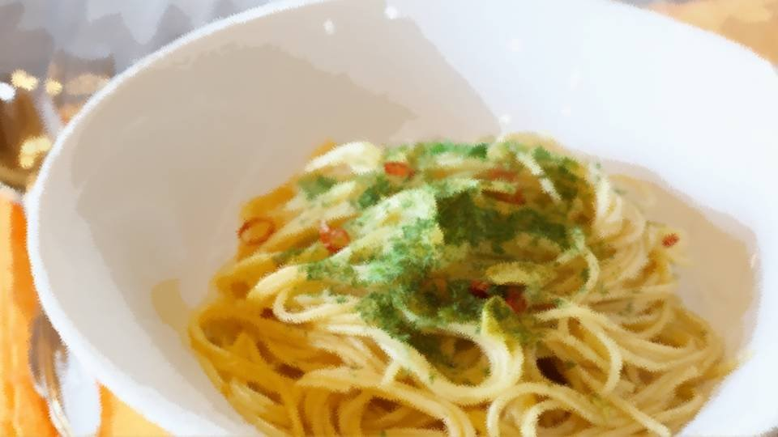
"Sorry to keep you waiting."
The waitress brought over the food we'd ordered.
"Well, that's enough grim talk for now. It'll spoil the meal."
The waitress brought over the food we'd ordered.
"Well, that's enough grim talk for now. It'll spoil the meal."
But the taste of this so-called peperoncino, which I'm eating for the first time, is already lost on me.
I understand that in my usual state of mind, it would surely taste delicious.
But... what should I do from here on?
If I could cure the curse on my eyes right now and make it all as if it never happened, I'd face Mommy this very minute.
I understand that in my usual state of mind, it would surely taste delicious.
But... what should I do from here on?
If I could cure the curse on my eyes right now and make it all as if it never happened, I'd face Mommy this very minute.
But it's not on that level anymore.
Auntie is a vicious murderer, and the Arata settlement is concealing it.
For a place like that to be my place to belong...
Auntie is a vicious murderer, and the Arata settlement is concealing it.
For a place like that to be my place to belong...
At first I thought it was my duty to keep it hidden the same way.
But is that really all right?
Is that really justice?
But is that really all right?
Is that really justice?

"Well, well? Isn't that Ise-san?"
And the one who's appeared is a very cute woman, petite and childlike in looks.
This person... I've seen her somewhere...
And the one who's appeared is a very cute woman, petite and childlike in looks.
This person... I've seen her somewhere...
"Ah, Goto-chan. What a coincidence. Are you here with someone?"
"No, I'm meeting someone here today! Sis is coming a little later."
With that, the woman called Goto-chan turns her eyes toward me.
"No, I'm meeting someone here today! Sis is coming a little later."
With that, the woman called Goto-chan turns her eyes toward me.

"Well, well, well? Ise-san! You finally laid a hand on another girl?"
"D-don't be stupid! This girl is, er... a distant relative of mine! Right? Right?"
He sends me the same look begging for agreement that he gave me at that soba shop.
"D-don't be stupid! This girl is, er... a distant relative of mine! Right? Right?"
He sends me the same look begging for agreement that he gave me at that soba shop.
"Ah, yes! My name's Akina Furumura!
I'm staying at Dai-chan's place today!"
"Ohh? I see, I see! I'm Erina Goto! Honestly, Ise-san, just because I turn 20 this year, taking such a young little pretty girl out to dinner..."
"You and I don't have that kind of relationship!"
"Ohh? I see, I see! I'm Erina Goto! Honestly, Ise-san, just because I turn 20 this year, taking such a young little pretty girl out to dinner..."
"You and I don't have that kind of relationship!"
So Goto-san turns 20 this year. She looks even younger than her real age.
But it seems Goto-san is trying to pin down Haruka-chan's whereabouts.
I can't afford a careless conversation.
But it seems Goto-san is trying to pin down Haruka-chan's whereabouts.
I can't afford a careless conversation.

"Hey, hey, Akina-chan, where are you from?"
Goto-san flashes a big grin and talks to me over-familiarly.
"Hey, Goto-chan, leave it... She has been through a lot, and she's heartbroken right now."
"Whoops, my mistake..."
Goto-san quickly pulls back from where she'd started to lean in.
Goto-san flashes a big grin and talks to me over-familiarly.
"Hey, Goto-chan, leave it... She has been through a lot, and she's heartbroken right now."
"Whoops, my mistake..."
Goto-san quickly pulls back from where she'd started to lean in.
But even after that, she keeps staring at me with great interest.
Looking the way I do, I get looked at like this all the time.
I'm used to it by now.
Looking the way I do, I get looked at like this all the time.
I'm used to it by now.
"Oh, Akina-chan, you ordered the peperoncino! It's cheap and tasty, right!"
Now she turns her eyes to my food.
Unfortunately, the way I feel, I can't really taste it.
This person... is a little dangerous...?
Now she turns her eyes to my food.
Unfortunately, the way I feel, I can't really taste it.
This person... is a little dangerous...?
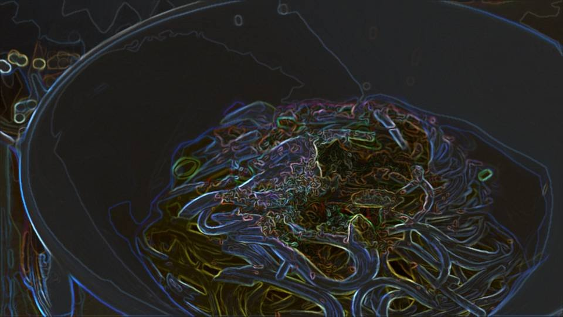
That moment, a sensation I've never felt before comes over me.
For an instant time stops, and instinctively I feel a violent discomfort at being here.
Then my sweat glands begin to open, trying to break out in a cold sweat.
This situation... is dangerous...!
For an instant time stops, and instinctively I feel a violent discomfort at being here.
Then my sweat glands begin to open, trying to break out in a cold sweat.
This situation... is dangerous...!
Is this the danger sense Daddy was talking about?
If so, then danger from what, exactly...?
The question crosses my mind, but what it really is becomes clear right away.
Erina Goto, right in front of me.
This person is my threat.
If so, then danger from what, exactly...?
The question crosses my mind, but what it really is becomes clear right away.
Erina Goto, right in front of me.
This person is my threat.
"Sorry! I'm just going to the restroom!"
Not just because I think it's dangerous, but flustered by this first-ever sensation too, I get up from my seat.
Not just because I think it's dangerous, but flustered by this first-ever sensation too, I get up from my seat.
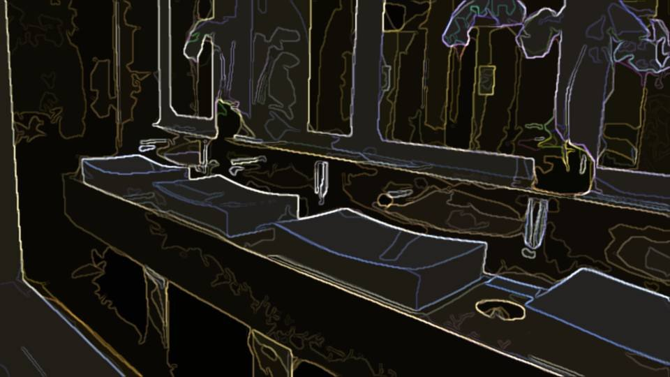
"Haah...! Haah...!"
I gasp for breath in a restroom stall.
Then I wipe away the single drop of sweat that's run down my forehead.
So that just now was sensing danger... the intuition Mommy has too, only at this time of year.
I gasp for breath in a restroom stall.
Then I wipe away the single drop of sweat that's run down my forehead.
So that just now was sensing danger... the intuition Mommy has too, only at this time of year.
I have to be careful of that person.
Getting involved with that person is extremely dangerous.
She'll see through who I really am in no time and reach the Arata settlement.
And then Daddy and Mommy will be arrested― and I'll lose my place to belong.
My instinct warned me so.
Getting involved with that person is extremely dangerous.
She'll see through who I really am in no time and reach the Arata settlement.
And then Daddy and Mommy will be arrested― and I'll lose my place to belong.
My instinct warned me so.
Calm down. Calm down.
I can just slip away from here quietly.
Being with Ise-san means being with Erina Goto.
I can't have anything more to do with that person!
I can just slip away from here quietly.
Being with Ise-san means being with Erina Goto.
I can't have anything more to do with that person!
But my bag is in Ise-san's car.
There's a change of clothes in it, and two knives.
At worst, I could ditch the bag and run, but...
There's a change of clothes in it, and two knives.
At worst, I could ditch the bag and run, but...
Calm down, once more.
I sensed Erina Goto as dangerous because she'd probe me and try to get Auntie's and Haruka-chan's whereabouts out of me.
So I just need to keep my answers to the bare minimum.
If I'm about to give a bad answer, my danger sense should kick in again like just now.
I sensed Erina Goto as dangerous because she'd probe me and try to get Auntie's and Haruka-chan's whereabouts out of me.
So I just need to keep my answers to the bare minimum.
If I'm about to give a bad answer, my danger sense should kick in again like just now.

That's right―I have a weapon stronger than a knife: danger sense...!
With this, I shouldn't have to give any answers that give me away.
Okay... one more deep breath, and I'll go back to my seat.
Do not panic, no matter what.
Ise-san is on my side right now, too.
With this, I shouldn't have to give any answers that give me away.
Okay... one more deep breath, and I'll go back to my seat.
Do not panic, no matter what.
Ise-san is on my side right now, too.
When I get back to my seat, Ise-san and Goto-san are making small talk.
In front of Goto-san, only a glass from the drink bar.
It seems she doesn't plan to eat.
She said she was meeting her sister, so maybe she'll eat after they meet up.
In front of Goto-san, only a glass from the drink bar.
It seems she doesn't plan to eat.
She said she was meeting her sister, so maybe she'll eat after they meet up.
"You okay?"
"Hmm, a bit of a cold sweat there..."
"Yes, I'm fine..."
Half tuning out the worried words from the two of them, I sit down.
"Hmm, a bit of a cold sweat there..."
"Yes, I'm fine..."
Half tuning out the worried words from the two of them, I sit down.
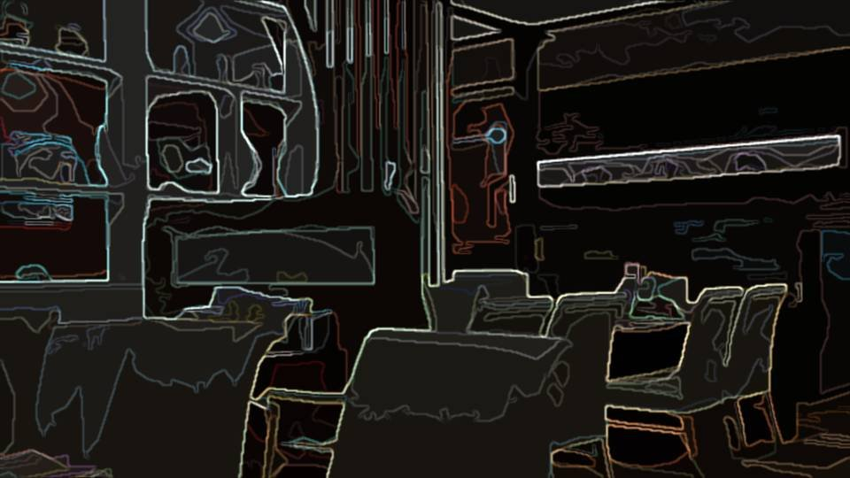
"Hey, hey, Niimura-san."
"Ye―"
The moment I started to say 'yes,' that alarm bell rings inside me again.
That question just now is very dangerous.
Goto-san called me 'Niimura-san.'
I never thought she'd ask me something like that out of nowhere, so naturally.
"Ye―"
The moment I started to say 'yes,' that alarm bell rings inside me again.
That question just now is very dangerous.
Goto-san called me 'Niimura-san.'
I never thought she'd ask me something like that out of nowhere, so naturally.
"Um, I'm Furumura, though..."
"Ah, my mistake again... Your surname's like someone I know, and it just slipped out..."
Goto-san's words feel a little too deliberate.
Ise-san eats his food, careful not to meet my eyes or Goto-san's.
This person is more dangerous than I imagined.
She'll keep shaking me with little turns of phrase like that.
"Ah, my mistake again... Your surname's like someone I know, and it just slipped out..."
Goto-san's words feel a little too deliberate.
Ise-san eats his food, careful not to meet my eyes or Goto-san's.
This person is more dangerous than I imagined.
She'll keep shaking me with little turns of phrase like that.
Huh? Wait a second...
Could that mean she thinks I'm suspicious?
Just from my alias, 'Furumura'?
No way... I'm overthinking it.
She really just mixed up Furumura and Niimura.
That must be it, I tell my instinct.
Could that mean she thinks I'm suspicious?
Just from my alias, 'Furumura'?
No way... I'm overthinking it.
She really just mixed up Furumura and Niimura.
That must be it, I tell my instinct.
"Hmm, heartbreak sure is rough. You do look a little pale, after all..."
"Which is why, Goto-chan, don't go bringing up anything weird, all right?"
"I know, okay! Ugh, isn't Sis here yet...?"
"Do you have some business with Momoko-san?"
"No, we're just having dinner together."
"Which is why, Goto-chan, don't go bringing up anything weird, all right?"
"I know, okay! Ugh, isn't Sis here yet...?"
"Do you have some business with Momoko-san?"
"No, we're just having dinner together."
So Goto-san and her sister get along.
I get along with Sis too, so in that respect I warm to Goto-san just a little.
If I didn't have a secret like this, I could have thought Goto-san was a nice person too...
I get along with Sis too, so in that respect I warm to Goto-san just a little.
If I didn't have a secret like this, I could have thought Goto-san was a nice person too...
"By the way, how's Kogori-san doing?"
"Kogori-senpai seems to be doing fine, more or less. Though she says she's taking a break from university and staying away from Motoki-cho until the cherry blossoms fall. I don't think she'll be coming around here for a while."
"I see... Kogori-san's constitution is a real nuisance too."
"Kogori-senpai seems to be doing fine, more or less. Though she says she's taking a break from university and staying away from Motoki-cho until the cherry blossoms fall. I don't think she'll be coming around here for a while."
"I see... Kogori-san's constitution is a real nuisance too."
Kogori-san's constitution...?
As I recall, Kogori-san means Ryoji-san, the victim of the Motoki-cho case, and his wife, Akane-san.
If she's a university student, it must mean their daughter, Haruka-chan's real younger sister.
Part of me would like to meet her, but here I'll talk as little as I can.
Especially in front of Goto-san.
As I recall, Kogori-san means Ryoji-san, the victim of the Motoki-cho case, and his wife, Akane-san.
If she's a university student, it must mean their daughter, Haruka-chan's real younger sister.
Part of me would like to meet her, but here I'll talk as little as I can.
Especially in front of Goto-san.
"Oh, but it sounds like she's coming to Motoki-cho tonight!
Today was actually the anniversary of her dad's death, but it seems she couldn't quite make it work.
She gets to Motoki Station before 9 tonight, and she's staying over at my house!"
"I see, so Kogori-san is coming tonight."
I'd like to meet Kogori-san after all, just a little...
Being Haruka-chan's real younger sister, she'd be a relative of mine too, even without a blood tie.
"I see, so Kogori-san is coming tonight."
I'd like to meet Kogori-san after all, just a little...
Being Haruka-chan's real younger sister, she'd be a relative of mine too, even without a blood tie.
But I'd rather have as little to do with Goto-san as possible, so maybe I'll pass this time.
Or rather, shouldn't I just finish eating quickly, signal Ise-san with a look, and part ways with Goto-san soon?
I twirl more of the slightly cooled peperoncino around my fork than my usual mouthful.
Or rather, shouldn't I just finish eating quickly, signal Ise-san with a look, and part ways with Goto-san soon?
I twirl more of the slightly cooled peperoncino around my fork than my usual mouthful.
No way... why...!?
Just taking more noodles is dangerous!?
Does this... also end up getting Goto-san's suspicion stoked?
This person... what on earth is she...
Just taking more noodles is dangerous!?
Does this... also end up getting Goto-san's suspicion stoked?
This person... what on earth is she...
When I let a little of the noodles drop off my fork, that intuition stops.
Again, a little cold sweat trickles down.
Just showing signs of wanting to leave quickly, and this person gets suspicious...
Geez, I can't even eat a meal properly...!
Again, a little cold sweat trickles down.
Just showing signs of wanting to leave quickly, and this person gets suspicious...
Geez, I can't even eat a meal properly...!
"Akina-chan, are you okay? You're still sweating."
"Ah, yes, this is―"
Hold on, you're kidding!? Why is THIS dangerous!
All I was going to say was 'the peperoncino's a bit spicy, so I'm sweating'...!
"Ah, yes, this is―"
Hold on, you're kidding!? Why is THIS dangerous!
All I was going to say was 'the peperoncino's a bit spicy, so I'm sweating'...!
My instinct tells me―
After I answer that, what Goto-san will say is,
"You can't handle spice enough to sweat, and you ordered peperoncino?"
"Is this maybe your first time eating peperoncino?"
"Could it be that you, Akina-chan, live somewhere out in the country, with no places like this?"
"And that country would be, maybe..."
No good! I have to think of a different way to put it, fast...!
After I answer that, what Goto-san will say is,
"You can't handle spice enough to sweat, and you ordered peperoncino?"
"Is this maybe your first time eating peperoncino?"
"Could it be that you, Akina-chan, live somewhere out in the country, with no places like this?"
"And that country would be, maybe..."
No good! I have to think of a different way to put it, fast...!
"I like spicy food and eat it a lot, but I just sweat easily..."
"Ah, I see. Girls your age have a fast metabolism, Akina-chan!"
Goto-san flashes me a big grin again.
Talking with this person is truly exhausting...
Goto-san is the type I could never get along with, no matter how we met.
"Ah, I see. Girls your age have a fast metabolism, Akina-chan!"
Goto-san flashes me a big grin again.
Talking with this person is truly exhausting...
Goto-san is the type I could never get along with, no matter how we met.
"But Ise-san, today's a good day, isn't it!"
"Hm?"
"Having girls like me and Akina-chan at your side over dinner! A lolicon's dream come true!"
"Cough, cough...! I'm not a lolicon, I'm...!"
"A devotee of pretty girls, was it?"
"Wai...!"
"Hm?"
"Having girls like me and Akina-chan at your side over dinner! A lolicon's dream come true!"
"Cough, cough...! I'm not a lolicon, I'm...!"
"A devotee of pretty girls, was it?"
"Wai...!"
"Oh, my mistake again...
Akina-chan hearing me say something like that would wreck Ise-san's reputation, wouldn't it?"
"It's already too late..."
"Ahaha, sorry... But Akina-chan, you don't look that surprised. Did you already know, maybe?"
Why drag me into it...!
"It's already too late..."
"Ahaha, sorry... But Akina-chan, you don't look that surprised. Did you already know, maybe?"
Why drag me into it...!
"Ah, um..."
I stall on my answer and act vague.
Anything but a hazy answer like this, and everything scares me.
Even with the conversation this lighthearted, I can't let my guard down for a second.
I mustn't get swept along by where this topic is going.
I stall on my answer and act vague.
Anything but a hazy answer like this, and everything scares me.
Even with the conversation this lighthearted, I can't let my guard down for a second.
I mustn't get swept along by where this topic is going.
"Argh, come on! Drop that topic, drop it!
No more talk about my hobbies, and none about Akina either!"
False name or not, he called me by my name, just like that.
That makes me a little happy, but at the same time I can't stop worrying about how long Goto-san's cheerful onslaught will go on.
False name or not, he called me by my name, just like that.
That makes me a little happy, but at the same time I can't stop worrying about how long Goto-san's cheerful onslaught will go on.
"Oh! So you call her 'Akina,' huh."
"So what if I do! I told you she's a relative..."
"No, no! It's just the first time I've heard you call a girl by just her name, Ise-san! You two must be really close."
Oh, just shut up, you shrimp...!
"So what if I do! I told you she's a relative..."
"No, no! It's just the first time I've heard you call a girl by just her name, Ise-san! You two must be really close."
Oh, just shut up, you shrimp...!
"Oh, there you are. Erina, over here."
"Ah, Sis! Well then, Ise-san, Akina-chan, I'll be going nooow!"
Goto-san took her drink bar glass and hurried off with her sister.
"Ah, Sis! Well then, Ise-san, Akina-chan, I'll be going nooow!"
Goto-san took her drink bar glass and hurried off with her sister.
"Haah..."
I let out a big sigh and slump over the table.
I'm really exhausted... I never want to see Goto-san again.
I let out a big sigh and slump over the table.
I'm really exhausted... I never want to see Goto-san again.
"Hey, you all right? Did something happen?"
Right, Ise-san can't know why I'm so utterly exhausted.
The reason I'm this worn down is that I experienced danger sense for the first time, and it came at me again and again like a raging wave.
But even if I explained this to Ise-san, there's no way he'd understand.
Right, Ise-san can't know why I'm so utterly exhausted.
The reason I'm this worn down is that I experienced danger sense for the first time, and it came at me again and again like a raging wave.
But even if I explained this to Ise-san, there's no way he'd understand.
"No, it's just... Goto-san's eyes scared me..."
"Yeah, that girl, believe it or not, is frighteningly smart. Say one odd thing and she'll have you by the tail and your real identity exposed in no time."
"Ise-san... you're already talking, quite naturally, like you know what kind of person I am."
Still slumped over the table, I answer weakly.
"Yeah, that girl, believe it or not, is frighteningly smart. Say one odd thing and she'll have you by the tail and your real identity exposed in no time."
"Ise-san... you're already talking, quite naturally, like you know what kind of person I am."
Still slumped over the table, I answer weakly.
"Huh?
Ah, yeah...
So, just as I thought, you... the whereabouts of Mifuyu Niimura and Haruka-san..."
"I can't say right now..."
"I figured."
"So you're still not going to draw it out of me?"
"If I drew it out of you now, would you tell the truth?"
"I wouldn't."
"I can't say right now..."
"I figured."
"So you're still not going to draw it out of me?"
"If I drew it out of you now, would you tell the truth?"
"I wouldn't."
I'm still slumped over the table―
I'm just... tired.
Maybe I'll just go back to Arata like this.
Either way, it won't change the fact that my place to belong is in danger.
I'm just... tired.
Maybe I'll just go back to Arata like this.
Either way, it won't change the fact that my place to belong is in danger.
"Ise-san... I'll go home tomorrow.
It's like, this is no time to be scared anymore..."
"I see... well, that's for the best."
"If I go home, Ise-san, will you search the area where my house is?"
"Hmm... I suppose so. I'd rather the suspect turned herself in so I didn't have to."
"I see... well, that's for the best."
"If I go home, Ise-san, will you search the area where my house is?"
"Hmm... I suppose so. I'd rather the suspect turned herself in so I didn't have to."
Is he trying to get me to persuade Auntie to turn herself in?
If not, the police will come to the Arata settlement again...
This time they'll investigate on the assumption that Daddy and Mommy are hiding her too, and they won't miss anything.
No... but...
If not, the police will come to the Arata settlement again...
This time they'll investigate on the assumption that Daddy and Mommy are hiding her too, and they won't miss anything.
No... but...
"Um, if the police try to catch the culprit, won't she just get away again?
I mean, the culprit's been on the run for 4 years, right?"
"Right, that's my biggest worry. When they disappeared 4 years ago, too, they jumped off the roof of a five-story apartment building, and mother and daughter both vanished."
"From the fifth floor...!?"
"Right, that's my biggest worry. When they disappeared 4 years ago, too, they jumped off the roof of a five-story apartment building, and mother and daughter both vanished."
"From the fifth floor...!?"
Even I wouldn't come away unharmed from jumping off a fifth floor.
And yet Auntie jumped holding Haruka-chan...?
There's no way something like magic could...
And yet Auntie jumped holding Haruka-chan...?
There's no way something like magic could...
"How they managed to disappear like that is still a complete mystery, even now.
They vanished as if they'd been sucked smoothly into another dimension.
Well, when people vanish like that, even the police don't feel like investigating forever.
If I give up, this case is buried in the dark for good."
"So you mean you're the one leading that case now, Ise-san?"
"Well, nominally. Back then someone higher up was in command, but even so there were no results, and now it's just me, plodding along with the investigation. Well, rather than 'leading,' maybe 'stubbornness' is the better word. My men have pretty much given up, too."
"Well, nominally. Back then someone higher up was in command, but even so there were no results, and now it's just me, plodding along with the investigation. Well, rather than 'leading,' maybe 'stubbornness' is the better word. My men have pretty much given up, too."
............?
Huh?
At this moment, one idea comes to me.
The reason I'd lose my place to belong is that sooner or later the police will investigate the Arata settlement, and Daddy and Mommy might be arrested.
There's exactly one way to prevent that.
Huh?
At this moment, one idea comes to me.
The reason I'd lose my place to belong is that sooner or later the police will investigate the Arata settlement, and Daddy and Mommy might be arrested.
There's exactly one way to prevent that.
Ise-san, right in front of me, just has to stop investigating.
Then the police will never set foot in the Arata settlement, and I won't have to worry about my place to belong being torn up.
But by the looks of it, he won't give up that easily.
It seems that Goto-san is supporting Ise-san, and they're keeping the investigation going as a small elite team.
Then the police will never set foot in the Arata settlement, and I won't have to worry about my place to belong being torn up.
But by the looks of it, he won't give up that easily.
It seems that Goto-san is supporting Ise-san, and they're keeping the investigation going as a small elite team.
How can I get Ise-san to give up?
No, not only that, but I have to get Goto-san to give up too.
Not just Goto-san.
I need Natsumi Kogori, someone who isn't even here, to give up too.
I have to remove everything that motivates Ise-san.
No, not only that, but I have to get Goto-san to give up too.
Not just Goto-san.
I need Natsumi Kogori, someone who isn't even here, to give up too.
I have to remove everything that motivates Ise-san.
But I can't stay long in Motoki-cho either, and even taking the drive out of that Goto-san alone is probably beyond me.
I felt firsthand just now that even getting near Goto-san is dangerous.
I look at the profile of Goto-san, sitting at a table far away.
I felt firsthand just now that even getting near Goto-san is dangerous.
I look at the profile of Goto-san, sitting at a table far away.

Chatting happily with her sister, Goto-san.
At a glance she's a petite, cute woman with a lovely smile.
To me, that person is the greatest threat.
Ise-san keeps a certain distance, but Goto-san, I'm sure, will attack without restraint if it means solving the case.
At a glance she's a petite, cute woman with a lovely smile.
To me, that person is the greatest threat.
Ise-san keeps a certain distance, but Goto-san, I'm sure, will attack without restraint if it means solving the case.
Just then, Goto-san glances this way.
And she meets my eyes and smiles just a little.
I force the muscles of my half-stiffened face to move and make a smile.
And she meets my eyes and smiles just a little.
I force the muscles of my half-stiffened face to move and make a smile.
―!!
Danger sense, again.
This time it's no split-second flash of foresight.
No―in the real world only a few seconds can have passed, but what I saw in the world of foresight was...
Danger sense, again.
This time it's no split-second flash of foresight.
No―in the real world only a few seconds can have passed, but what I saw in the world of foresight was...


This is...
Goto-san's point of view?
I recognize this road.
It's the road that leads to the Arata settlement.
Beside me is a woman leaning forward, her eyes on the windshield.
And in the driver's seat, Ise-san.
It seems these three are in the car.
I recognize this road.
It's the road that leads to the Arata settlement.
Beside me is a woman leaning forward, her eyes on the windshield.
And in the driver's seat, Ise-san.
It seems these three are in the car.

This is―in front of my house.
Daddy and Mommy are there.
Daddy and Mommy―surrounded by a crowd of police officers.
Daddy's and Mommy's hands―in handcuffs.
Daddy and Mommy are there.
Daddy and Mommy―surrounded by a crowd of police officers.
Daddy's and Mommy's hands―in handcuffs.
"Penal Code Articles 103 to 105-2, 'harboring a criminal and destroying evidence,' then..."
This voice is Goto-san's voice―
So Daddy and Mommy really were hiding Auntie.
This voice is Goto-san's voice―
So Daddy and Mommy really were hiding Auntie.
"Goto, we'll find Haruka too, right?"
"Of course. They're searching the nearby mountains right now, with the Self-Defense Forces too, I hear."
It seems the time has finally come for Auntie and Haruka-chan to be found.
With this many people brought in, there's no way they can get away.
"Of course. They're searching the nearby mountains right now, with the Self-Defense Forces too, I hear."
It seems the time has finally come for Auntie and Haruka-chan to be found.
With this many people brought in, there's no way they can get away.
Auntie was found less than a day after that.
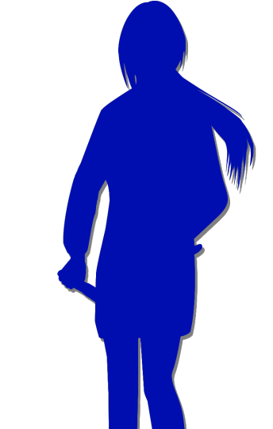
"All of you! Stay back! Don't come any closer!"
Haruka-chan stands in front of Auntie, pointing a knife at the police and the Self-Defense Forces.
Haruka-chan stands in front of Auntie, pointing a knife at the police and the Self-Defense Forces.
"Niimura-senpai! Why!?"
"Haruka... come home to Motoki-cho...!"
"What are you talking about...! You came to arrest Mom, didn't you!? Mom―there's no way I'm handing her over!"
"Haruka... come home to Motoki-cho...!"
"What are you talking about...! You came to arrest Mom, didn't you!? Mom―there's no way I'm handing her over!"
"Senpai, come home! There's no way you can get away!"
"Goto, I've changed since I came here. I could kill a soldier or a cop or two in an instant."
"Haruka! You can't!"
"That's why...! That's why, just go home...! Natsumi, I'm sorry, but I can't leave Mom alone."
"Goto, I've changed since I came here. I could kill a soldier or a cop or two in an instant."
"Haruka! You can't!"
"That's why...! That's why, just go home...! Natsumi, I'm sorry, but I can't leave Mom alone."
"But Mifuyu-san is the culprit of the Megasawa City case, and the one who killed Kogori-senpai's father, too.
Besides... do you know how Kogori-senpai's father and you, Niimura-senpai, are related?"
"We're blood relatives, right? So what. My parents are Eiichiro Niimura and Mom, right here. Way more than any blood tie, Mom is what matters to me."
"We're blood relatives, right? So what. My parents are Eiichiro Niimura and Mom, right here. Way more than any blood tie, Mom is what matters to me."
"That's why...
that's why go home! Mom kept protecting me even if it meant dirtying her own hands!
If it's to protect Mom, I'll get as bloody as it takes!"
"Haruka..."
"Senpai..."
"Haruka..."
"Senpai..."
"I intend to stay with Mom forever.
If you get in the way of that, I won't forgive you two either...!"
"Senpai... that's wrong..."
"I've been... all this time, to find you, Haruka..."
"Senpai... that's wrong..."
"I've been... all this time, to find you, Haruka..."
"Yeah, I know it's wrong, and I'm glad you came looking for me.
If you two had come alone, without dragging the police along, I could've welcomed you with all my heart...
But you know... you two could never kill someone to protect me, could you?
The only one who'd go that far is Mom.
For you two, keeping the law matters more than anything, doesn't it?"
"Senpai..."
Goto-san collapses, her strength gone.
Kogori-san collapses too, and begins to cry.
Is this... what's going to happen?
Is this the ending that waits at the end of the three of them chasing Auntie and Haruka-chan...?
Goto-san collapses, her strength gone.
Kogori-san collapses too, and begins to cry.
Is this... what's going to happen?
Is this the ending that waits at the end of the three of them chasing Auntie and Haruka-chan...?
And then I'm brought back to the real world.
It feels like I was immersed in the world of foresight for a long time, but Goto-san and I are still looking into each other's eyes.
In the real world, probably not even a second has passed.
It feels like I was immersed in the world of foresight for a long time, but Goto-san and I are still looking into each other's eyes.
In the real world, probably not even a second has passed.
"You okay? You've looked unwell for a while now."
"Ah, yes... I'm fine..."
As if I'd just remembered it, I put the rest of the completely cold peperoncino in my mouth.
In the end, I never could taste it, right to the last.
"Ah, yes... I'm fine..."
As if I'd just remembered it, I put the rest of the completely cold peperoncino in my mouth.
In the end, I never could taste it, right to the last.
If things go on like this, sooner or later Ise-san and the others will head to the Arata settlement, arrest Daddy and Mommy, and come face to face with Haruka-chan and Auntie.
What Goto-san and the others will see there is an ending far too merciless―
Haruka-chan won't forgive the ones who pushed for Auntie's arrest, not Goto-san and not Kogori-san.
What Goto-san and the others will see there is an ending far too merciless―
Haruka-chan won't forgive the ones who pushed for Auntie's arrest, not Goto-san and not Kogori-san.
I didn't see the world of foresight through to the end, but after that, Auntie will probably be arrested, and Haruka-chan subdued too.
Up against that many people, there's no way even Haruka-chan, made strong by the mountain seclusion, could handle them.
If things go badly, Haruka-chan will end up caught by the police too.
Up against that many people, there's no way even Haruka-chan, made strong by the mountain seclusion, could handle them.
If things go badly, Haruka-chan will end up caught by the police too.
I have to stop Ise-san and the others from reaching the Arata settlement.
It won't end with just Daddy and Mommy being arrested.
An ending like this―not one person gets to be happy...!
It won't end with just Daddy and Mommy being arrested.
An ending like this―not one person gets to be happy...!
In that case.
I have to take steps to avoid this wretched ending.
The only one who knows what ending is coming is me.
There's no one I can trust outside the Arata settlement.
Even Ise-san, if he learns that Auntie is in the Arata settlement, will surely go there eventually, however much he tries to smooth things over just for now.
I have to take steps to avoid this wretched ending.
The only one who knows what ending is coming is me.
There's no one I can trust outside the Arata settlement.
Even Ise-san, if he learns that Auntie is in the Arata settlement, will surely go there eventually, however much he tries to smooth things over just for now.
From here on I have to think of a way to persuade Ise-san, or Goto-san.
As long as Ise-san is in the position of a police officer, persuading him is out of the question.
Goto-san has that strong sense of justice and that fixation on Haruka-chan, and on top of that a mind I can't come close to.
If I try to persuade her, I might end up being talked around by Goto-san instead...
As long as Ise-san is in the position of a police officer, persuading him is out of the question.
Goto-san has that strong sense of justice and that fixation on Haruka-chan, and on top of that a mind I can't come close to.
If I try to persuade her, I might end up being talked around by Goto-san instead...
What I can do to protect Daddy and Mommy―
If persuasion is impossible, is force the only way?
I say force, but even if I could beat the two of them to a pulp, I couldn't make them do what I say.
No, if anything, I'd get picked up by the police and the situation would get worse.
If persuasion is impossible, is force the only way?
I say force, but even if I could beat the two of them to a pulp, I couldn't make them do what I say.
No, if anything, I'd get picked up by the police and the situation would get worse.


Come to think of it―
there were two knives in my bag.
Maybe I should throw away a naive idea like beating them to a pulp, here and now.
No, what am I thinking...!
That's not what I came here to do!
Think of another way...!
Maybe I should throw away a naive idea like beating them to a pulp, here and now.
No, what am I thinking...!
That's not what I came here to do!
Think of another way...!
Then what way is there?
You've thought of a sure method, and you're not going to use it?
I'm telling you, I must never, ever do that!
I mustn't even think about force...!
I... what am I thinking...?
You've thought of a sure method, and you're not going to use it?
I'm telling you, I must never, ever do that!
I mustn't even think about force...!
I... what am I thinking...?
Calm down. If my way is wrong, my precognition should tell me.
So... if that method is dangerous, I just have to stop at the last moment.
And if that method turns out to be certain... are you really going to do it?
Like I said... it's because I know from the start that the method's dangerous...!
So it's to make myself understand that...!
So... if that method is dangerous, I just have to stop at the last moment.
And if that method turns out to be certain... are you really going to do it?
Like I said... it's because I know from the start that the method's dangerous...!
So it's to make myself understand that...!
Right, what I'm thinking of now is―
to eliminate Erina Goto.
But that method, however certain, is far too risky.
So, to get rid of that option, I'll point a knife at Erina Goto.
If that's dangerous, my intuition will tell me to stop.
It's a contradiction, but to not kill Erina Goto, I'm going to try to kill Erina Goto.
But that method, however certain, is far too risky.
So, to get rid of that option, I'll point a knife at Erina Goto.
If that's dangerous, my intuition will tell me to stop.
It's a contradiction, but to not kill Erina Goto, I'm going to try to kill Erina Goto.
Ise-san is a grown police officer. In a scuffle, it's Erina Goto who has the openings, after all.
Besides, Ise-san seems to rely on Erina Goto's reasoning.
With that gone, even if they reach the Arata settlement eventually, it should hold them back quite a lot.
Besides, Ise-san seems to rely on Erina Goto's reasoning.
With that gone, even if they reach the Arata settlement eventually, it should hold them back quite a lot.
If I attack with a knife, I can probably eliminate her leaving almost no evidence.
I've hunted hundreds of beasts until now, so I know at least what I need to be careful about.
I've hunted hundreds of beasts until now, so I know at least what I need to be careful about.
But maybe if I don't make the method sloppy on purpose, I'll be the one who gets suspected instead.
For now, I'll make stab wounds all over her body, not deep enough to be fatal, and deliver the finishing blow at a suitable point.
Then I just have to make it look like a robbery or a rape.
Well, still, I'm sure there'll be nothing to make anyone suspicious.
My precognition should keep that in check for me.
For now, I'll make stab wounds all over her body, not deep enough to be fatal, and deliver the finishing blow at a suitable point.
Then I just have to make it look like a robbery or a rape.
Well, still, I'm sure there'll be nothing to make anyone suspicious.
My precognition should keep that in check for me.
But then there's no value in trying such a thing in the first place.
Somewhere in my heart, I'm surely hoping.
That my intuition will hold back my murder, and at the same time urge it on.
Could it be that this murderous intent―has something to do with the green eyes?
No, surely not.
I just raised the option of getting rid of Erina Goto to create the best situation through logic.
Green eyes and all that, that's just...
Somewhere in my heart, I'm surely hoping.
That my intuition will hold back my murder, and at the same time urge it on.
Could it be that this murderous intent―has something to do with the green eyes?
No, surely not.
I just raised the option of getting rid of Erina Goto to create the best situation through logic.
Green eyes and all that, that's just...
"Are you going home tomorrow after all?"
"Yes, I'm going home. I'll give this back."
I hold out the smartphone I borrowed to Ise-san.
Of course, I've already deleted the call history.
"Yes, I'm going home. I'll give this back."
I hold out the smartphone I borrowed to Ise-san.
Of course, I've already deleted the call history.
"No, you should hold on to this until tomorrow. I'm planning to see you off at the station."
He pushes the smartphone I offered back toward me.
But I won't be using it anymore...
No, maybe Daddy will contact me.
It's probably better to do as he says and use this phone.
He pushes the smartphone I offered back toward me.
But I won't be using it anymore...
No, maybe Daddy will contact me.
It's probably better to do as he says and use this phone.
The moment I touch the smartphone, that sensation swallows me, and all five of my senses are cut off from the real world.
This smartphone... has a bug planted in it...!
In other words, as long as I carry this smartphone, everything Daddy and I say will be overheard...!
No, it's already too late!
When I talked to Daddy earlier, I talked about that matter!
This smartphone... has a bug planted in it...!
In other words, as long as I carry this smartphone, everything Daddy and I say will be overheard...!
No, it's already too late!
When I talked to Daddy earlier, I talked about that matter!
Then... why didn't my intuition kick in at that time?
Before I called Daddy― no, before I took the phone from Ise-san, no, even earlier.
When I took Ise-san's personal smartphone, my danger sense should have kicked in!
Then does that mean everything I've done so far is safe?
Before I called Daddy― no, before I took the phone from Ise-san, no, even earlier.
When I took Ise-san's personal smartphone, my danger sense should have kicked in!
Then does that mean everything I've done so far is safe?
Right, most of what I talked about with Daddy, I passed on to Ise-san too.
Daddy didn't try to tell me everything either, and there's no way I could tell Ise-san everything.
Which means nothing I've said so far is a threat.
But holding the smartphone again now is something I can only call extremely dangerous.
Daddy didn't try to tell me everything either, and there's no way I could tell Ise-san everything.
Which means nothing I've said so far is a threat.
But holding the smartphone again now is something I can only call extremely dangerous.
Because if I killed Erina Goto without knowing about the bug, Ise-san would hear all of it.
There's no way he'd let that slide.
And I'd be arrested on suspicion of murder, and eventually the Arata settlement too...
There's no way he'd let that slide.
And I'd be arrested on suspicion of murder, and eventually the Arata settlement too...
Huh, wait a second!
My intuition isn't holding back the murder of Erina Goto―it's telling me to kill her without getting caught!?
It's telling me to kill Erina Goto?
No, it can't be...!
My intuition isn't holding back the murder of Erina Goto―it's telling me to kill her without getting caught!?
It's telling me to kill Erina Goto?
No, it can't be...!
But if I think about it calmly, that method is certainly the sure one.
With just the one life of Erina Goto, the tragic ending can be avoided.
Then... Hey, Goto-san... you want everyone to be happy too, don't you?
If, with just your one life, that can be granted...
With just the one life of Erina Goto, the tragic ending can be avoided.
Then... Hey, Goto-san... you want everyone to be happy too, don't you?
If, with just your one life, that can be granted...
"Ise-san, I'll be heading out soon. As promised, this is my treat."
I take a 2,000-yen bill, a rare sight these days, out of my wallet and put it on the table.
"Where are you planning to stay? I've arranged a hotel for you, just in case."
"No, I planned to sleep outdoors from the start."
"Sleep outdoors, you say... Motoki-cho still has a fair amount of nature left, but these days most of it is somebody's land. You can't just go into the hills and fields as you please."
I take a 2,000-yen bill, a rare sight these days, out of my wallet and put it on the table.
"Where are you planning to stay? I've arranged a hotel for you, just in case."
"No, I planned to sleep outdoors from the start."
"Sleep outdoors, you say... Motoki-cho still has a fair amount of nature left, but these days most of it is somebody's land. You can't just go into the hills and fields as you please."
Is it all right for me to stay at the hotel Ise-san says he's arranged?
This smartphone has a bug planted in it.
I should assume there's some kind of setup at the hotel too.
Even if there is, my intuition should tell me about that too.
This smartphone has a bug planted in it.
I should assume there's some kind of setup at the hotel too.
Even if there is, my intuition should tell me about that too.
"All right. Then I'll be in your care a little longer."
"What time do you plan to leave tomorrow?"
"On the first train. I want to get home even a little sooner."
"Got it. Then I'll gladly accept the treat."
Ise-san hands me the 2,000-yen bill I put down, along with the bill for our meal, and walks off toward the Goto sisters.
Probably to say goodbye before we leave.
"What time do you plan to leave tomorrow?"
"On the first train. I want to get home even a little sooner."
"Got it. Then I'll gladly accept the treat."
Ise-san hands me the 2,000-yen bill I put down, along with the bill for our meal, and walks off toward the Goto sisters.
Probably to say goodbye before we leave.
For the two of us, I get exactly 1,000 yen in change back.
This restaurant seems very reasonable.
This restaurant seems very reasonable.
"From here to your hotel is just a short walk. Probably easier than going by car."
Ise-san takes my bag out of the car and locks it again.
"After I see you off, I'll come back here. If anything happens, come here."
"Okay... um..."
Taking the bag from Ise-san, I falter a little over my words.
Ise-san takes my bag out of the car and locks it again.
"After I see you off, I'll come back here. If anything happens, come here."
"Okay... um..."
Taking the bag from Ise-san, I falter a little over my words.
"Thank you for going to the trouble of getting me a hotel."
"It's nothing much. Come on, let's go."
Watching Ise-san's back, I start walking too.
"It's nothing much. Come on, let's go."
Watching Ise-san's back, I start walking too.
I don't know.
Is Ise-san my ally?
Or is he just using me to reach the Arata settlement?
Is Ise-san my ally?
Or is he just using me to reach the Arata settlement?
"Huh? Ise-san, you came back?"
"Yeah. I already dropped her off."
I left her hotel and came back to Zahha.
A few things still bother me.
Before I forget, I want to compare notes with Goto-chan.
"Yeah. I already dropped her off."
I left her hotel and came back to Zahha.
A few things still bother me.
Before I forget, I want to compare notes with Goto-chan.

And then,
Goto-chan's companion across the table, Momoko-san,
"Well then, I'll be off. Erina, don't be too late, okay?"
"Yeah, I know."
"Be careful on the road at night, okay?"
"I said I'll be fine..."
"Ise-san, please take care of Erina."
"Well then, I'll be off. Erina, don't be too late, okay?"
"Yeah, I know."
"Be careful on the road at night, okay?"
"I said I'll be fine..."
"Ise-san, please take care of Erina."
With that, Momoko-san left Zahha.
Momoko-san dotes on Goto-chan so much that I get the feeling she's a bit overprotective.
But she probably saw me come back and was being considerate.
Momoko-san knows too that we compare notes on the case.
Momoko-san dotes on Goto-chan so much that I get the feeling she's a bit overprotective.
But she probably saw me come back and was being considerate.
Momoko-san knows too that we compare notes on the case.
"Ugh, I turn 20 this year... She's such a siscon, always..."
"Ha ha, well, being close is a good thing, isn't it?"
"Well, that's true!"
"So, how'd it go? Did you call Kogori-san?"
"Ha ha, well, being close is a good thing, isn't it?"
"Well, that's true!"
"So, how'd it go? Did you call Kogori-san?"
"Yes, I asked her whether I'm in any danger.
But she said there seemed to be no wind, so she couldn't really tell..."
"Hmm, I see..."
"Am I in some kind of danger?"
"No, it's just... something..."
"Hmm, I see..."
"Am I in some kind of danger?"
"No, it's just... something..."
"Could it be about Akina-chan?"
"............"
"I thought so... That girl was strange in all sorts of ways, wasn't she?"
"Strange?"
"Like, she really seemed to hate talking with me... We'd only just met, so I don't think there's any reason for her to dislike me..."
"............"
"I thought so... That girl was strange in all sorts of ways, wasn't she?"
"Strange?"
"Like, she really seemed to hate talking with me... We'd only just met, so I don't think there's any reason for her to dislike me..."
"Well, you know, she's a little shy around strangers."
"Hmm... But what's this about using danger sense on me? Am I going to get attacked by that girl?"
I'm a little torn over whether to tell her the reason honestly.
But if someone connected to her is hiding Mifuyu Niimura―she'll lose her place to belong.
"Hmm... But what's this about using danger sense on me? Am I going to get attacked by that girl?"
I'm a little torn over whether to tell her the reason honestly.
But if someone connected to her is hiding Mifuyu Niimura―she'll lose her place to belong.
So I can't say for certain that she won't harm us.
If we stop investigating, no one will be after Mifuyu Niimura anymore.
If we stop investigating, no one will be after Mifuyu Niimura anymore.
"Ise-san, can I tell you what I'm thinking right now?"
"Yeah, I'd like to hear it."
"That girl, who is she?"
"Who is she?"
"From how things seemed today, you'd only just met her too, hadn't you, Ise-san?"
"Yeah, I'd like to hear it."
"That girl, who is she?"
"Who is she?"
"From how things seemed today, you'd only just met her too, hadn't you, Ise-san?"
"Actually... I met her in Minakami City.
I was told that a runaway girl was in protective custody at prefectural HQ and they wanted me to handle it.
And since she said she lived in Motoki-cho, I brought her all the way here."
"I see... So you saw her home just now?"
"............"
"I see... So you saw her home just now?"
"............"
"Ise-san, the way you're acting is pretty strange too.
Having dinner at Zahha with a runaway girl you met today."
"............"
"Ise-san, Akina-chan probably has a lot going on, right? I want to respect that intention of yours, Ise-san. So please trust me. I'm not going to carelessly do anything Akina-chan would hate."
"............"
"Ise-san, Akina-chan probably has a lot going on, right? I want to respect that intention of yours, Ise-san. So please trust me. I'm not going to carelessly do anything Akina-chan would hate."
Goto-chan, I'd thought, would push things forward fast once she knew the whereabouts of Haruka Niimura-san.
But Goto-chan had apparently been mindful of that.
Come to think of it, even while suspecting her that much, she'd kept a step back.
But Goto-chan had apparently been mindful of that.
Come to think of it, even while suspecting her that much, she'd kept a step back.
I decided to tell Goto-chan.
Her real name, where she came from, why she was with me.
And what I'd heard on the bugged phone call, too.
Her real name, where she came from, why she was with me.
And what I'd heard on the bugged phone call, too.
This might be betraying her.
But Goto-chan said "I want you to trust me," and I'm going to believe those words.
Goto-chan may not look it, but she's very loyal.
But Goto-chan said "I want you to trust me," and I'm going to believe those words.
Goto-chan may not look it, but she's very loyal.
"If that's the case, then I really might come to harm.
Normally I'd want to ask Kana-chan all sorts of things...
Kana-chan isn't to blame. If anything, I think she's a victim who got dragged into the case."
"It helps that you understand."
"It helps that you understand."
"That said, I can't stop searching for Niimura-senpai.
Either way, I think it's going to hurt Kana-chan."
"Right... I'd like to protect her place to belong as much as I can, but... I can't keep saying such soft things forever. She probably can't come through completely unhurt if we're going to find Haruka Niimura-san."
"Right... I'd like to protect her place to belong as much as I can, but... I can't keep saying such soft things forever. She probably can't come through completely unhurt if we're going to find Haruka Niimura-san."
"A message from Kogori-senpai. She says she'll arrive at Motoki Station in 20 minutes."
"I see. Are you going to pick her up?"
"Yes, we're going straight to my house from there."
"Then I'll come too. It looks like I'd better guard the two of you. I'll drive you."
"Thank you."
"I see. Are you going to pick her up?"
"Yes, we're going straight to my house from there."
"Then I'll come too. It looks like I'd better guard the two of you. I'll drive you."
"Thank you."
Goto-chan finished her meal, and at the same moment we left Zahha.
Honestly, I'm really torn.
Mifuyu Niimura―I've managed to get an important lead on her.
But at the same time, her place to belong is in danger too.
Mifuyu Niimura―I've managed to get an important lead on her.
But at the same time, her place to belong is in danger too.
If I can, I'd like to chase two hares and catch both.
What is it that I can do?
What I can do for her is...
What is it that I can do?
What I can do for her is...
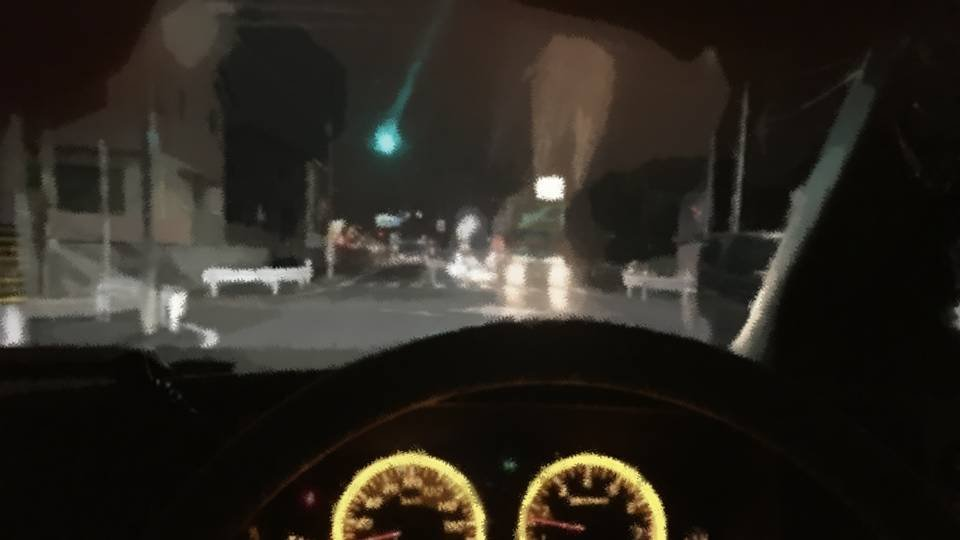
"Ise-san..."
"Hm?"
"What do you think of Kana-chan?"
"What does that mean?"
"Ise-san, you say it a lot, don't you? That your job is to protect kids' places to belong."
"Hm?"
"What do you think of Kana-chan?"
"What does that mean?"
"Ise-san, you say it a lot, don't you? That your job is to protect kids' places to belong."
"Yeah."
"I think Kana-chan trusts you a great deal, Ise-san."
"What do you mean?"
"Ise-san, you're a police officer, investigating Niimura-senpai and the others. Kana-chan knows that too. But... even so, Kana-chan stayed with you, Ise-san."
"I think Kana-chan trusts you a great deal, Ise-san."
"What do you mean?"
"Ise-san, you're a police officer, investigating Niimura-senpai and the others. Kana-chan knows that too. But... even so, Kana-chan stayed with you, Ise-san."
"For Kana-chan, being with you, Ise-san, could mean risking the loss of her place to belong.
And if she stayed with you anyway...
then I'm thinking, Ise-san, that you've surely become Kana-chan's place to belong."
"Don't be ridiculous... You're overthinking it. We only met today..."
"Don't be ridiculous... You're overthinking it. We only met today..."
"Then why do you think she kept staying with you?
She ran away from home alone to begin with, so she couldn't have meant to rely on anyone.
The reason she kept staying with you, Ise-san, even at a risk, is..."
"............"
"............"
True, that had been bothering me a little.
No, I know that on the way from Minakami City to Motoki-cho, she wasn't keen either.
I even gave her a smartphone, so she shouldn't have needed to stay with me anymore.
Above all, I don't remember doing anything to make her like me.
No, I know that on the way from Minakami City to Motoki-cho, she wasn't keen either.
I even gave her a smartphone, so she shouldn't have needed to stay with me anymore.
Above all, I don't remember doing anything to make her like me.
Goto-chan's manner is enough for me to know she isn't teasing me.
Goto-chan watched, thought it through, and came to that conclusion about her.
That I myself am her place to belong...
Goto-chan watched, thought it through, and came to that conclusion about her.
That I myself am her place to belong...
"I'll say it straight out.
Hasn't Kana-chan fallen for you, Ise-san?"
"Wha...!?"
"Well, it's only a hypothesis, and Kana-chan herself probably hasn't noticed. But Ise-san, if anything happens, please be there for Kana-chan. Right now, the only place to belong she can't lose is you, Ise-san."
"Wha...!?"
"Well, it's only a hypothesis, and Kana-chan herself probably hasn't noticed. But Ise-san, if anything happens, please be there for Kana-chan. Right now, the only place to belong she can't lose is you, Ise-san."
"I was asked by her parents to look after her.
So I'll look after her properly."
"That's not what I mean..."
Goto-chan pressed her lips shut.
Goto-chan's meaning is clear to me.
But I dodged it.
"That's not what I mean..."
Goto-chan pressed her lips shut.
Goto-chan's meaning is clear to me.
But I dodged it.
"Then, Ise-san, promise me just one thing.
If Kana-chan is ever suffering or sad, that you'll be there for her, Ise-san."
"I told you, her parents asked me to―"
"Even if her parents named someone other than you, Ise-san, that person couldn't be there for Kana-chan. It has to be you, Ise-san."
"I told you, her parents asked me to―"
"Even if her parents named someone other than you, Ise-san, that person couldn't be there for Kana-chan. It has to be you, Ise-san."
"Why are you siding with her so much?
You barely even talked earlier."
"Why would that be... I don't really know myself. But... it's just a feeling, but I think I don't want to sacrifice someone to bring Niimura-senpai back."
"............"
"Why would that be... I don't really know myself. But... it's just a feeling, but I think I don't want to sacrifice someone to bring Niimura-senpai back."
"............"
"So, to hurt Kana-chan as little as possible while bringing Niimura-senpai back, we need your support, Ise-san.
Please..."
"All right... Her feelings aren't something I've confirmed, but I'll be there for her as much as I can."
"It's a promise, okay?"
"Yeah."
"All right... Her feelings aren't something I've confirmed, but I'll be there for her as much as I can."
"It's a promise, okay?"
"Yeah."
We arrive at Motoki Station and pull into a nearby parking lot.
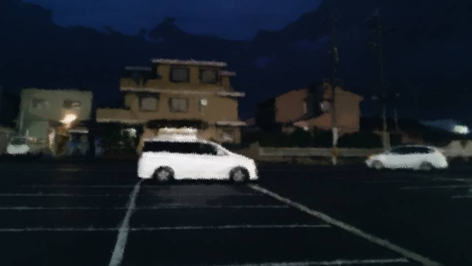
Just then, I hear several sirens in the distance.
What is it, did something happen?
Which means―
What is it, did something happen?
Which means―
Sure enough, I'm being called in too.
Work, at a time like this...
Work, at a time like this...
"Hello, Ise here."
"Inspector Ise, a murder at Motoki Station! Multiple victims reported! The situation is still ongoing!"
"Motoki Station!? Understood! Send backup right away!"
"Roger!"
"Inspector Ise, a murder at Motoki Station! Multiple victims reported! The situation is still ongoing!"
"Motoki Station!? Understood! Send backup right away!"
"Roger!"
A murder, here in Motoki-cho!?
With multiple victims, too, and it's still going on.
Tomorrow is April 8.
It can't be...!
With multiple victims, too, and it's still going on.
Tomorrow is April 8.
It can't be...!

"Goto-chan, there's been a murder at Motoki Station!
It's still dangerous, so stay here!"
"Then Kogori-senpai is at the scene too...! I'm going too!"
"Then Kogori-senpai is at the scene too...! I'm going too!"
Goto-chan got out of the car with me.
Goto-chan, once she talks like this, has to be brought along.
By rights I should talk her into staying here, but every second counts.
Kogori-san may be caught up in it too, and if so, she won't be easily persuaded.
Goto-chan, once she talks like this, has to be brought along.
By rights I should talk her into staying here, but every second counts.
Kogori-san may be caught up in it too, and if so, she won't be easily persuaded.
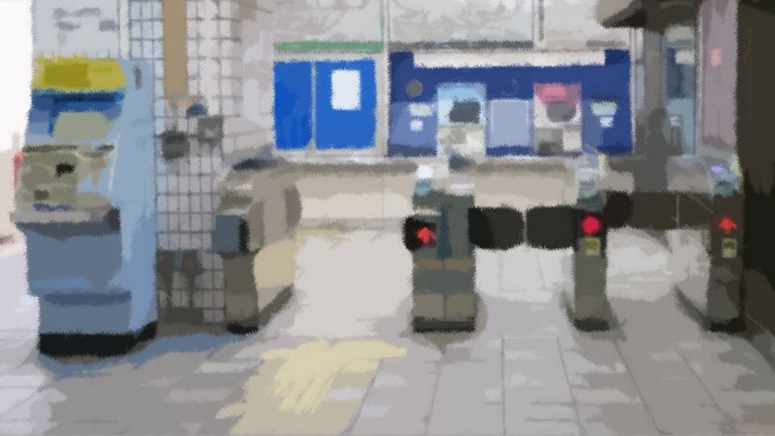
Flashing my police badge, I go through the ticket gate and head for the platform.
"What is this...!"
Women lying there, bleeding.
Or else some still thrash about like madwomen, grabbing at other women.
Women lying there, bleeding.
Or else some still thrash about like madwomen, grabbing at other women.
"Stop! Police!"
I pin down one thrashing woman, but she throws me off with a strength I'd never expect from a woman.
What on earth happened!?
Why are so many people, and only women at that, like this...!
I pin down one thrashing woman, but she throws me off with a strength I'd never expect from a woman.
What on earth happened!?
Why are so many people, and only women at that, like this...!
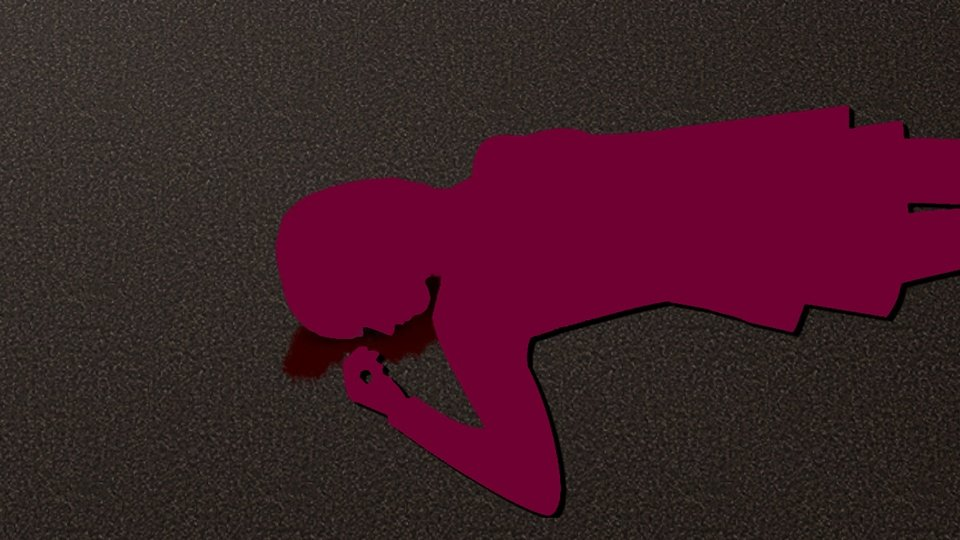
"Kogori-senpai!"
Goto-chan runs to one of the fallen women.
It was, unmistakably, Kogori-san.
She's bleeding from the neck, lying face up on the concrete platform.
Goto-chan runs to one of the fallen women.
It was, unmistakably, Kogori-san.
She's bleeding from the neck, lying face up on the concrete platform.
Just then, a dozen or so police officers and paramedics came rushing in.
The police take out handcuffs to restrain the women, and the paramedics tend to the injured.
Kogori-san has a medical team at her side right away too.
The police take out handcuffs to restrain the women, and the paramedics tend to the injured.
Kogori-san has a medical team at her side right away too.
"Kogori-senpai! Kogori-senpai!"
Goto-chan calls out again, and Kogori-san faintly opens her eyes.
"Go... to..."
"The ambulance is here, so you're okay now!"
Goto-chan calls out again, and Kogori-san faintly opens her eyes.
"Go... to..."
"The ambulance is here, so you're okay now!"
"Blue and... green..."
"Huh?"
"A girl with... blue and green eyes... with a knife..."
It can't be...! The one who caused this incident...!
"Huh?"
"A girl with... blue and green eyes... with a knife..."
It can't be...! The one who caused this incident...!
"Ise-san! Go find Kana-chan, right now!"
"Don't be stupid! There's no way a police officer can walk away from here!"
"You promised, didn't you! Right now, Kana-chan...!"
"Don't be stupid! There's no way a police officer can walk away from here!"
"You promised, didn't you! Right now, Kana-chan...!"
With something this terrible happening, I can't just abandon the scene.
But if she's involved...!
What do I do!? What am I supposed to...!
But if she's involved...!
What do I do!? What am I supposed to...!
"Ise-san! Leave this to the others!
There's someone only YOU can save, isn't there, Ise-san!
Are you going to abandon Kana-chan!? Do you think Kana-chan WANTED to do this!?
Isn't now exactly when you should be there for her, Ise-san!?"
"Gh...! Dammit...!"
"Gh...! Dammit...!"
I grabbed the shoulder of a nearby station attendant.
"Inspector Ise, Motoki Police Station! We have an eyewitness account of the culprit! Show me the security camera footage right away!"
"Y-y-yes!"
"No... wait a minute! Did you see the moment it happened!?"
"Y-yes! I saw it...!"
"Inspector Ise, Motoki Police Station! We have an eyewitness account of the culprit! Show me the security camera footage right away!"
"Y-y-yes!"
"No... wait a minute! Did you see the moment it happened!?"
"Y-yes! I saw it...!"
"Wasn't it a girl of about 15!?
A girl with odd eyes, one blue, one green, and light-colored hair!"
"Uh, um... I think it was something like that... After that, she jumped over the fence there and―"
"Uh, um... I think it was something like that... After that, she jumped over the fence there and―"
Hearing that much, I immediately ran down the stairs.
"Ise-san! Find her, no matter what!"
Goto-chan's voice slams into my back.
"Ise-san! Find her, no matter what!"
Goto-chan's voice slams into my back.
"Inspector Ise!"
On the way, I pass more of my men rushing in.
"Check the security camera footage right away! A foreign-looking girl of about 15 has fled! I'm going after her now!"
"R-roger!"
On the way, I pass more of my men rushing in.
"Check the security camera footage right away! A foreign-looking girl of about 15 has fled! I'm going after her now!"
"R-roger!"
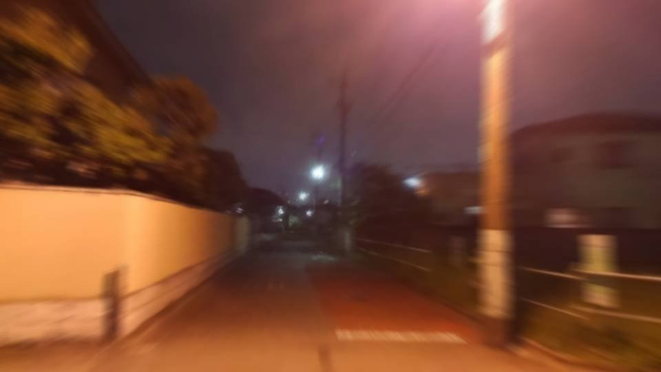
Dammit...! What on earth is going on!?
She slashed Kogori-san and fled!?
Could it really be, to obstruct the search for Mifuyu Niimura...!?
She slashed Kogori-san and fled!?
Could it really be, to obstruct the search for Mifuyu Niimura...!?
Then why are there so many others hurt or rampaging!?
There has to be some other reason!
Something like this, she... Kana would never want it!
There has to be some other reason!
Something like this, she... Kana would never want it!
That's right, I'm not chasing a culprit.
She may have done something, but she had reasons that left her no choice!
I'll hear those out properly and prove that she did nothing wrong!
She may have done something, but she had reasons that left her no choice!
I'll hear those out properly and prove that she did nothing wrong!
Where on earth did she go!? She can't have gotten far yet!
Or has she gone back to the hotel?
The station attendant only said 'jumped over the fence,' so I don't even know which direction.
At this rate I might as well be searching blind.
The station attendant only said 'jumped over the fence,' so I don't even know which direction.
At this rate I might as well be searching blind.
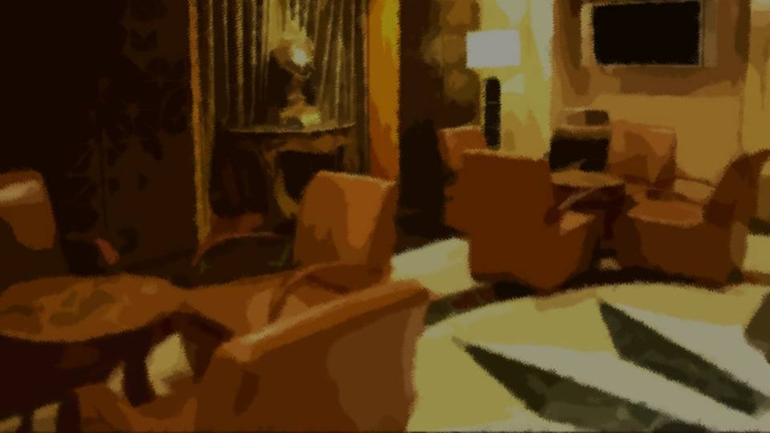
"I'm Ise, Motoki Police Station! Has the girl in Room 506 come back!?"
"Huh? Um... Kana Niimura-san, is it? She went out and doesn't seem to have come back... Around 8:30, I believe..."
"Sorry, but lend me the room key! It's an emergency!"
"Y-y-yes!"
"Huh? Um... Kana Niimura-san, is it? She went out and doesn't seem to have come back... Around 8:30, I believe..."
"Sorry, but lend me the room key! It's an emergency!"
"Y-y-yes!"
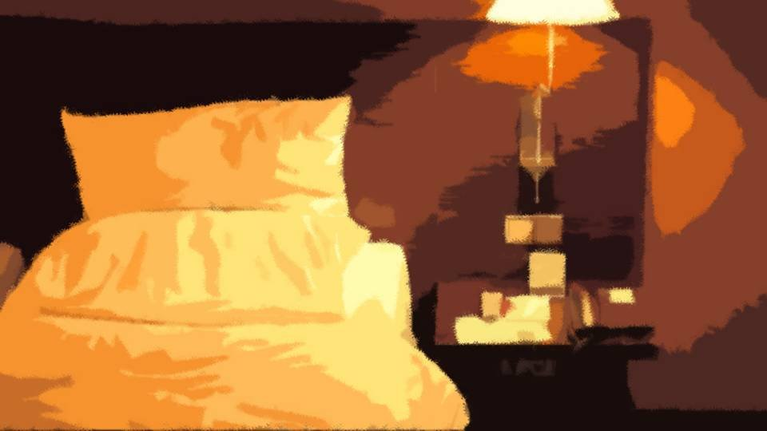
Dammit...! She's not here after all...!
Her bags are gone too.
So she left the hotel meaning to leave Motoki-cho without a word, and went to Motoki Station.
And there she ran into Kogori-san...
Her bags are gone too.
So she left the hotel meaning to leave Motoki-cho without a word, and went to Motoki Station.
And there she ran into Kogori-san...
Hm? This is...
The smartphone I gave her is lying on the bed.
The smartphone I gave her is lying on the bed.
I picked up the smartphone and hurried out of the hotel.
I have no leads at all.
But I know how much she's suffering right now.
So even if it's blind, I have to search for her.
But I know how much she's suffering right now.
So even if it's blind, I have to search for her.
"Kana!
Kanaaaa!"
Running with everything I have, I shout her name.
That I'm her place to belong, that her parents asked me to look after her, Goto-chan, and the promise I made her, none of that matters!
Running with everything I have, I shout her name.
That I'm her place to belong, that her parents asked me to look after her, Goto-chan, and the promise I made her, none of that matters!
I want to save Kana!
She ran away from home for some reason, couldn't go back home for some reason, and on top of that, she's been dragged into this...!
That's right, the only one who knows how much she's suffering right now is me!
It has to be me!
She ran away from home for some reason, couldn't go back home for some reason, and on top of that, she's been dragged into this...!
That's right, the only one who knows how much she's suffering right now is me!
It has to be me!
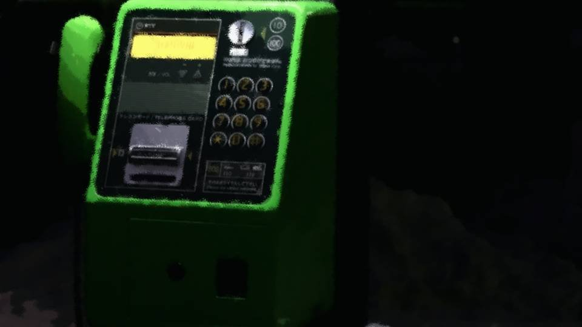
"Hello!?"
"............"
"Hello!? Kana!?"
"............"
"Hey! Where are you right now!? Are you all right!?"
"............"
"Hello!? Kana!?"
"............"
"Hey! Where are you right now!? Are you all right!?"
"Daddy..."
"Kana, what happened? Calm down and tell me."
"I... killed a lot of people..."
"Huh?"
"Hey... why didn't you tell me sooner...?"
"Kana, what happened? Calm down and tell me."
"I... killed a lot of people..."
"Huh?"
"Hey... why didn't you tell me sooner...?"
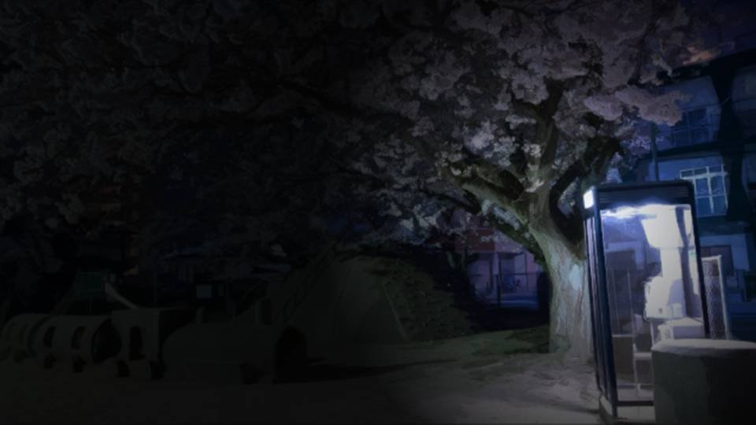
 video: 桜.wmv
video: 桜.wmv"Hey, Sakura! Turn on the TV! Any channel that's showing the news!"
I don't even... have the strength to stand up.
That urge to kill is gone too.
What I've done feels unreal―as if I were talking in a dream.
Is there any meaning in talking in a dream?
In a limpness that raises questions like that, it's all I can do to hold the receiver.
I don't even... have the strength to stand up.
That urge to kill is gone too.
What I've done feels unreal―as if I were talking in a dream.
Is there any meaning in talking in a dream?
In a limpness that raises questions like that, it's all I can do to hold the receiver.
video: 桜.wmvWhat I hear from the other end of the line is a tense voice coming from the TV.
I listen to it in a daze.
Though I already know more or less what it's saying.
I listen to it in a daze.
Though I already know more or less what it's saying.
video: 桜.wmv―Er, we go live to the scene.
About 30 minutes ago, at around 8:50 p.m., on the platform of Motoki Station in Motoki-cho, Sawa Prefecture, an incident occurred in which several women suddenly began killing one another.
Er... there appear to be many witnesses; when the express train bound for Megasawa Station arrived, more than 10 women suddenly began killing one another, an incident without precedent.
About 30 minutes ago, at around 8:50 p.m., on the platform of Motoki Station in Motoki-cho, Sawa Prefecture, an incident occurred in which several women suddenly began killing one another.
Er... there appear to be many witnesses; when the express train bound for Megasawa Station arrived, more than 10 women suddenly began killing one another, an incident without precedent.
"There was one in Motoki-cho too... Someone with the same ability as Mommy.
I ran into that person."
"Hey, where are you right now!? I'll come get you right away!"
"Why didn't you tell me...! If you get the blood of someone with precognition on you, everyone goes crazy, don't they?"
"Hey, where are you right now!? I'll come get you right away!"
"Why didn't you tell me...! If you get the blood of someone with precognition on you, everyone goes crazy, don't they?"
"Hey, Kana! Where are you!?"
"Goodbye, Daddy..."
I hang up and sink down, drained, inside a phone booth I couldn't say where.
Covered in blood like this, I can't get on a train.
I can't hitchhike either.
Before any of that, there's no place for me to go back to.
"Goodbye, Daddy..."
I hang up and sink down, drained, inside a phone booth I couldn't say where.
Covered in blood like this, I can't get on a train.
I can't hitchhike either.
Before any of that, there's no place for me to go back to.
video: 桜.wmvWhen I cut that person, whose face and name I didn't know, an indescribable pleasure ran through me.
Even the tips of my hair and nails, which have no nerves, trembled with joy at that pleasure.
And the instant that person's blood splashed onto someone else, I immediately sensed a different threat.
Even the tips of my hair and nails, which have no nerves, trembled with joy at that pleasure.
And the instant that person's blood splashed onto someone else, I immediately sensed a different threat.
video: 桜.wmvI ran―
If I'd stayed, I'd surely have been killed too.
Killed by women cursed with green eyes.
However strong I am, a pack of beasts that have lost their reason is extremely dangerous.
That's why I ran.
If I'd stayed, I'd surely have been killed too.
Killed by women cursed with green eyes.
However strong I am, a pack of beasts that have lost their reason is extremely dangerous.
That's why I ran.
video: 桜.wmvWhat did I come all this way for?
Mommy―I came because I was scared I'd want to kill her.
Mommy―if I'd had the courage to face her―it would never have come to this...
I... what have I been doing?
Mommy―I came because I was scared I'd want to kill her.
Mommy―if I'd had the courage to face her―it would never have come to this...
I... what have I been doing?
video: 桜.wmvWhat is this feeling inside me right now?
Regret, fear, anxiety, loneliness, unease, anger―
All of them fit.
Every negative emotion a human can feel has become one lump, and it's devouring my heart.
Regret, fear, anxiety, loneliness, unease, anger―
All of them fit.
Every negative emotion a human can feel has become one lump, and it's devouring my heart.
video: 桜.wmvI'll probably be caught by the police.
There were that many witnesses. And my looks stand out this much.
Ise-san will probably conclude it was me right away.
If I go back to the Arata settlement, I'll probably end up causing trouble.
There were that many witnesses. And my looks stand out this much.
Ise-san will probably conclude it was me right away.
If I go back to the Arata settlement, I'll probably end up causing trouble.
video: 桜.wmvDaddy―what was he trying to say to me?
Was he going to hide me?
Daddy and Mommy would surely do that.
But... but, Daddy...
That's a mistake, you know.
Was he going to hide me?
Daddy and Mommy would surely do that.
But... but, Daddy...
That's a mistake, you know.
video: 桜.wmvBecause I know.
What kind of future waits when you hide someone who did something bad.
God is watching, you know.
If you do something bad, you have to take your punishment properly.
What kind of future waits when you hide someone who did something bad.
God is watching, you know.
If you do something bad, you have to take your punishment properly.
video: 桜.wmvDaddy and Mommy both did a bad thing, hiding a murderer, so I, their daughter, got punished too.
It's not just me.
There's that person I met at the station too, and the people drenched in that person's blood―
This is how God hands down punishment, cruel beyond measure.
He drags in people who have nothing to do with it, and makes the ones who did wrong suffer all the more.
It's not just me.
There's that person I met at the station too, and the people drenched in that person's blood―
This is how God hands down punishment, cruel beyond measure.
He drags in people who have nothing to do with it, and makes the ones who did wrong suffer all the more.
video: 桜.wmvOn the phone just now, I hesitated over whether to tell him to get Haruka-chan and Auntie away from Arata.
But... if they run away again... what will happen?
They'll surely just repeat the same thing.
Run, and run, and run― and all that waits at the end of running― is a wretched ending.
It might get even worse than now.
But... if they run away again... what will happen?
They'll surely just repeat the same thing.
Run, and run, and run― and all that waits at the end of running― is a wretched ending.
It might get even worse than now.
video: 桜.wmvSo―Daddy, Auntie, let's give up.
If you did something bad, let's take the punishment properly.
That's the rule of society, isn't it?
Even a middle schooler knows that.
And you'd still say 'one for all, all for one'?
If you did something bad, let's take the punishment properly.
That's the rule of society, isn't it?
Even a middle schooler knows that.
And you'd still say 'one for all, all for one'?
video: 桜.wmvThen paying for the crime now is the best thing.
Miss this chance and it'll get even more wretched.
So I don't intend to stop Ise-san or Goto-san.
Hurry to Arata and catch the bad people, please.
The bad people... don't let them become any worse, please.
Miss this chance and it'll get even more wretched.
So I don't intend to stop Ise-san or Goto-san.
Hurry to Arata and catch the bad people, please.
The bad people... don't let them become any worse, please.
video: 桜.wmvBut... I'm different.
I didn't kill that person meaning to kill.
I just couldn't hold back and killed her.
I just followed my own desire.
So... I'm not at fault, am I?
This is the curse of the green eyes, isn't it?
I didn't kill that person meaning to kill.
I just couldn't hold back and killed her.
I just followed my own desire.
So... I'm not at fault, am I?
This is the curse of the green eyes, isn't it?
video: 桜.wmvSo... I'm different.
Killing without meaning to is far more terrifying than killing on purpose.
So, I'm different.
Not atoning for a crime... My very existence... is the sin.
It's not something that can be atoned for.
So I need a different punishment.
Killing without meaning to is far more terrifying than killing on purpose.
So, I'm different.
Not atoning for a crime... My very existence... is the sin.
It's not something that can be atoned for.
So I need a different punishment.
video: 桜.wmvIn my hand, that knife.
Because I used this to slash that person open, many people were cursed and died.
Does this knife, having drunk that blood, still want blood?
Then... would my blood suit your taste?
I'm a cursed girl, but― do you like the blood of a cursed daughter?
Because I used this to slash that person open, many people were cursed and died.
Does this knife, having drunk that blood, still want blood?
Then... would my blood suit your taste?
I'm a cursed girl, but― do you like the blood of a cursed daughter?
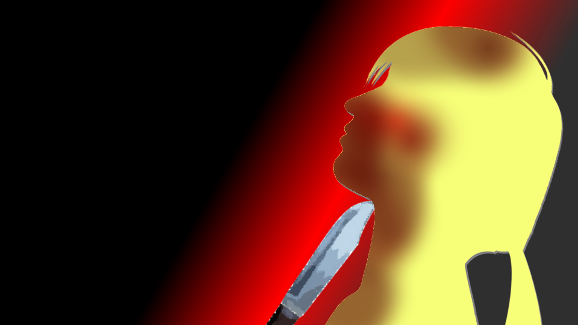
video: 桜.wmvI put the point of the blade to my throat.
The point of the blade is colder than I thought.
This April wind is cold too, after all.
Blood has soaked my whole body, and the wind blowing on it steals away my warmth.
The point of the blade is colder than I thought.
This April wind is cold too, after all.
Blood has soaked my whole body, and the wind blowing on it steals away my warmth.
video: 桜.wmvThe old phone booth flickers its light on and off, saying something.
Of course I can't make out a phone booth's voice, but what is it saying, I wonder.
Is it saying don't die, or is it saying die?
............ What am I even thinking?
As if a phone booth could talk.
Of course I can't make out a phone booth's voice, but what is it saying, I wonder.
Is it saying don't die, or is it saying die?
............ What am I even thinking?
As if a phone booth could talk.
video: 桜.wmvI must be lonely, all by myself.
I'm probably thinking things like how I'd like someone to be with me at the end, if I could.
But right now, regrets... I don't really have any.
Oh, but I'd have liked to at least thank Ise-san, who looked after me to the very end.
I'm probably thinking things like how I'd like someone to be with me at the end, if I could.
But right now, regrets... I don't really have any.
Oh, but I'd have liked to at least thank Ise-san, who looked after me to the very end.
video: 桜.wmv"―"
video: 桜.wmvDid someone call me?
I feel like someone called me in a loud voice.
Someone, from far away...
I feel like someone called me in a loud voice.
Someone, from far away...
video: 桜.wmvNo, that can't be.
Nobody here knows my name, and Ise-san won't call me by it.
Is this how I'm trying to hold back the hand with the knife?
But... it's okay now.
Goodbye... Daddy, Mommy, Sis...
Nobody here knows my name, and Ise-san won't call me by it.
Is this how I'm trying to hold back the hand with the knife?
But... it's okay now.
Goodbye... Daddy, Mommy, Sis...
video: 桜.wmvSuddenly someone grabs my hand.
The knife I'd pressed to my throat won't move, held back by that strength.
The knife I'd pressed to my throat won't move, held back by that strength.
video: 桜.wmv"So this is where you were."
Ise-san...?
Ise-san...?
video: 桜.wmvIse-san pulls me into a tight embrace.
As if to crush the lump of negative emotions trying to devour my heart.
As if to crush the lump of negative emotions trying to devour my heart.
video: 桜.wmv"I...
I..."
"Don't say anything. There's a lot I don't understand, but one thing I do: right now you're suffering enough to want to die."
"Ise-san... I..."
Ise-san's clothes are getting stained with the spattered blood from mine.
Even so, he won't loosen his grip.
"Don't say anything. There's a lot I don't understand, but one thing I do: right now you're suffering enough to want to die."
"Ise-san... I..."
Ise-san's clothes are getting stained with the spattered blood from mine.
Even so, he won't loosen his grip.
video: 桜.wmv"I'm sorry. I shouldn't have left you alone."
"I... killed a lot of people..."
"Maybe so. But did you kill because you wanted to? Or were there circumstances you just couldn't avoid? Depending on that, what happens to you will change a lot."
"I... killed a lot of people..."
"Maybe so. But did you kill because you wanted to? Or were there circumstances you just couldn't avoid? Depending on that, what happens to you will change a lot."
video: 桜.wmv"I didn't...
want... to kill..."
"Then say so, with your head held high. And tell the world, loud and clear, why you're suffering now. If you do, even the victims who survived this time might be able to recover."
"Then say so, with your head held high. And tell the world, loud and clear, why you're suffering now. If you do, even the victims who survived this time might be able to recover."
video: 桜.wmv"Didn't they all die...?"
"There are a few women who were pulled away from the scene before they took fatal wounds. But they're apparently still struggling, wanting to kill each other. Isn't there a way to suppress their murderous intent?"
"I know one..."
"Then we need your help."
"There are a few women who were pulled away from the scene before they took fatal wounds. But they're apparently still struggling, wanting to kill each other. Isn't there a way to suppress their murderous intent?"
"I know one..."
"Then we need your help."
video: 桜.wmvAnd Ise-san placed in my hand something a little familiar.
It was the smartphone I'd borrowed.
What I can do with this... by now... is just one thing.
With this, everything ends.
No... maybe everything can be reset and started over.
It was the smartphone I'd borrowed.
What I can do with this... by now... is just one thing.
With this, everything ends.
No... maybe everything can be reset and started over.
video: 桜.wmv"Hello, Kana!?"
"Daddy... I'm sorry..."
"Where are you now? I'll come get you!"
Daddy's voice is desperate, but somewhere in it I feel kindness.
But to that voice I have to deliver a cold-blooded decision.
I've already... decided.
"Daddy... I'm sorry..."
"Where are you now? I'll come get you!"
Daddy's voice is desperate, but somewhere in it I feel kindness.
But to that voice I have to deliver a cold-blooded decision.
I've already... decided.
"Daddy...
turn yourself in."
Shiyo 805, August 1（1 year and 4 months after the Motoki Station mass-frenzy killings）
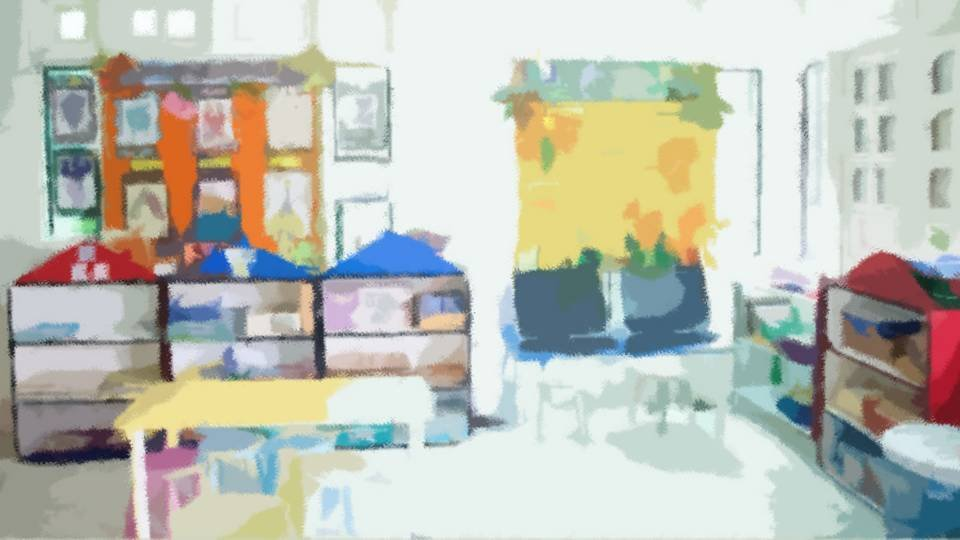
The verdict was handed down a short while ago.
The sentence, as the prosecution demanded: death. Death.
Mifuyu Niimura, the defendant, has been sentenced to death.
The sentence, as the prosecution demanded: death. Death.
Mifuyu Niimura, the defendant, has been sentenced to death.
I'd always pictured death-sentence news being reported with a lot more commotion.
Reporters from the gallery rushing out in front of the courthouse and making a fuss, that kind of picture.
But this verdict wasn't like that.
It was a verdict delivered as if it were only natural.
Reporters from the gallery rushing out in front of the courthouse and making a fuss, that kind of picture.
But this verdict wasn't like that.
It was a verdict delivered as if it were only natural.
It's not someone else's business, but it's nothing much to be surprised about either.
Auntie did things that deserved it.
Unfortunately, even though we're relatives, I don't seem to have enough compassion to defend her.
If anything, it's because of this person that Daddy and Mommy were arrested.
She should get a fitting punishment.
Auntie did things that deserved it.
Unfortunately, even though we're relatives, I don't seem to have enough compassion to defend her.
If anything, it's because of this person that Daddy and Mommy were arrested.
She should get a fitting punishment.
"Kana-chan, your ride is here."
"Ah, yes!"
Hearing that voice, I grab my bag right away and head for the exit.
"Ah, yes!"
Hearing that voice, I grab my bag right away and head for the exit.
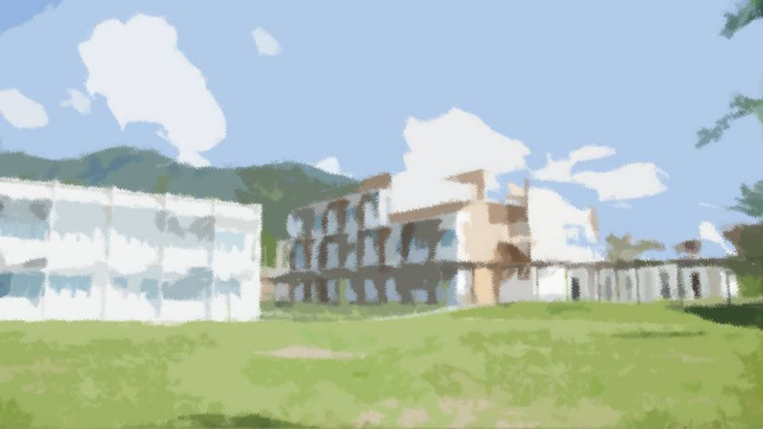
"Director, thank you for everything this past year!"
I bow deeply to the director.
"It'll be hard in all sorts of ways, but hang in there! Come visit us again!"
"Yes!"
I bow deeply to the director.
"It'll be hard in all sorts of ways, but hang in there! Come visit us again!"
"Yes!"
The only one seeing me off is the director.
I asked for it to be kept a secret from the other kids.
I'm not very good with goodbyes like this.
I go out the front door and head for the gate.
I asked for it to be kept a secret from the other kids.
I'm not very good with goodbyes like this.
I go out the front door and head for the gate.
"Hey. It's been a week."
"Aha! Ise-san!"
I hurry over to Ise-san and grab his arm.
Today I leave this children's home in Motoki-cho and go back to the Arata settlement.
"Aha! Ise-san!"
I hurry over to Ise-san and grab his arm.
Today I leave this children's home in Motoki-cho and go back to the Arata settlement.
For more than 1 year now, Ise-san has come to see me every so often.
After all, Daddy never gave the instruction to stop looking after me.
Taking advantage of that, I forced my way into staying on in Motoki-cho.
Of course, I went to see both Daddy and Mommy now and then.
After all, Daddy never gave the instruction to stop looking after me.
Taking advantage of that, I forced my way into staying on in Motoki-cho.
Of course, I went to see both Daddy and Mommy now and then.
And today, since my state of mind has gotten better, and to coincide with this August 1, I'm going to stand on my own.
Standing on my own just means going back to the Arata settlement, but even so, the way I live should change a lot from before.
Honestly, I don't want to leave Motoki-cho.
Because my place to belong is here...
Standing on my own just means going back to the Arata settlement, but even so, the way I live should change a lot from before.
Honestly, I don't want to leave Motoki-cho.
Because my place to belong is here...
"We're meeting at Zahha today. No objections, right?"
"Yeah! Hey, hey, you're off duty today, right?"
"Well, yeah. So today my days as your stand-in parent end, huh..."
"Hmm, stand-in parent, huh..."
I stare at Ise-san's profile with a sidelong, smoldering look.
"Yeah! Hey, hey, you're off duty today, right?"
"Well, yeah. So today my days as your stand-in parent end, huh..."
"Hmm, stand-in parent, huh..."
I stare at Ise-san's profile with a sidelong, smoldering look.
"Don't...! How long do you plan to keep up that seduction act!"
"Oh! So you DID find me alluring!"
"Just shut up, shut up!"
"Ahahaha! Ise-san, you're really a lolicon forever and ever!"
"Honestly... But... you've gotten... how do I put it... brighter."
"Oh! So you DID find me alluring!"
"Just shut up, shut up!"
"Ahahaha! Ise-san, you're really a lolicon forever and ever!"
"Honestly... But... you've gotten... how do I put it... brighter."
"That's because time has passed..."
"No, that's not it. You're brighter than when we first met."
"............"
"Before we get to Zahha, I'll tell you about the incident on April 8 last year. I still hadn't told you all of it."
"Yeah..."
"No, that's not it. You're brighter than when we first met."
"............"
"Before we get to Zahha, I'll tell you about the incident on April 8 last year. I still hadn't told you all of it."
"Yeah..."
The mass-frenzy killings at Motoki Station that occurred on Shiyo 804, April 8.
3 people died in that incident, and 7 were seriously injured.
In 6 of the 7 survivors, the frenzy didn't subside even after the incident, and they kept thrashing about, trying to kill one another.
3 people died in that incident, and 7 were seriously injured.
In 6 of the 7 survivors, the frenzy didn't subside even after the incident, and they kept thrashing about, trying to kill one another.
But a certain drug had a dramatic effect on those symptoms.
A drug called falsificaso.
This drug is something Daddy made.
When it was administered to the surviving victims, everyone's symptoms subsided.
A drug called falsificaso.
This drug is something Daddy made.
When it was administered to the surviving victims, everyone's symptoms subsided.
Based on all this, the police announced it was a terrorist attack using some drug or nerve gas.
Even those who became perpetrators were all counted as victims, and I was treated entirely as a victim too.
So I was never arrested, and until my mind and body showed improvement, I was in the care of the children's home in Motoki-cho.
Even those who became perpetrators were all counted as victims, and I was treated entirely as a victim too.
So I was never arrested, and until my mind and body showed improvement, I was in the care of the children's home in Motoki-cho.
But the police didn't try to look into it any further.
Even though they knew the cause, the police avoided looking into it further.
Ise-san, too, was frustrated about that part, but if there were orders from the National Police Agency, there was nothing to be done.
Even though they knew the cause, the police avoided looking into it further.
Ise-san, too, was frustrated about that part, but if there were orders from the National Police Agency, there was nothing to be done.
Even so, maybe the saving grace is that Haruka-chan and Auntie, who'd been missing, were found.
Ise-san accepted that the old case had been solved too, and he settled down.
Ise-san accepted that the old case had been solved too, and he settled down.
But I no longer hid anything from Ise-san.
What Daddy had told me― the green eyes― and the irresistible desire to kill.
I told Ise-san everything I knew.
What Daddy had told me― the green eyes― and the irresistible desire to kill.
I told Ise-san everything I knew.
"So, anyway, the victims from back then are all back in society.
They'll probably still need psychological follow-up from here on, though."
"Won't I get a criminal record?"
"Of course you won't. It was 'terrorism,' after all."
"But... I knew all of it, didn't I?"
"All you did was know, right?"
"Won't I get a criminal record?"
"Of course you won't. It was 'terrorism,' after all."
"But... I knew all of it, didn't I?"
"All you did was know, right?"
"But... but still..."
"Do you feel responsible?"
"Of course I do!"
"You've already taken responsibility. You revealed the truth about your dad, got the specific remedy ready, and we were able to arrest Mifuyu Niimura. Isn't that enough?"
"Do you feel responsible?"
"Of course I do!"
"You've already taken responsibility. You revealed the truth about your dad, got the specific remedy ready, and we were able to arrest Mifuyu Niimura. Isn't that enough?"
"............"
"Are you still thinking about it? About Natsumi Kogori-san?"
"Yeah..."
"That's why we're going to Zahha today, right?"
"Yeah..."
"Look, we're almost there."
"Are you still thinking about it? About Natsumi Kogori-san?"
"Yeah..."
"That's why we're going to Zahha today, right?"
"Yeah..."
"Look, we're almost there."

Before getting out of the car, I take one big, deep breath.
But even so, the situation doesn't change.
To accept that unchanging situation, to turn my heart even a little in a better direction, I take a deep breath.
But even so, the situation doesn't change.
To accept that unchanging situation, to turn my heart even a little in a better direction, I take a deep breath.
"You okay?"
"Yeah... Hey, Ise-san."
"Hm?"
"Is this really... okay?"
"She's the one who brought it up. It's fine."
"Yeah... Hey, Ise-san."
"Hm?"
"Is this really... okay?"
"She's the one who brought it up. It's fine."
"My hand...
hold it."
"............"
After a moment, Ise-san squeezes my right hand tight.
"Don't worry, I'm with you."
"Yeah... thanks."
"All right."
"............"
After a moment, Ise-san squeezes my right hand tight.
"Don't worry, I'm with you."
"Yeah... thanks."
"All right."
Hearing my answer, Ise-san quickly lets go of my hand and gets out of the car.
Hearing the driver's door open, I make up my mind too.
Riding that momentum, I get out of the car too.
Hearing the driver's door open, I make up my mind too.
Riding that momentum, I get out of the car too.
"Ise-saaan, over here, over here!"
At a table in the back, Goto-san is waving at us.
At a table in the back, Goto-san is waving at us.
"You okay? Can you do this?"
"Yeah, I'm fine now."
Even as I say I'm fine, I keep hold of Ise-san's arm as I head over to Goto-san.
"Yeah, I'm fine now."
Even as I say I'm fine, I keep hold of Ise-san's arm as I head over to Goto-san.
"Man, it's hot. That's August for you."
"No, no―it's HOT in here."
"What is?"
"Ise-san and Kana-chan are!"
"D-don't be stupid! It's not that kind of relationship!"
Ise-san comes out with that, so I kick him in the Achilles tendon with the tip of my foot.
"No, no―it's HOT in here."
"What is?"
"Ise-san and Kana-chan are!"
"D-don't be stupid! It's not that kind of relationship!"
Ise-san comes out with that, so I kick him in the Achilles tendon with the tip of my foot.
"Ow! You, what are you doing!"
"I don't care!"
"Honestly, what's that about..."
"Oh my, oh myyy! Now, now, you two, sit down, sit down!"
Urged on by Goto-san, we take our seats too.
Sitting at this table are me, Ise-san, Goto-san― and.
"I don't care!"
"Honestly, what's that about..."
"Oh my, oh myyy! Now, now, you two, sit down, sit down!"
Urged on by Goto-san, we take our seats too.
Sitting at this table are me, Ise-san, Goto-san― and.
"Uh, nice to meet you! My name's Kana Niimura..."
"Nice to meet you. I'm Natsumi Kogori."
On Kogori-san's neck, a faint scar remains.
Needless to say, I'm the one who gave it to her.
Despite the size of the wound and the bleeding, Kogori-san escaped with her life.
"Nice to meet you. I'm Natsumi Kogori."
On Kogori-san's neck, a faint scar remains.
Needless to say, I'm the one who gave it to her.
Despite the size of the wound and the bleeding, Kogori-san escaped with her life.
From what I've heard, right before I attacked, Kogori-san sensed the danger too.
Thanks to that, she just barely avoided bleeding to death.
Even so, the bleeding was severe, and it took her several months to be discharged.
Thanks to that, she just barely avoided bleeding to death.
Even so, the bleeding was severe, and it took her several months to be discharged.
"Kogori-san, I'm truly...
sorry."
I pressed my head to the table and offered Kogori-san my apology.
By rights, I should have gone to apologize much sooner.
But Ise-san told me it was better to wait until I'd calmed down, so I put it off until this very day.
I pressed my head to the table and offered Kogori-san my apology.
By rights, I should have gone to apologize much sooner.
But Ise-san told me it was better to wait until I'd calmed down, so I put it off until this very day.
But the longer I put it off, the scarier it got to meet her like this and apologize.
Kogori-san was nearly killed by me.
There's no way she'd be glad to meet someone like me.
Kogori-san was nearly killed by me.
There's no way she'd be glad to meet someone like me.
"Um...
Kana-chan―is that okay?"
In a voice gentler than I'd imagined, Kogori-san checks my name and what to call me.
"Kana-chan... thank you."
"Huh?"
In a voice gentler than I'd imagined, Kogori-san checks my name and what to call me.
"Kana-chan... thank you."
"Huh?"
"I was searching for Haruka for so, so long.
Kana-chan―thanks to you, Haruka came back.
So I'm really grateful to you, Kana-chan.
Today's the day of the verdict, so Haruka couldn't come, though."
"Kogori-san... but..."
"And I've heard properly why you attacked me, too. Kana-chan, I'm not going to blame you, and more than anything, the one who suffered most was you, Kana-chan, wasn't it?"
"Kogori-san... but..."
"And I've heard properly why you attacked me, too. Kana-chan, I'm not going to blame you, and more than anything, the one who suffered most was you, Kana-chan, wasn't it?"

"But... it doesn't change the fact that I did it."
"Kana-chan, what did you come here for today? To blame yourself? Or to meet me?"
"Huh?"
"Kana-chan, if you came to blame yourself, I'm going home right now, okay? I don't want to hear that, and just hearing it hurts."
"Kana-chan, what did you come here for today? To blame yourself? Or to meet me?"
"Huh?"
"Kana-chan, if you came to blame yourself, I'm going home right now, okay? I don't want to hear that, and just hearing it hurts."

"I'm sorry..."
"Which do you mean by that 'I'm sorry' just now? That you attacked me? That you're blaming yourself right now?"
"That I'm blaming myself..."
"Okay! Then that's the end of this talk! I came here today to thank you, Kana-chan."
"Which do you mean by that 'I'm sorry' just now? That you attacked me? That you're blaming yourself right now?"
"That I'm blaming myself..."
"Okay! Then that's the end of this talk! I came here today to thank you, Kana-chan."
With that, Ise-san pats me on the back.
Ise-san's hand is saying 'good for you.'
Head still bowed, I nod silently, to no one in particular.
Ise-san's hand is saying 'good for you.'
Head still bowed, I nod silently, to no one in particular.
"So, Ise-san, Ise-san!
You're still not going out with Kana-chan!?"
"Don't―! I told you, me and this girl are...!"
"Ise-san, when are you going to call me by my name? I've been waiting for more than 1 year now..."
I ride the flow too, and seize the moment to throw what I've wanted to say at Ise-san.
"Don't―! I told you, me and this girl are...!"
"Ise-san, when are you going to call me by my name? I've been waiting for more than 1 year now..."
I ride the flow too, and seize the moment to throw what I've wanted to say at Ise-san.
"Ahh, Ise-san, that's pretty hurtful. Right, Goto?"
"That's right! What are you getting all shy about?"
"D-d-d-d-don't be stupid! To begin with, going out with a 15-year-old girl is...!"
Hearing Ise-san's remark, I'm left speechless.
I didn't want to hear that remark...
"That's right! What are you getting all shy about?"
"D-d-d-d-don't be stupid! To begin with, going out with a 15-year-old girl is...!"
Hearing Ise-san's remark, I'm left speechless.
I didn't want to hear that remark...
"Kana-chan, what's wrong?"
"Sorry, maybe we teased him a bit too much..."
Kogori-san and Goto-san see my clouded face and look worried.
"Ise-san... do you know what day today is?"
"Sorry, maybe we teased him a bit too much..."
Kogori-san and Goto-san see my clouded face and look worried.
"Ise-san... do you know what day today is?"
"Huh?"
"I... turn 16 today, you know."
With that remark of mine, the air at the table freezes over all at once.
Kogori-san and Goto-san suspect something between me and Ise-san.
And with things that far along, the fact that Ise-san has forgotten my birthday.
Saying something that freezes the air is my small act of resistance against Ise-san, who keeps denying what's between us.
"I... turn 16 today, you know."
With that remark of mine, the air at the table freezes over all at once.
Kogori-san and Goto-san suspect something between me and Ise-san.
And with things that far along, the fact that Ise-san has forgotten my birthday.
Saying something that freezes the air is my small act of resistance against Ise-san, who keeps denying what's between us.
"Ise-san...
the wooooooooooorst!"
"Forgetting your girlfriend's birthday... Kana-chan should cut your throat."
Kogori-san's and Goto-san's eyes are even more sullen than mine.
Pierced by those looks, Ise-san is, naturally, flustered and stammering.
"Forgetting your girlfriend's birthday... Kana-chan should cut your throat."
Kogori-san's and Goto-san's eyes are even more sullen than mine.
Pierced by those looks, Ise-san is, naturally, flustered and stammering.
"W-w-wait, don't get the wrong idea! I did get something ready!"
"Suspicious..."
"Honestly, I guess I've got no choice... Here."
Ise-san took a small box out of his bag.
"Suspicious..."
"Honestly, I guess I've got no choice... Here."
Ise-san took a small box out of his bag.
"Uh, um...
happy birthday."
Not meeting my eyes, Ise-san hands me the box, looking embarrassed.
Huh? Really?
Is it really a birthday present?
I was sure he'd forgotten, so it caught me off guard instead.
Not meeting my eyes, Ise-san hands me the box, looking embarrassed.
Huh? Really?
Is it really a birthday present?
I was sure he'd forgotten, so it caught me off guard instead.
"What's wrong? You don't want it?"
I shake my head side to side and take the box.
I took it, fine, but I don't know what to do now.
I shake my head side to side and take the box.
I took it, fine, but I don't know what to do now.
"Kana-chan, what's inside!?"
"Hurry, hurry!"
Hurried along by the two of them, I come back to myself and open the box.
"Hurry, hurry!"
Hurried along by the two of them, I come back to myself and open the box.
"No, um... I didn't know what kind of thing would be good...
I went back and forth a lot, but I thought that might be good...
Um... I really don't know about this kind of thing..."
Bright red in the face, Ise-san starts making excuses nobody asked for.
What came out of the box was―
Bright red in the face, Ise-san starts making excuses nobody asked for.
What came out of the box was―
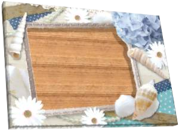
"Wow, it's cute!"
"Kana-chan, lucky you!"
What came out was a photo frame with cute decorations.
There was no photo in it.
"Kana-chan, lucky you!"
What came out was a photo frame with cute decorations.
There was no photo in it.
"Um, you know, it's like this...
Starting today, you'll be living a new life, so...
I'd like you to fill it with good memories from here on..."
Once again, Ise-san starts explaining the present without being asked.
I see―Ise-san can see what I need.
Break free of the fate I've had until now and put a new life on display in this photo frame, he's saying.
Once again, Ise-san starts explaining the present without being asked.
I see―Ise-san can see what I need.
Break free of the fate I've had until now and put a new life on display in this photo frame, he's saying.
"Ise-san... thank you...
I'm so happy..."
"If you like it, then good..."
Under the table, I tried holding Ise-san's hand.
Then, by reflex, he snaps his hand away.
Ise-san is bright red and won't meet my eyes.
"If you like it, then good..."
Under the table, I tried holding Ise-san's hand.
Then, by reflex, he snaps his hand away.
Ise-san is bright red and won't meet my eyes.
"Oh, but Ise-san, 3 days ago, July 29, was Kogori-senpai's birthday, you know?
Don't tell me you forgot, with your girlfriend on your mind?"
Goto-san piles on with new information while Ise-san hangs his head.
"Come on, Goto, let it go. It's Kana-chan's birthday today..."
At that, Ise-san started rummaging through his bag again.
Goto-san piles on with new information while Ise-san hangs his head.
"Come on, Goto, let it go. It's Kana-chan's birthday today..."
At that, Ise-san started rummaging through his bag again.
"I-I did get something, just in case.
Here."
"Ha! What a pretty hair clip! Thank you, Ise-san!"
"Lucky you two. My birthday's still a ways off..."
"Goto-chan, I can't exactly leave you with nothing. Here."
Goto-san is handed a slightly bigger box.
"Ha! What a pretty hair clip! Thank you, Ise-san!"
"Lucky you two. My birthday's still a ways off..."
"Goto-chan, I can't exactly leave you with nothing. Here."
Goto-san is handed a slightly bigger box.
"Oh! I can tell by the smell! A Furano melon from Hokkaido, right!?"
"Ha ha, that's Goto-chan for you."
The two of them, looking happy with Ise-san's presents― or so it seemed, but...
"Ha ha, that's Goto-chan for you."
The two of them, looking happy with Ise-san's presents― or so it seemed, but...
"Ise-san!"
"Ise-san!"
"Wh-what is it..."
"Ise-san!"
"Wh-what is it..."
"We're happy you're giving us presents, but!"
"We're happy, but! Kana-chan―in front of her, presents are a no-no, aren't they!?"
"Huh?"
"Huh?"
"We're happy, but! Kana-chan―in front of her, presents are a no-no, aren't they!?"
"Huh?"
"Huh?"
"You coolly gave your girlfriend a present, and then right after, you give presents to other women too? That's a total blunder!"
"If it were me, I'd definitely get jealous and sulk!"
"Wha! You're the ones who begged me for presents!"
"We never thought you'd actually have them ready!"
"If it were me, I'd definitely get jealous and sulk!"
"Wha! You're the ones who begged me for presents!"
"We never thought you'd actually have them ready!"
At last I understand.
So this is the creature called woman. A troublesome creature.
But I'm honestly happy.
Because the present for me must be the one that took the longest to choose.
I'm happy because he chose the present that suits me best.
So this is the creature called woman. A troublesome creature.
But I'm honestly happy.
Because the present for me must be the one that took the longest to choose.
I'm happy because he chose the present that suits me best.
"Ise-san, thank you. I really am happy!"
I send a burning gaze into Ise-san's eyes.
"Hey, Ise-san, I'm 16!"
"Wh-what is it... I know that..."
"16 is old enough to get married!"
I send a burning gaze into Ise-san's eyes.
"Hey, Ise-san, I'm 16!"
"Wh-what is it... I know that..."
"16 is old enough to get married!"
"W-w-wait, hold on, hold on, please!"
"Ohh! A proposal, of all things!"
"A proposal from a pretty girl who just turned 16―you're the happiest lolicon in the world!"
"Waaait, wait, wait, wait, wait, wait, wait, wait, wait!"
"So I'm... no good, after all...?"
"Ohh! A proposal, of all things!"
"A proposal from a pretty girl who just turned 16―you're the happiest lolicon in the world!"
"Waaait, wait, wait, wait, wait, wait, wait, wait, wait!"
"So I'm... no good, after all...?"
"I told you before, didn't I! I don't lay a hand on girls under 18!"
"That's only bad when neither side means to get married, right? If we intend to get married, it isn't a crime, is it?"
"Nooo, no, no, no, no, no, no, no, no! I'm a police officer! I must not be misunderstood, not even by the slightest chance! Besides, the law changed a few years back, and unless you're 18 or over―"
"That's only bad when neither side means to get married, right? If we intend to get married, it isn't a crime, is it?"
"Nooo, no, no, no, no, no, no, no, no! I'm a police officer! I must not be misunderstood, not even by the slightest chance! Besides, the law changed a few years back, and unless you're 18 or over―"
"Ise-san, that's not manly!"
"This is your chance to become the world's number one lolicon!?"
"Oh, come on... give me a break..."
Pressured by the three of us, Ise-san shrank down completely.
"This is your chance to become the world's number one lolicon!?"
"Oh, come on... give me a break..."
Pressured by the three of us, Ise-san shrank down completely.
"Whoops! I just remembered an urgent errand, so I'll step out for about 10 minutes!"
Goto-san scurried off toward the exit.
"Goto-chan hasn't changed a bit, even past 20..."
"Knowing Goto, she must've thought of something good!"
Kogori-san seems to have some idea what Goto-san's urgent errand is.
This mystery, too, will be cleared up before long.
Goto-san scurried off toward the exit.
"Goto-chan hasn't changed a bit, even past 20..."
"Knowing Goto, she must've thought of something good!"
Kogori-san seems to have some idea what Goto-san's urgent errand is.
This mystery, too, will be cleared up before long.
Dinner at Zahha over, we said goodbye to Goto-san and Kogori-san.
And I get into Ise-san's car again.
Now we head to Motoki Station, and I go back to the Arata settlement.
Daddy and Mommy are supposed to come back in the fall too.
And I get into Ise-san's car again.
Now we head to Motoki Station, and I go back to the Arata settlement.
Daddy and Mommy are supposed to come back in the fall too.
"Ise-san, that was fun, wasn't it!"
"Yeah... I'm sure YOU two had fun."
"Was it boring?"
"I... was made a stepping stone for your amusement..."
"Ehh? But Ise-san, I think that kind of character suits you better, don't you?"
"What do you take me for..."
"Yeah... I'm sure YOU two had fun."
"Was it boring?"
"I... was made a stepping stone for your amusement..."
"Ehh? But Ise-san, I think that kind of character suits you better, don't you?"
"What do you take me for..."
About 10 more minutes to Motoki Station, maybe.
The road is a little congested.
With the August heat wave, the car windows are shut tight, and only the sound of the car's air conditioner reaches my ears.
Our conversation, too, goes no further after that.
The road is a little congested.
With the August heat wave, the car windows are shut tight, and only the sound of the car's air conditioner reaches my ears.
Our conversation, too, goes no further after that.
"Hey, Ise-san..."
"Hm?"
"I'm going home..."
"Yeah..."
"I'm going home already, okay?"
"Yeah..."
"Hm?"
"I'm going home..."
"Yeah..."
"I'm going home already, okay?"
"Yeah..."
"Won't you be lonely?"
"Of course I'll be lonely..."
"You'll be lonely, and you're still just going to let me go home like this?"
"Your place to belong is the Arata settlement, isn't it?"
"Do you seriously think that?"
"............"
"Of course I'll be lonely..."
"You'll be lonely, and you're still just going to let me go home like this?"
"Your place to belong is the Arata settlement, isn't it?"
"Do you seriously think that?"
"............"
"Do you really think that's my only place to belong?"
"I'm driving. Be quiet."
The light turns green, and the car creeps forward.
The car creeps forward.
It creeps forward, and yet― sooner or later it will reach the station.
"I'm driving. Be quiet."
The light turns green, and the car creeps forward.
The car creeps forward.
It creeps forward, and yet― sooner or later it will reach the station.
"Ise-san, where's YOUR place to belong?"
"Huh?"
"Ise-san, do you have a place to belong?"
"Once you're an adult, that kind of thing works itself out."
"Can't I... Can't I... be your place to belong?"
"Hey, not this again..."
"I've never once said it as a joke..."
"Huh?"
"Ise-san, do you have a place to belong?"
"Once you're an adult, that kind of thing works itself out."
"Can't I... Can't I... be your place to belong?"
"Hey, not this again..."
"I've never once said it as a joke..."
"First off, your own place to belong..."
"I DO have a place to belong! My place to belong... is in Motoki-cho too..."
"............"
At my plea, Ise-san is silent.
Even so, wanting somehow to hear something from Ise-san, I search through all sorts of memories.
"I DO have a place to belong! My place to belong... is in Motoki-cho too..."
"............"
At my plea, Ise-san is silent.
Even so, wanting somehow to hear something from Ise-san, I search through all sorts of memories.
"Hey, Ise-san, you called me by my name once, didn't you?"
"Huh?"
"When I was in the park, about to stab a knife into my own throat. That time, I heard a voice calling my name."
"............"
"Huh?"
"When I was in the park, about to stab a knife into my own throat. That time, I heard a voice calling my name."
"............"
"Thanks to that, I didn't die.
If it weren't for that voice, then before you found me, Ise-san, the knife..."
"............"
"Because back then, the only one in Motoki-cho who knew my name was you, Ise-san."
"It must've been your imagination."
"............"
"Because back then, the only one in Motoki-cho who knew my name was you, Ise-san."
"It must've been your imagination."
"I see. So it was my imagination after all...
But even if it was my imagination, I'm grateful to that voice."
"We're almost there."
"We're almost there."
Now I'm sure of it.
That time, Ise-san shouted my name and searched me out.
Looking at Ise-san now, there's no doubt.
That time, Ise-san shouted my name and searched me out.
Looking at Ise-san now, there's no doubt.
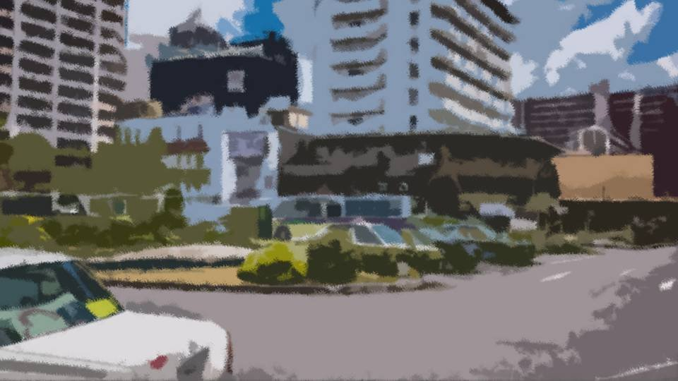
Ise-san seems to be parking on the shoulder by the station roundabout.
He never parks like this, but today it's as if to say 'who cares about illegal parking.'
He never parks like this, but today it's as if to say 'who cares about illegal parking.'
"I'll see you off properly, until the train leaves."
"Yeah..."
My feet have never been this heavy.
Swinging them out of the car is such a chore.
No―I don't want to swing them out.
"Yeah..."
My feet have never been this heavy.
Swinging them out of the car is such a chore.
No―I don't want to swing them out.
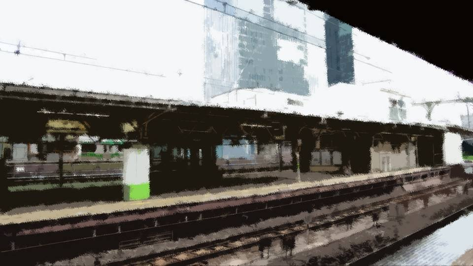
"Hey, come to think of it, there's something I wanted to ask..."
"What...?"
"Why did you bring a knife, of all things, when you left the Arata settlement?"
"Hunting..."
"Huh?"
"I was going to go hunting."
"What...?"
"Why did you bring a knife, of all things, when you left the Arata settlement?"
"Hunting..."
"Huh?"
"I was going to go hunting."
"Hunting...
what?"
"I mean... until last year, I thought animals were just everywhere, so... I figured I'd live off the land by hunting."
"Pff! Pff-ff-ff-ff...!"
Ise-san may smile, but he rarely laughs out loud.
My sheltered-girl story must have been really funny to him.
"I mean... until last year, I thought animals were just everywhere, so... I figured I'd live off the land by hunting."
"Pff! Pff-ff-ff-ff...!"
Ise-san may smile, but he rarely laughs out loud.
My sheltered-girl story must have been really funny to him.
"Geez, looking back now, it's so embarrassing..."
"Hng-hng-hng...! Dff-ff-ff-ff-ff...!"
And once Ise-san starts laughing out loud, he can't stop for a while.
He tries hard to keep his voice down, but it comes out as a weird laugh, and people who don't know him take him for a pervert, apparently.
"Hng-hng-hng...! Dff-ff-ff-ff-ff...!"
And once Ise-san starts laughing out loud, he can't stop for a while.
He tries hard to keep his voice down, but it comes out as a weird laugh, and people who don't know him take him for a pervert, apparently.
Embarrassing story or not, it makes me happy when Ise-san laughs.
Normally it would make me happy, but― today is different.
I don't want to waste time on something like this.
I punched Ise-san in the solar plexus as hard as I could.
Normally it would make me happy, but― today is different.
I don't want to waste time on something like this.
I punched Ise-san in the solar plexus as hard as I could.
"Ugh...!"
"In 1 more minute I'll be gone...! Are you going to keep acting like that the whole time!?"
Even if I have to force it, I'll bring Ise-san back to his senses.
For just 1 more minute, at least... look at me...!
"In 1 more minute I'll be gone...! Are you going to keep acting like that the whole time!?"
Even if I have to force it, I'll bring Ise-san back to his senses.
For just 1 more minute, at least... look at me...!
"Hey,
is it because I'm still only 16...
that you won't look at me?
Or is it nothing to do with age, and I'm just..."
"I'm at a loss here..."
"In the end, you never once called me by my name..."
"............"
"I'm at a loss here..."
"In the end, you never once called me by my name..."
"............"
―The express train bound for Megasawa will be arriving shortly.
It seems my train is arriving.
In the end, my place to belong... It's not enough for me to think it's where I belong.
The one who'd be my place to belong has to accept it...
In the end, my place to belong... It's not enough for me to think it's where I belong.
The one who'd be my place to belong has to accept it...
"Hey, when we were leaving Zahha, Goto-chan handed me this.
You were supposed to get it, and look at it once you're on the train, she said."
I take an envelope from Ise-san.
Wanting me to look once I'm on the train... maybe that means so Ise-san won't see it.
But right now, more than that...
I take an envelope from Ise-san.
Wanting me to look once I'm on the train... maybe that means so Ise-san won't see it.
But right now, more than that...
"Sorry, Ise-san. It was always just me getting carried away.
From now on too, keep working hard at the healthy development of young people, okay!"
"............"
I meant to give Ise-san the best smile I could.
But Ise-san looks somehow gloomy.
Even at a time like this... why...
"............"
I meant to give Ise-san the best smile I could.
But Ise-san looks somehow gloomy.
Even at a time like this... why...
―The train will be arriving shortly. Please stand back behind the white line.
"What's with you...
Is that what grown-ups are like?
Make it clear...!
Make it clear! You're a man, aren't you!?
If you're turning me down, then turn me down clearly!
Otherwise...
my place to belong...
will be left hanging forever..."
I wanted to part with a smile at the end.
But it seems that's not to be.
Even once the train arrives and leaves, my tears won't dry.
I wanted to part with a smile at the end.
But it seems that's not to be.
Even once the train arrives and leaves, my tears won't dry.
Do I have to make this kind of decision all by myself too?
Have I been asking too much of the other person to decide?
But still... that much, I want him to decide.
I want the man... to decide.
That much, I can be allowed to lean on him, can't I...
Have I been asking too much of the other person to decide?
But still... that much, I want him to decide.
I want the man... to decide.
That much, I can be allowed to lean on him, can't I...
The train thunders into the platform.
A hot summer wind blows through between us.
Even that hot wind doesn't dry my tears.
It won't dry them, and it won't wipe them away either.
A hot summer wind blows through between us.
Even that hot wind doesn't dry my tears.
It won't dry them, and it won't wipe them away either.
"I have one favor to ask."
―The doors are opening.
"When your parents come back, tell them this.
That 2 years from now, a warped police officer like me will come to the Arata settlement."
"That that police officer will come to the Arata settlement not as a police officer, but as one man."
"Will that person come in 2 years?"
"Yeah. Exactly 2 years from now, on August 1."
"That's exactly my 18th birthday. Okay, I'll tell them."
"Will that person come in 2 years?"
"Yeah. Exactly 2 years from now, on August 1."
"That's exactly my 18th birthday. Okay, I'll tell them."
"Does that person... like just any pretty girl?"
―The express train bound for Megasawa is now departing.
"The one that guy loves is surely―
no, without a doubt, just one person.
Someone special, who can each be the other's place to belong."
"I can believe in that person, right?"
"Yeah."
"But... that person doesn't seem to know my name. He's never once called me by my name. If he called my name even once... I could believe him. That person's voice calling me saved my life. So if that person called my name―"
"I can believe in that person, right?"
"Yeah."
"But... that person doesn't seem to know my name. He's never once called me by my name. If he called my name even once... I could believe him. That person's voice calling me saved my life. So if that person called my name―"
―The doors are closing.

The doors close and cut in between me and Ise-san, and with no time even to look at each other, the train pulls away.
It took less than a minute for the platform to fall behind and the view to change to deep mountains.
It took less than a minute for the platform to fall behind and the view to change to deep mountains.
Just now, blocked by the noise around us, I couldn't hear the last thing Ise-san said.
But I saw Ise-san's lips move clearly.
I could tell those lips were saying a very short word―a two-syllable word.
But I saw Ise-san's lips move clearly.
I could tell those lips were saying a very short word―a two-syllable word.
And though I couldn't hear it, he definitely put it into his voice.
Ise-san said it properly.
Said it clearly― Kana.
Ise-san said it properly.
Said it clearly― Kana.
Honestly, he could've just said it from the start.
If he meant to come in 2 years, there was no need to drag it out this far.
Could it be this was Ise-san's idea of drama?
That doesn't suit you at all, Ise-san.
Or were you nervous in front of a pretty girl?
Honestly, such a lolicon...
If he meant to come in 2 years, there was no need to drag it out this far.
Could it be this was Ise-san's idea of drama?
That doesn't suit you at all, Ise-san.
Or were you nervous in front of a pretty girl?
Honestly, such a lolicon...
In my hand was the envelope that Goto-san had apparently handed over.
When I opened it, what looked like a photo came out.
This photo is...
When I opened it, what looked like a photo came out.
This photo is...

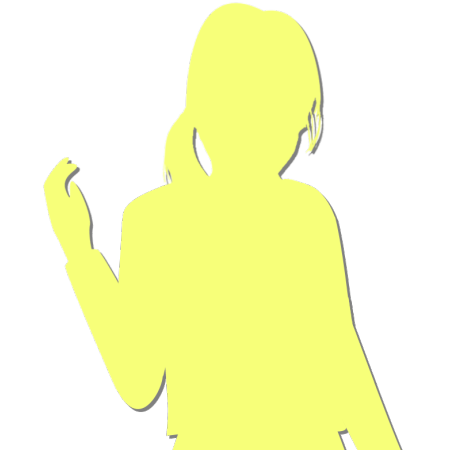
"Hey, Ise-san, I'm 16!"
"Wh-what is it... I know that..."
"16 is old enough to get married!"
"W-w-wait, hold on, hold on, please!"
"Wh-what is it... I know that..."
"16 is old enough to get married!"
"W-w-wait, hold on, hold on, please!"
It's the photo from just now.
I see―Goto-san secretly took it, and slipped out partway through to get it developed.
On the back of the photo, it says 'Be happy!'
Why she gave me a photo like this― I know the reason.
I see―Goto-san secretly took it, and slipped out partway through to get it developed.
On the back of the photo, it says 'Be happy!'
Why she gave me a photo like this― I know the reason.
I take out the photo frame Ise-san gave me.
The photo worthy of this frame is in my hand.
To break free of the fate I've had until now, I'll fill this frame with new memories.
This photo is the first page of my new memories.
The photo worthy of this frame is in my hand.
To break free of the fate I've had until now, I'll fill this frame with new memories.
This photo is the first page of my new memories.
2 more years―
In 2 years I'll become an even better woman, just you watch.
A woman good enough for you, Ise-san, past the point where you can hide behind embarrassment.
Then be my place to belong, okay?
Ise-san... I love you!
In 2 years I'll become an even better woman, just you watch.
A woman good enough for you, Ise-san, past the point where you can hide behind embarrassment.
Then be my place to belong, okay?
Ise-san... I love you!

"Well, that's so, but... um...
do you know the state the body is in...?"
"The skin stripped from the whole body, a corpse too wretched to look at, is what I've heard."
"Well... yeah... But, though it's strange for me to say it, I'd rather not recommend it... Your mom already looked at it for us, anyway..."
"I'm allowed to see him, aren't I?"
"Then, this way..."
"The skin stripped from the whole body, a corpse too wretched to look at, is what I've heard."
"Well... yeah... But, though it's strange for me to say it, I'd rather not recommend it... Your mom already looked at it for us, anyway..."
"I'm allowed to see him, aren't I?"
"Then, this way..."
The one sleeping there was, unmistakably, my dad.
Other people might not be able to tell, but, still, it's without a doubt my dad.
Even changed beyond recognition like this, I would never mistake him.
Other people might not be able to tell, but, still, it's without a doubt my dad.
Even changed beyond recognition like this, I would never mistake him.


"The culprit who killed Ryoji Kogori-san... is almost certainly Mifuyu Niimura..."
"So... it's true after all..."
"Kogori-san, Niimura-san, neither of you is to be alone, understood!? The culprit may be after you!"
"So... it's true after all..."
"Kogori-san, Niimura-san, neither of you is to be alone, understood!? The culprit may be after you!"
"No way...! Haruka already went home, and Goto and I are at home too...!"
"You're not at Zahha!? Don't move from there! I'm heading over right now!"
"You're not at Zahha!? Don't move from there! I'm heading over right now!"

"Obasan... about Haruka's dad...
I heard about it just now. I'm truly... sorry."

"Natsumi-chan... It's... not that kind of problem anymore...
We're going, Haruka..."

"Kogori-senpai! Niimura-senpai is...!"
"Goto... Haruka's... gone..."
"Goto... Haruka's... gone..."
"I'm just... going to get some air outside..."
"Mom, what's going to happen to her..."
"At best, turning herself in. In the worst case―"
"All right, you don't have to say any more."
"Mom, what's going to happen to her..."
"At best, turning herself in. In the worst case―"
"All right, you don't have to say any more."
What is this...!
Turning herself in, what does that mean! The worst case, what does that mean!
Mom, did you do something!?
Dad, did you do something you had to be killed for!?
Turning herself in, what does that mean! The worst case, what does that mean!
Mom, did you do something!?
Dad, did you do something you had to be killed for!?
Haruka, and Dad, and Mom, all of them disappear from in front of me.
Why is it always the people dear to me...!
Why is it always the people dear to me...!
I knew that a terrible incident had happened in Motoki-cho.
But whether it had anything deeply to do with the Niimura family, I was never told.
But whether it had anything deeply to do with the Niimura family, I was never told.
4 years have passed since then.
That I slipped away from the Arata settlement and was fated to meet them― maybe it was inevitable.
Because I, too, can hardly call myself unrelated.
That I slipped away from the Arata settlement and was fated to meet them― maybe it was inevitable.
Because I, too, can hardly call myself unrelated.
We enter the hotel and get through the check-in procedure.
All the necessary paperwork is being handled by Ise-san, so I just wait in a chair in the lobby.
Is he writing down some made-up address too?
All the necessary paperwork is being handled by Ise-san, so I just wait in a chair in the lobby.
Is he writing down some made-up address too?
"All right, let's go."
"Um... the bill for this hotel..."
"Don't worry about it. I had online points saved up, so it didn't cost a single yen."
"Thank you..."
"Um... the bill for this hotel..."
"Don't worry about it. I had online points saved up, so it didn't cost a single yen."
"Thank you..."
I'm the only one staying here tonight.
But Ise-san seems to mean to come up to my room.
What is he going to talk about?
But Ise-san seems to mean to come up to my room.
What is he going to talk about?
I sit on the edge of the bed, and Ise-san sits in the chair.
"Sorry, but... what I'm about to say may be a little close to an interrogation."
"............"
Ise-san seems to find it a little hard to talk too, but he doesn't look like he means to stop.
"Sorry, but... what I'm about to say may be a little close to an interrogation."
"............"
Ise-san seems to find it a little hard to talk too, but he doesn't look like he means to stop.
"You... how much do you know?"
"Huh?"
"What I'm thinking, and what Goto-chan is thinking, how much of that do you know?"
"Um... what do you mean?"
I can't see what the question is getting at. It's a question with a lot of words left out.
Though it seems to involve Goto-san, at least.
"Huh?"
"What I'm thinking, and what Goto-chan is thinking, how much of that do you know?"
"Um... what do you mean?"
I can't see what the question is getting at. It's a question with a lot of words left out.
Though it seems to involve Goto-san, at least.
"Hmm... how should I put it, in this case...
Yeah, let's see. Let me tell you a bit about Natsumi Kogori-san."
Speaking of Natsumi Kogori, she's the real younger sister who's been trying to trace Haruka-chan's whereabouts.
Come to think of it, apart from their being sisters and best friends, I hadn't heard anything in particular.
Speaking of Natsumi Kogori, she's the real younger sister who's been trying to trace Haruka-chan's whereabouts.
Come to think of it, apart from their being sisters and best friends, I hadn't heard anything in particular.
"You... do you believe in psychic powers?"
"Psychic powers...?"
"That's right. Precognition, for example."
The intuition I have, and Mommy has, could be called precognition too.
I'd never thought of it in a category as grand as psychic powers in the first place, but true, it could be grouped that way.
"Psychic powers...?"
"That's right. Precognition, for example."
The intuition I have, and Mommy has, could be called precognition too.
I'd never thought of it in a category as grand as psychic powers in the first place, but true, it could be grouped that way.
"The truth is, Natsumi Kogori-san has a strange intuition she can only use at this time of year.
When she sees or talks with someone who's likely to run into danger, she can sense that person's danger ahead of time."
There are people besides me and Mommy who can do that...?
And someone with no connection to the Arata settlement at all.
There are people besides me and Mommy who can do that...?
And someone with no connection to the Arata settlement at all.
"So...
before we left Zahha earlier, I said this to Goto-chan:
call Natsumi Kogori-san right away."
............ .............
It took me a few seconds to read Ise-san's intent.
Natsumi Kogori has danger sense, and having Goto-san talk with her means 'have Natsumi Kogori foresee the danger.'
............ .............
It took me a few seconds to read Ise-san's intent.
Natsumi Kogori has danger sense, and having Goto-san talk with her means 'have Natsumi Kogori foresee the danger.'
In other words, Ise-san must have thought Goto-san might be in danger.
Reaching that thought wasn't very hard for me.
Because it was exactly me who was going to kill Erina Goto tonight.
Reaching that thought wasn't very hard for me.
Because it was exactly me who was going to kill Erina Goto tonight.
"Don't you have something to say?"
Huh? Do I need to say anything?
After all, Ise-san suspects I'll put Goto-san in danger, doesn't he?
He's probably already heard that I'm planning to kill Goto-san too, hasn't he?
There's nothing I can say, is there?
Huh? Do I need to say anything?
After all, Ise-san suspects I'll put Goto-san in danger, doesn't he?
He's probably already heard that I'm planning to kill Goto-san too, hasn't he?
There's nothing I can say, is there?
"Not really... nothing..."
Without looking at Ise-san, I spat the words at the floor.
"I see. Then that's fine. Well then, I'll come pick you up here 30 minutes before the first train tomorrow."
Ise-san left the room without even saying good night.
Without looking at Ise-san, I spat the words at the floor.
"I see. Then that's fine. Well then, I'll come pick you up here 30 minutes before the first train tomorrow."
Ise-san left the room without even saying good night.
I collapse onto the bed just as I am.
I didn't want to know anything.
Not what Auntie did, not that there are people searching for Haruka-chan― and not what will happen once everyone reaches Haruka-chan.
If I knew nothing, all I'd have to do is go back to the Arata settlement and have Daddy cure my green eyes.
I didn't want to know anything.
Not what Auntie did, not that there are people searching for Haruka-chan― and not what will happen once everyone reaches Haruka-chan.
If I knew nothing, all I'd have to do is go back to the Arata settlement and have Daddy cure my green eyes.
If I do nothing here in Motoki-cho―
Sooner or later Ise-san and Goto-san will use me as a foothold to reach the Arata settlement.
And Daddy and Mommy will be arrested, and Haruka-chan will reject everyone.
What comes after that, I don't even want to know.
Sooner or later Ise-san and Goto-san will use me as a foothold to reach the Arata settlement.
And Daddy and Mommy will be arrested, and Haruka-chan will reject everyone.
What comes after that, I don't even want to know.
If I'm going to avoid that, I have to take some kind of action after all.
At first I meant to kill Erina Goto, but if Natsumi Kogori really has precognition like mine, Erina Goto will be on her guard more than usual, and eliminating her will become harder.
At first I meant to kill Erina Goto, but if Natsumi Kogori really has precognition like mine, Erina Goto will be on her guard more than usual, and eliminating her will become harder.
Why did Ise-san tell me that in the first place?
That's simple. He was telling me to think better of it.
But that's not what matters.
How did he figure out I'm trying to kill Erina Goto?
Did I let something slip without meaning to...?
That's simple. He was telling me to think better of it.
But that's not what matters.
How did he figure out I'm trying to kill Erina Goto?
Did I let something slip without meaning to...?
Rather than me carelessly telling Ise-san, was there something in my conversation with Daddy?
The smartphone I borrowed apparently has a bug built into it.
What did I say back then?
I'll try to remember my conversation with Daddy properly.
The smartphone I borrowed apparently has a bug built into it.
What did I say back then?
I'll try to remember my conversation with Daddy properly.
"You should have precognition like Mommy's.
Probably, anywhere there are cherry trees, you can foresee danger wherever you are.
Use it and stay safe, you hear?"
That's it! Daddy said my precognition had awakened!
If Ise-san heard it too, it's no wonder he told me about Natsumi Kogori's precognition, and it's easy to predict that sooner or later Ise-san and the others will come to the Arata settlement.
And that I'd kill Erina Goto to prevent it is, in the worst case, entirely possible.
If Ise-san heard it too, it's no wonder he told me about Natsumi Kogori's precognition, and it's easy to predict that sooner or later Ise-san and the others will come to the Arata settlement.
And that I'd kill Erina Goto to prevent it is, in the worst case, entirely possible.
Up against a bug and a police officer, it's hard to move, no matter how much precognition I have.
On top of that, both Erina Goto and Natsumi Kogori have probably found out about me.
I have far too many enemies.
Even Ise-san, who I thought I might be able to trust, is moving to stop me in the end.
In the first place, the moment he handed me a smartphone with a bug in it, he didn't trust me at all.
On top of that, both Erina Goto and Natsumi Kogori have probably found out about me.
I have far too many enemies.
Even Ise-san, who I thought I might be able to trust, is moving to stop me in the end.
In the first place, the moment he handed me a smartphone with a bug in it, he didn't trust me at all.
Now... what should I do from here?
First, I mustn't lose sight of my goal.
There are two things I must do― keep Daddy and Mommy from being arrested, and keep Haruka-chan and Auntie from meeting the police.
If I can do that, I should at least be able to avoid the tragic ending I foresaw earlier.
First, I mustn't lose sight of my goal.
There are two things I must do― keep Daddy and Mommy from being arrested, and keep Haruka-chan and Auntie from meeting the police.
If I can do that, I should at least be able to avoid the tragic ending I foresaw earlier.
That's why I meant to kill Erina Goto, but I'd definitely be suspected as the culprit.
So I need a more fundamental solution.
So I need a more fundamental solution.
All it takes is for Haruka-chan and Auntie not to meet the police.
Then Daddy and Mommy won't be arrested either.
In other words, if I can just move Haruka-chan and Auntie out of Arata, that's enough.
Then Daddy and Mommy won't be arrested either.
In other words, if I can just move Haruka-chan and Auntie out of Arata, that's enough.
I hurry up off the bed and start getting ready to leave the room right away.
There's no time to hesitate anymore. I have to get back to the Arata settlement as soon as I possibly can...!
The time now is 20:30.
I don't know how far I can get from here...
Once I reach the last stop, I'll just have to run all night toward the Arata settlement.
There's no time to hesitate anymore. I have to get back to the Arata settlement as soon as I possibly can...!
The time now is 20:30.
I don't know how far I can get from here...
Once I reach the last stop, I'll just have to run all night toward the Arata settlement.
I set the borrowed smartphone gently on the bed, careful not to make a sound.
Ise-san, I'm sorry.
For me, after all... there are people I want to protect, even if it means making a mistake.
Ise-san, I'm sorry.
For me, after all... there are people I want to protect, even if it means making a mistake.
I go to the front desk and, holding down my impatience, ask where the nearest station is.
10 minutes from here by taxi― which means if I run, I can get there within 20 minutes.
I decided to run to Motoki Station.
Getting caught in a traffic jam like the one I saw in Minakami City is the last thing I need.
10 minutes from here by taxi― which means if I run, I can get there within 20 minutes.
I decided to run to Motoki Station.
Getting caught in a traffic jam like the one I saw in Minakami City is the last thing I need.
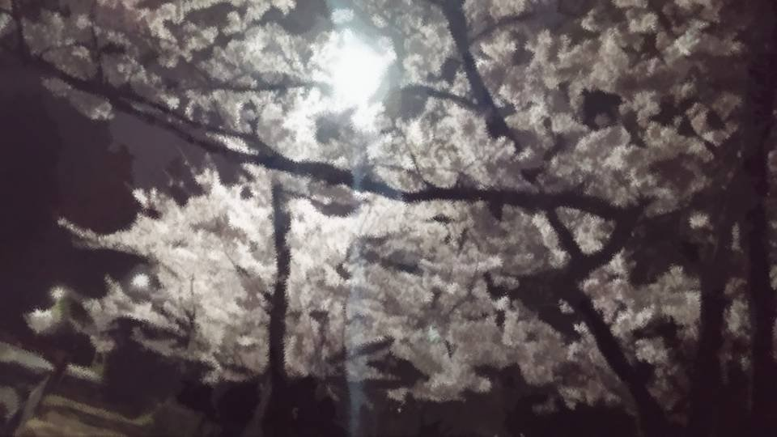
As I was told, I keep going straight down the bigger road.
On the way there were traffic lights, and several lines of about 10 cars.
Just as I thought, whether I run or take a taxi, the time probably wouldn't be much different.
On the way there were traffic lights, and several lines of about 10 cars.
Just as I thought, whether I run or take a taxi, the time probably wouldn't be much different.
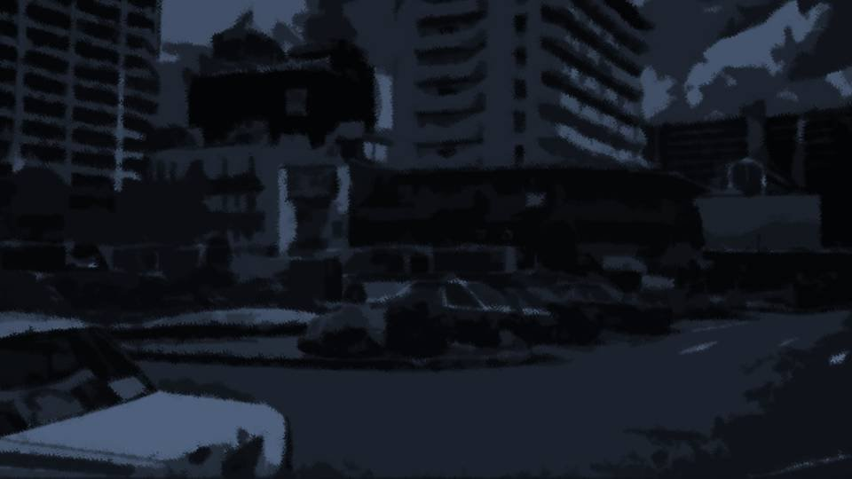
Arrival time, 20:40.
This must be the area in front of Motoki Station.
I'll catch a train toward Iizawa Prefecture now. How far will it take me?
I'll ask the station attendant.
This must be the area in front of Motoki Station.
I'll catch a train toward Iizawa Prefecture now. How far will it take me?
I'll ask the station attendant.
"Excuse me, from here...
um... which train gets to Toyotake Station the soonest!?"
I call out loudly to the station attendant at the ticket gate, who'd been yawning, bored.
"Toyotake Station...? Um, was there a station like that..."
"Toyotake Station in Iizawa Prefecture!"
"Iizawa Prefecture...? Ah, that's quite far. You won't get there today, you know?"
I call out loudly to the station attendant at the ticket gate, who'd been yawning, bored.
"Toyotake Station...? Um, was there a station like that..."
"Toyotake Station in Iizawa Prefecture!"
"Iizawa Prefecture...? Ah, that's quite far. You won't get there today, you know?"
"That's fine! Which train gets me even a little closer to Toyotake Station!?"
"Um... with today's trains... there's an express train bound for Megasawa Station coming in 10 minutes, I think. Megasawa Station is the last stop."
"From Megasawa Station to Toyotake Station... about how many kilometers is it...?"
"How many kilometers? Must be 100 kilometers, at least..."
"Understood! Thank you!"
"Um... with today's trains... there's an express train bound for Megasawa Station coming in 10 minutes, I think. Megasawa Station is the last stop."
"From Megasawa Station to Toyotake Station... about how many kilometers is it...?"
"How many kilometers? Must be 100 kilometers, at least..."
"Understood! Thank you!"
―My plan has more or less taken shape.
I'll take the express train to Megasawa now, and from there run on my own two feet along the tracks toward Toyotake, without stopping.
Since I'll be running nonstop until the sun comes up, even I will probably use up a lot of stamina.
Or should I have Daddy come get me now?
But in the buggy, that would be pretty rough.
I'll take the express train to Megasawa now, and from there run on my own two feet along the tracks toward Toyotake, without stopping.
Since I'll be running nonstop until the sun comes up, even I will probably use up a lot of stamina.
Or should I have Daddy come get me now?
But in the buggy, that would be pretty rough.

I'll call Daddy once I get to Megasawa.
Unusually for someone my age, I'm used to using public phones.
I even have a phone card, a relic of the past these days.
Unusually for someone my age, I'm used to using public phones.
I even have a phone card, a relic of the past these days.
Come to think of it, Goto-san mentioned it.
Today, Haruka-chan's real younger sister, Natsumi Kogori-san, is coming.
She's supposed to arrive at Motoki Station around 9 p.m., so maybe we'll pass each other.
Not that we'd even notice, since neither of us knows the other's face.
Today, Haruka-chan's real younger sister, Natsumi Kogori-san, is coming.
She's supposed to arrive at Motoki Station around 9 p.m., so maybe we'll pass each other.
Not that we'd even notice, since neither of us knows the other's face.
The train has arrived.
There's a short line of people waiting to board the same express as me.
Inside the train, through the windows, I can see a few people here and there.
It doesn't look too crowded, so I should be able to rest up plenty for the all-night run.
There's a short line of people waiting to board the same express as me.
Inside the train, through the windows, I can see a few people here and there.
It doesn't look too crowded, so I should be able to rest up plenty for the all-night run.
"Last stop, Motoki, Motoki. This train will turn around and run as the express train bound for Megasawa."
The doors open, and the people getting off at Motoki Station are spat out.
The doors open, and the people getting off at Motoki Station are spat out.
I've never regretted anything as much as I did in this moment.
I should have asked properly about the urge to want to kill Mommy.
It's not that I want to kill Mommy.
I want to kill people who have the same kind of intuition as Mommy.
In other words― if I meet Natsumi Kogori― I'll be driven by an unbearable urge to kill.
I should have asked properly about the urge to want to kill Mommy.
It's not that I want to kill Mommy.
I want to kill people who have the same kind of intuition as Mommy.
In other words― if I meet Natsumi Kogori― I'll be driven by an unbearable urge to kill.

Whether it was desire or reflex, I didn't even have time to perceive it.
The instant a strong wind blew― through my body― from the crown of my head to the tips of my toes― a sensation I'd never felt before shot straight through.
Without realizing it, I took out my knife, and slashed the neck of a woman whose name and face I didn't know.
Why did I do it?
There's no way I can explain that.
Because I couldn't even perceive the sensation, let alone a reason.
The instant a strong wind blew― through my body― from the crown of my head to the tips of my toes― a sensation I'd never felt before shot straight through.
Without realizing it, I took out my knife, and slashed the neck of a woman whose name and face I didn't know.
Why did I do it?
There's no way I can explain that.
Because I couldn't even perceive the sensation, let alone a reason.
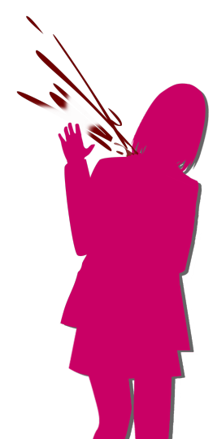
From there, a fountain of vivid blood wells up.
The fountain becomes a geyser and shoots up high.
But this person seems to have the same ability as me.
She dodged my attack at the last second and seems to have escaped instant death.
The fountain becomes a geyser and shoots up high.
But this person seems to have the same ability as me.
She dodged my attack at the last second and seems to have escaped instant death.
But the carnage doesn't end there.
The hot geyser traces an arc through the air and rains down on the people around.
When this person's blood touches them―
The hot geyser traces an arc through the air and rains down on the people around.
When this person's blood touches them―
And the next instant―
Comrades are made.
The women drenched in the blood― turn green-eyed― gain the same precognition― and then―
It begins.
The women drenched in the blood― turn green-eyed― gain the same precognition― and then―
It begins.
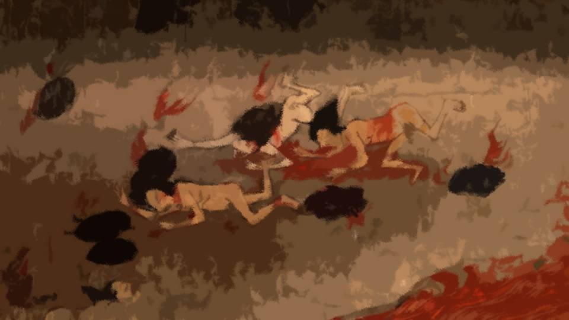
Like the dead fallen into the Hell of Revival, the women kill one another.
Roars and screams, and the sounds of punching, of kicking, of slashing with small knives.
The green-eyed dead take one another's lives, kill one another―
This station platform literally becomes hell.
Roars and screams, and the sounds of punching, of kicking, of slashing with small knives.
The green-eyed dead take one another's lives, kill one another―
This station platform literally becomes hell.
But I knew by intuition.
The urge to kill was definitely still there.
I wanted to kill the other green-eyed women too.
But my instinct chose surviving over killing.
Being near my comrades means I'm in danger too.
I―had no choice but to run.
The urge to kill was definitely still there.
I wanted to kill the other green-eyed women too.
But my instinct chose surviving over killing.
Being near my comrades means I'm in danger too.
I―had no choice but to run.
Taking on so many comrades here, I'd be outnumbered―
maybe my instinct is a little cowardly.
I slipped through the people's roars and screams, climbed over the platform fence, and escaped the station.
At Motoki Station right now, green-eyed women are killing one another.
The women drenched in Natsumi Kogori's blood―are killing one another.
I'm running from that killing.
Where... am I supposed to go?
At Motoki Station right now, green-eyed women are killing one another.
The women drenched in Natsumi Kogori's blood―are killing one another.
I'm running from that killing.
Where... am I supposed to go?
Read ✓ Next in this arc →